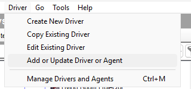
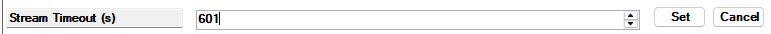
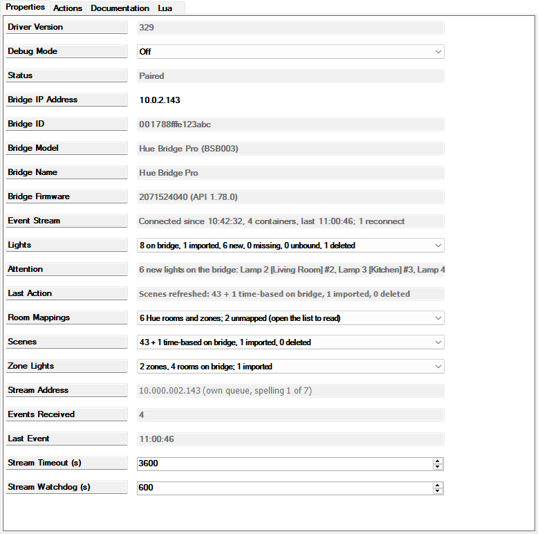
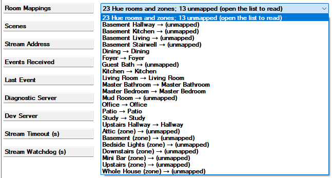
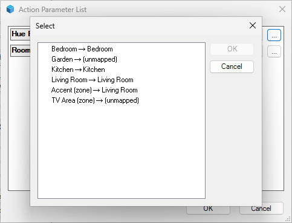
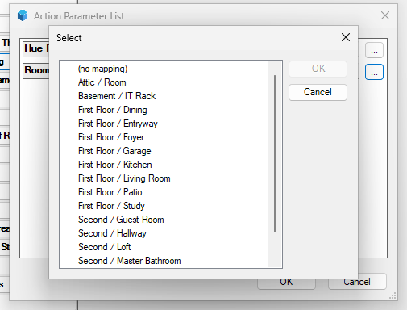
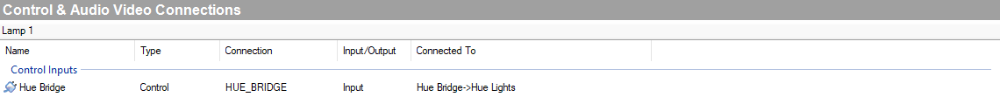
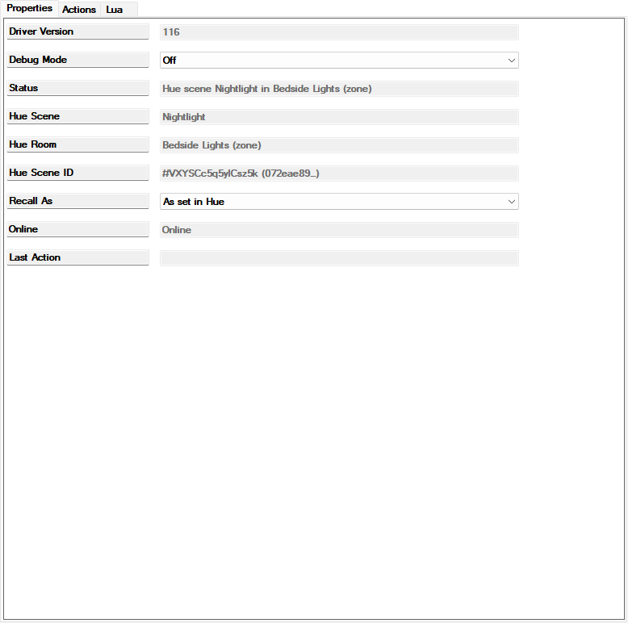
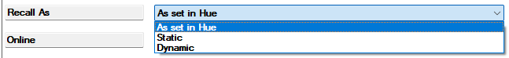
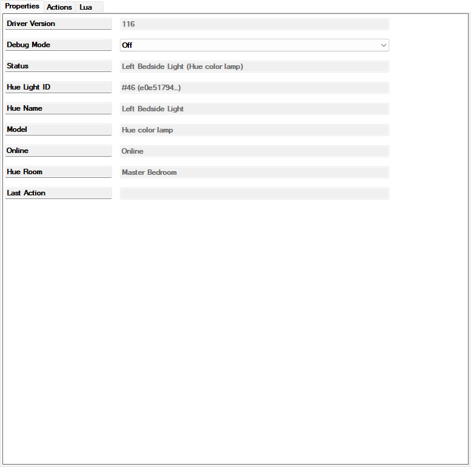

Owner's manual for the Hue Bridge, Hue Light, Hue Scene and Hue Motion Sensor drivers. This page is the full manual; the Hue Light, Hue Scene and Hue Motion Sensor devices carry a short page of their own that points back here.
Getting started
The Hue Bridge device
Lights and scenes
Help and reference
Motion sensors and Hue automations
This driver connects one Philips Hue bridge to your Control4 system over your own home network; no cloud account is involved and nothing leaves the house. Each Hue light you choose becomes an ordinary Control4 light that you can switch, dim, colour and program like any other light in the project, and so can a whole Hue zone or room: one light whose tile moves every lamp in it at once (chapter 7). Changes made in the Hue app or with Hue switches and dimmers show up in Control4 within a second or two, because the driver listens to the bridge's event feed (the bridge's running report of everything that changes) rather than asking it over and over. Hue scenes, the saved looks you create for a room in the Hue app, can become Control4 dimmers: turning one on plays the scene, turning it off turns that Hue room or zone off, and its slider brightens or dims the room or zone while keeping the scene's look. Hue's time-of-day scenes, such as Golden hours and Natural light, can become such dimmers too; turning one on starts its schedule (9.11). Adding a device and removing one are always your clicks: the driver never creates, deletes or moves a Control4 device on its own. The rest it looks after by itself, and says so: it reads the bridge again behind the event feed, finds the bridge again when its address changes, keeps the names of lights, scenes and motion sensors the same in Composer and in the Hue app, maps a new Hue room to the Control4 room of the same name, and re-links a bulb that comes back to the bridge with the same radio. The last section of this chapter lists everything it does by itself. What needs you is listed in Attention; the result of each action you run, and of each change the driver made by itself, is in Last Action.
Two words this manual uses throughout: a light is a Hue light, the bulb, strip or lamp as the Hue app lists it; a Hue Light, with a capital L, is the Control4 device that stands for it. A Hue Light can also stand for a whole Hue zone or room; this manual then calls it a zone light, for a Hue room as for a Hue zone. Navigators is Control4's word for everything you control the house from: touch screens, remotes and the Control4 app. A short glossary of the other terms is at the end of this manual.
| Device | How many | In Composer | On Navigators |
|---|---|---|---|
| Hue Bridge | One | A device in any room you like (an equipment room or the room the bridge sits in). Its Properties page shows the state of the connection and lists the lights, scenes, zone lights, motion sensors and Hue automations on the bridge (chapter 5); its Actions tab holds the ten actions of this manual (chapter 13 lists them, and where the actions of earlier releases went). | Not shown. The bridge has no user interface of its own. |
| Hue Light | One per Hue light you import, and one per Hue zone or room you add as a light | A light in a room, with the Hue light's name. Normally created only by the bridge's Import All New and Add From Hue actions; one added by hand has to be connected and linked (8.6). The same device type stands for a whole Hue zone or room when Add From Hue created it from its zones and rooms (chapter 7): a zone light, named after the zone (Accent), or for a Hue room after the room with Lights added (Living Room Lights). | Appears on the room's Lighting page like any dimmer: a tile for on and off and a brightness slider; lights that can do colour or colour temperature also get the colour controls. A zone light's tile, slider and colour controls move every lamp of the zone or room at once. |
| Hue Scene | One per Hue scene you import | A dimmer in a room, named after the Hue scene (with the zone's name in front for a zone scene). Created only by Add From Hue, from its scenes, and only in the Control4 room its Hue room or zone maps to (chapter 9). | A tile with a slider on the room's Lighting page. On plays the scene; off turns the scene's Hue room or zone off; the slider brightens or dims the room or zone, keeping the scene's look. The tile shows a level only while its own scene is the one playing, and moving its slider while another scene plays switches to this one (9.4). |
| Hue Motion Sensor | One per Hue motion sensor or MotionAware area you add | A motion sensor in a room, named as the sensor or area is named in the Hue app, with Control4's motion sensor icons. Normally created only by Import All New and Add From Hue; one added by hand has to be connected and linked (chapter 14). | Expected under Security, Locks & Sensors in the Control4 app, as Control4's own motion sensors are. |
In Composer's System Design tree the Hue Bridge sits in its room like any other device, and the lights and scenes it creates sit in the rooms you chose for them. You can drag a Hue Light or Hue Scene to another room at any time; that does not disturb its link to the bridge.
Icons. The Hue Bridge shows a small dark Hue Bridge Pro, in the tree and in a room's List View. In the tree a Hue Light shows a Hue dimmer switch and a Hue Scene the same switch with its buttons lit in colours. Composer fixes a device's tree icon when the device is created: a Hue Light or Hue Scene created by a build that already had these icons follows them, one created by an earlier build keeps Control4's standard bulb for good. In a room's List View every Hue Light and Hue Scene shows Control4's standard light icon.
The Hue Bridge runs a few jobs of its own. They are always on; there is no setting to switch them off. They run one at a time, read from the bridge without changing anything there (the one thing the driver writes to Hue by itself is a name: after a device was renamed in Composer, 8.2, or re-linked, 8.3), and always let your own commands and clicks go first; the safety reads among them also wait five minutes after a controller restart (a minute after a driver update) before they start. None of them reaches the internet: the driver talks only to the bridge and, to find it, to your local network.
| Job | When it runs | What you see |
|---|---|---|
| Read the lights, scenes, zone lights and motion sensors from the bridge again | Every time the event feed connects: a full read at the first connection after a start, after an error and after an outage of 10 minutes or more, a quick read (without the scene list) when the feed was reopened because it had gone quiet. A read that failed is tried again after 1, 2, 4 and 8 minutes, then every 15 minutes. While the feed is connected, also when the last read is 6 hours old (a quick read) or 24 hours old (a full read); and once the feed has been down for 5 minutes, a quick read every 10 minutes, which keeps the rows current while the bridge still answers. The 6-hour, 24-hour and 10-minute reads together send at most 100 requests to the bridge in any hour (a quick read is 15 on a Bridge Pro). | The rows and the devices stay current; a full read also reads the Hue automations (chapter 15). Diagnostics reads everything at once when asked (chapter 12). |
| Check a rejected pairing key again | After the bridge refused the key (Status Key rejected by the bridge …): 5 minutes later, 15 minutes later, an hour later, then every hour. | If the bridge takes the key again, the stop ends, the feed reconnects by itself and Last Action reads The bridge accepts the application key again: event stream restarting (8.8). A bridge that really forgot the key still needs the link button and Pair Bridge. |
| Check the bridge again after an outage | Once the event feed has been down for a minute. | Before anything that carries the pairing goes out again, the driver asks the bridge at the address for its identifier, as at a start: Status reads Checking the bridge at 10.0.2.143 before anything is sent meanwhile, then Paired, and the feed reconnects (chapter 4, "When the bridge is offline"). |
| Show the Hue devices offline while the bridge does not answer | When the bridge has not answered, or has refused the pairing, for 5 minutes; back at its first answer. | Every Hue Light, zone light and Hue Scene reads Online Offline, with a disabled tile and a Status that says since when; every Hue Motion Sensor's Online turns No; Attention reads Hue devices offline since 14:07: …. At the first answer they all come back by themselves (chapter 4, "When the bridge is offline"). Before the 5 minutes, a command the bridge does not take is never shown as done. |
| Find the bridge on the network | On a driver that is not paired: a few seconds after it starts (when it is added, after every restart of the controller and after Forget Pairing), a minute and five minutes later, then every 15 minutes until it is paired. On a paired driver: when the bridge has not answered for 5 minutes at the address where it last answered, or another bridge answers there; then a search by mDNS every few minutes, and the search of every address at most once an hour. Once, by mDNS, when the paired bridge does not answer at an address typed by hand. | The Bridges Found row lists the bridges found (chapter 4); these searches write nothing to Last Action, which reports only a search you pick there. The paired bridge found at a new address: Bridge IP Address is updated, Last Action says so, and Attention too for a day (chapter 4, "When the bridge's address changes"). The paired bridge away for an hour, or answering elsewhere than at the address you typed: Attention says so. |
| Check the Hue automations | At every full read, whenever the event feed reports a Hue automation made, changed or deleted, and at once after a device is added, linked or forgotten. | The Hue Automations row lists every automation on the bridge, and Attention the ones that move lights Control4 controls by themselves (chapter 15). The job only reads: switching an automation off or on in Hue is always your click. |
| Keep names the same on both sides | When a light, scene or motion sensor is renamed in Composer or in the Hue app, and at every read of the bridge for the renames made while the driver was not watching. | The other side follows within seconds, and Last Action says what was sent where (8.2). What cannot follow is listed in Attention and settled with Resolve Names. |
| Re-link a bulb or sensor that comes back with the same radio | At every read of the lights and the motion sensors, and when a new light or sensor appears on the event feed. | Last Action, for example Re-linked Desk Lamp to its bulb (same radio, new Hue id) (8.3); when it happens inside Import All New, the import's result names the device instead (chapter 7). |
| Map new Hue rooms by name | When the bridge's rooms are first read on a new installation, and whenever a Hue room or zone appears later that the driver has not seen before, if exactly one Control4 room has its name. | Room Mappings shows the new mapping, marked (by name), and Last Action names it, for example Mapped 1 Hue room or zone by name: Porch → Porch; a mapping you set or removed by hand, or one made before 1.2, is never changed (chapter 6). |
| Point out a device that sits in another room | At every refresh of the rows. | The device's line in Lights, Scenes, Zone Lights or Motion Sensors names the Control4 room it sits in when that is not the room its Hue room or zone maps to, for example (in Den instead of Kitchen) (chapter 6). |
| Take over devices that remember their Hue light, scene or sensor | At every start of the bridge and every time such a device is connected to it. | The device works again by itself; a device that matches only by its name is linked with the first line of Link Device instead (8.6). |
| Turn Debug Mode back Off | 8 hours after it was set to On, on the Hue Bridge and on each Hue Light, Hue Scene and Hue Motion Sensor for itself. A restart of the controller or the driver keeps the time that is left. | Debug Mode reads Off again, and that device's Last Action says so (chapter 5). |
A job that changed something says so in Last Action: a key the bridge accepts again, the bridge followed to a new address, a device re-linked by its radio, a name sent to Hue or taken from it, a room mapped by name, Debug Mode turned back Off. A job that only read writes nothing there, the searches of Bridges Found included (a search you pick there reports in Last Action, chapter 4); with the bridge's Debug Mode On every run is a line in the Lua output, so that support can tell what ran and when. What these jobs find that needs you goes into Attention: the bridge away for an hour, the event feed down for an hour while the bridge answers, the paired bridge answering elsewhere than at an address you typed, for a day a move of the bridge that the driver followed, and the Hue devices offline while the bridge has not answered for 5 minutes (chapter 4). What the driver never does by itself: create, delete or move a Control4 device; pair with a bridge (the link button is always a person's press); take over a bridge with another identifier; overwrite an address you typed that never worked; cut a name Hue refuses; switch a Hue automation off or on, or delete one (chapter 15); or rename a Hue room, a Hue zone or a Control4 room.
Hue and Control4 organise a home differently. The table shows what each Hue construct becomes on the Control4 side, and the actions that create the link.
| In Hue | In Control4 | How |
|---|---|---|
| The Hue bridge | The Hue Bridge device | You add it once and pair it (chapter 4). Everything else is created from its Actions tab. |
| A light (a bulb, a strip, a lamp) | A Hue Light device: a Control4 light with dimming, and with colour and colour temperature when the light supports them | Import All New (every new light and motion sensor into the room its Hue room maps to) or Add From Hue (one light at a time, into a room you pick). A Hue fixture that contains several lights gives one Hue Light per light, each named as the Hue app names that light. |
| A Hue room or zone | A mapping to a Control4 room, listed in Room Mappings (chapter 6) | By itself for identical names (chapter 6), and by hand with Set Room Mapping. The mapping decides which Control4 room a newly imported light or scene lands in; it never moves anything afterwards. A zone is a group of lights that may sit in several rooms; Hue scenes belong to a room or a zone, and go only into the Control4 room it maps to (chapter 6, "Scenes stay in their room"). |
| A Hue zone or room, as one thing to switch, dim and colour | A Hue Light device standing for the whole zone or room, a zone light: one Control4 light whose tile, slider and colour controls move every lamp in it at once, with a single request to the bridge | Add From Hue, from its zones and rooms (one at a time, into a room you pick or the zone's mapped room; chapter 7). A zone light is named after the zone, Accent, or after the Hue room with Lights added, Living Room Lights. Never created by an import. The zone's scenes can be Hue Scene devices beside it (9.4). |
| A scene | A Hue Scene dimmer device | Add From Hue, from its scenes: one scene, or every scene of a Hue room or zone at once, into the Control4 room that room or zone maps to (chapter 9). ON plays the scene; OFF turns the scene's room or zone off; the slider brightens or dims the room or zone. |
| A time-of-day scene, such as Golden hours or Natural light (Hue calls them smart scenes) | A Hue Scene dimmer device, as for a scene | Add From Hue, which lists it among the scenes of its room or zone with (time-based) after its name. ON starts the schedule with the current time slot's look; OFF stops it and turns the room or zone off; the slider brightens or dims the room or zone while the schedule keeps running (9.11). |
| A motion sensor, or a MotionAware area of a Hue Bridge Pro | A Hue Motion Sensor device: a Control4 motion sensor, Open while Hue reports motion | Add From Hue (one sensor or area at a time, into a room you pick or the mapped room), or Import All New (every new sensor into the room its Hue room maps to; never an area) (chapter 14). |
| The names of lights and scenes | The device names in Composer | Given when the device is created (for a time-of-day scene without the number the Hue app adds, 9.11), and from then on kept the same on both sides: a rename in Composer renames the light, scene or motion sensor in the Hue app, a rename in the Hue app renames the device, and when both changed the Composer name wins (8.2). Hue rooms, zones and zone lights are not synced. What cannot follow by itself is listed in Attention and settled with Resolve Names. |
| Which light is which | The link between a device and its Hue light | Kept by the bridge, by the light's Hue identity (the long code the bridge gives every light). A bulb that comes back to the bridge with the same radio is re-linked by itself; any other replacement is re-pointed with Link Device; a device is released with Forget Device; a device you connected yourself is linked by itself when it remembers its light, or by its name with the first line of Link Device (8.6). |
Everything in this manual happens in Composer Pro, connected to your controller. The places it refers to:
Are you sure you want to delete the item '…'? and deletes it on Yes.An action that takes choices opens Composer's Action Parameter List dialog: one row per choice, each with a … button that opens a Select list. Click an entry, then that list's OK (the inner OK, greyed out until you have chosen), and when the rows are filled click the dialog's own OK (the outer OK) to run the action. Cancel on either closes it without doing anything.
The lists of Add From Hue, Link Device, Forget Device and Hue Automations are sorted into folders, the way files are: a folder opens with a double-click on its text. Inside a folder the first line is the driver's and says where it leads: Back to all folders in a folder of the top level, Back to Scenes in a room's or zone's folder of scenes; double-click it to go there. Composer offers a Back of its own as well, but it reacts only to a double-click on the word itself, which is easy to miss. A folder can be picked as a whole where that means something, as a room's folder of scenes does in Add From Hue (all its scenes); otherwise pick a line inside it. Each list takes one pick; for many at once there are the All … lines. A list with nothing to offer holds one line that says why, and picking it changes nothing. The rows of one dialog do not see each other's choice while you pick, so the action checks them together when it runs, and refuses a pair that does not fit (a light's device with a scene, say) in Last Action.
A row left empty reaches the driver empty: an empty Room in Add From Hue means (mapped room); any other empty row is refused with a Not … text in Last Action (for example Not added: … or Not forgotten: pick a device under Device first; chapter 12 lists them, and 14.17 those about motion devices). Forget Device and Forget Pairing have a Confirm row, No or Yes, forget: anything but Yes, forget answers Not forgotten: choose Yes, forget and changes nothing. The dialog remembers your previous choices for that action, so always look at every row before clicking OK; a remembered choice is as good as a new one to the driver.
hue_bridge.c4z, hue_light.c4z, hue_scene.c4z and hue_motion.c4z (for Hue motion sensors and MotionAware areas, chapter 14), all four from the same release on the project's GitHub page. Each build has a number that all its files share and that the devices show as Driver Version once installed; the release names it, and so does the changelog at the end of this page. Install them all together.Only drivers you trust in the project. Control4 does not tell a driver which driver sent it a command. So any driver installed in the same project can run the Hue Bridge's actions as the Actions tab does, Forget Pairing and Hue Automations included, and can send messages to the Hue Light, Hue Scene and Hue Motion Sensor devices. No action gives out the pairing key, a device ignores a message that names another Hue light, scene or sensor than its own, and every action writes Last Action, so a change you did not make shows there. Install only drivers you trust, as for any driver that can command the house. The file SECURITY.md on the project's GitHub page says what is protected and what is not.
Update Succeeded: Drivers or agents were successfully added: hue_bridge.c4z, hue_light.c4z, hue_motion.c4z, hue_scene.c4z.Hue Bridge. The search also finds Control4's own Hue drivers; the one you want is the Hue Bridge by manufacturer Philips Hue with the model text Hue Bridge (CLIP v2). Double-click it: one Hue Bridge device appears in the room.
Composer's Driver menu with Add or Update Driver or Agent… highlighted: the one route used both for installing and for updating.
(No screenshot of the System Design tree is included: it would show one home's device inventory. Yours shows the Hue Bridge in the room you added it to.)
Select the bridge and open its Properties tab. Before pairing the page reads like this:
Enter the bridge IP address.No Hue bridge answered: type its address in Bridge IP Address for the first three seconds, then Looking for Hue bridges on the network... while it searches, and then the bridges it found (chapter 4, step 1).Not paired.0 imported; Scenes: 0 imported; Zone Lights: 0 imported; Motion Sensors: 0 imported.None; Room Mappings: None yet (Set Room Mapping makes one) until the bridge has been read (chapter 6).0; Stream Timeout (s): 3600; Stream Watchdog (s): 600.Chapter 4 fills in the rest; chapter 5 explains every row.
Updates go through the same Driver » Add or Update Driver or Agent… menu: select all four new files at once, as for the first installation. Composer answers Update Succeeded: Drivers or agents were successfully updated: hue_bridge.c4z, hue_light.c4z, hue_motion.c4z, hue_scene.c4z (on an update from 1.0, hue_motion.c4z is listed as added) and pushes the new version to every existing device: the bridge and every Hue Light, Hue Scene and Hue Motion Sensor show the new Driver Version within a minute, the bridge restarts and its event feed is back within seconds, and the pairing, the lights, the scenes and the motion devices are untouched. That is all, unless Composer asks the question below. The first time you open a device's Documentation tab after an update, Composer may still show the page of the build before (seen once on 2026-10-25): select the device again, or another device and back, and the tab shows the new page.
Restart Director?, reboot the controller. Some releases change what a device type can do in Control4, its capabilities; 1.5, for example, let Hue Lights join Control4 load groups (chapter 11), and the changelog at the end of this page says so for each release that needs the reboot. Installing such a build makes Composer ask Restart Director?. Answering Yes does not restart Director: the driver whose capabilities changed keeps running its old code, and its devices keep showing the old Driver Version, until the controller itself is rebooted. To reboot it, open System Manager (in Composer, Tools » System Manager; it needs administrator rights on the computer), right-click the controller and reboot it. Composer loses its connection and is back a few minutes later (about seven and a half minutes once on the house system). Then check Driver Version on the bridge, on one Hue Light, one Hue Scene and one Hue Motion Sensor, and choose File » Refresh Navigators so the touch screens and the app pick up what changed. For up to a minute after the reboot a Hue Light, Hue Scene or Hue Motion Sensor may read Not bound to a Hue Bridge; it corrects itself (8.7). An update during which Composer does not ask the question takes effect at once and needs no reboot. Until the reboot, what the update brought to the device types (keypad settings, a place in load groups, new events) is missing in Composer; chapter 12 has that case among its texts.Not bound to a Hue Bridge until connected and linked again by hand (8.6). Updating in place keeps everything.If you ever need to reload the same version, right-click the bridge and choose Update Driver; Composer asks Versions are equal. Do you want to overwrite…? and reloads it on Yes. For anything newer, use the menu route above. Neither route helps a device that kept its old code after a Restart Director? question; only the reboot does.
Going back to an older build uses the same menu with the older files. This has not been tested; expect the devices to keep their pairing and links as they do on an update, and read Status and Lights afterwards rather than assume.
Release and development builds. The developer sometimes makes development builds that fetch their code from a server on the home network; they carry two extra properties (Dev Server, Diagnostic Server) and four extra entries in the list of the Diagnostics action, each starting with (dev) (two connection experiments, reloading the credentials and checking the CA pinning). A release build shows none of them, and a development build's Driver Version, on every device, reads its build number followed by -dev; so a device whose Driver Version ends in -dev, or a bridge whose Properties page has a Dev Server row, is running a development build and should be replaced with the release files through the menu above.
A Hue Bridge device that is not paired looks for Hue bridges on your network by itself: a few seconds after it is added (and after every restart of the controller, and after Forget Pairing), again after a minute and after five minutes, then every 15 minutes until it is paired. It asks the way the Hue app does on a home network (mDNS); it never asks the internet. Each bridge that answers is checked before it is listed (it must be a Hue bridge, with Signify's certificate, and it must report its identifier), and the bridges found appear in the Bridges Found row, right below Bridge IP Address. The row shows a summary; open its list to see the bridges:
| When | The row reads | The list holds |
|---|---|---|
| While it looks | Looking for Hue bridges on the network... | Search again |
| Bridges found | 2 Hue bridges found: pick one and click Set to pair | One line per bridge, its model, its name from the Hue app (its first 20 characters), its address and the last six characters of its identifier: Hue Bridge Pro - Upstairs - 10.0.2.143 - 123ABC, Hue Bridge v2 - Garage - 198.51.100.61 - 456DEF; then Search again |
| Nothing answered | No Hue bridge answered: type its address in Bridge IP Address | Search again, and a search of every address, which names the networks it searches, the one of Bridge IP Address first: Search every address of 10.0.2.x and 198.51.100.x (about 4 minutes), or Search every address of 198.51.100.x (about 2 minutes) when only one network applies (no address typed, an address on the controller's own network, or a public address, which is never searched) |
| A first-generation bridge answered | (as above) | Its line ends in not supported (no CLIP v2) instead of the identifier; picking it only explains why: Hue Bridge v1, round (BSB001) at 198.51.100.62 is a first-generation bridge without the CLIP v2 API: this driver cannot use it |
| Paired | Paired with Hue Bridge Pro (BSB003) at 10.0.2.143 | Search again (and the search of every address, as above) until a search has found a bridge; after one, the paired bridge first, marked (paired) in front ((paired) Hue Bridge Pro - Upstairs - 10.0.2.143 - 123ABC), then any other, then Search again. A bridge that the Hue app set up as the paired one's replacement ends in replaces the paired bridge |
Pick your bridge in the list and click the row's Set button (the Set button rule below applies). The driver writes the bridge's address into Bridge IP Address, Last Action reads Bridge IP Address set to 10.0.2.143: press the link button on the Hue bridge, and the pairing window of step 3 opens: go and press the link button. Only the bridge you picked is paired: should another bridge answer at that address meanwhile, it receives nothing and Status reads Pairing failed: Bridge at 10.0.2.143 reports ID 001788fffe456def, expected 001788fffe123abc (the bridge picked in Bridges Found); pick it again or Search again. (Pair Bridge clicked by hand on a driver that was never paired pairs whichever bridge answers at the address.) With two bridges on the network (a Bridge v2 beside a Bridge Pro, say) the driver chooses neither; the name the Hue app gives each bridge (Settings » My Hue system) tells them apart. Search again searches once more at once; Search every address … asks each address of up to two blocks of 254, the block of the address in Bridge IP Address (when there is one) and the controller's own, whether it is a Hue bridge, a few at a time, which takes about two minutes a block and lists every Hue bridge that answers. A search you pick reports in Last Action, for example Bridges Found: 1 Hue bridge found by mDNS, Bridges Found: no Hue bridge answered or Bridges Found: searched 10.0.2.x and 198.51.100.x: no Hue bridge (of 3 address(es) that accept port 443). The automatic searches change only the row (with Debug Mode On the Lua output says Bridges Found (automatic search): …), so Last Action keeps the result of what you did last. On a paired driver a pick answers in Last Action too: Already paired with this bridge at 10.0.2.143; Bridge IP Address set to 198.51.100.20, where the paired bridge answers (the paired bridge at another address: the pick corrects the address, and the pairing is kept); Not changed: Hue Bridge v2, square (BSB002) at 198.51.100.61 is another bridge; to pair it instead, run Forget Pairing first; or, for the replacement, … replaces the paired bridge: run Forget Pairing, then pick it here again. Once paired, the row reads Paired with Hue Bridge Pro (BSB003) at 10.0.2.143 at once and the automatic searches stop. As in the other list rows, a comma in a name shows as ‚, and the row returns to its summary after a pick.
If your bridge is not listed (a bridge on another part of the network than the controller does not hear the search, for example), look up its address in the Hue app: Settings » My Hue system » tap the bridge; its IP address is listed there, for example 10.0.2.143, and step 2 says where to type it. Either way, reserving that address for the bridge in your router is still a good idea: a bridge that keeps its address never has to be looked for.
On the bridge's Properties page, click in the value cell of Bridge IP Address, type the address, for example 10.0.2.143, and click the row's Set button. On a driver that has never been paired, or whose pairing was forgotten, this opens the pairing window of step 3 at once, as a pick in Bridges Found does; otherwise Status reads Not paired: press the link button, then run Pair Bridge.
The address must be four numbers from 0 to 255 separated by dots, written without leading zeros (10.0.2.143, not 10.000.002.143), and not a name. Before pairing, an invalid entry only makes Status read Enter the bridge IP address (an address entered earlier is dropped); correct the text and click Set again. While paired, an invalid entry is not harmless: the driver drops the stored address, Status returns to Enter the bridge IP address, the event feed stops (Event Stream reads Stopped) and the lights stop following the bridge until a valid address is set again. The pairing itself is kept, so once a valid address is set again the feed reconnects by itself within seconds and everything is back.

A property row after editing: the Set and Cancel buttons at the right end of the row, and only Set hands the change to the driver.
The bridge hands out a pairing only for a short while after its link button, the large round button on top, has been pressed. Pair Bridge therefore waits for the press: it opens a pairing window of up to 2 minutes, in which the driver asks the bridge every 3 seconds until the button has been pressed. Picking a bridge in Bridges Found, or entering the address on a driver that is not paired, opens the same window. The order does not matter: click first and walk to the bridge, or press first and click within the bridge's own half minute.
Pairing: contacting bridge, then Pairing: found Hue Bridge Pro (BSB003) 001788fffe123abc, requesting key (the model with its id, then the bridge's identifier; a square version 2 bridge reads Hue Bridge v2, square (BSB002)), then Press the link button on the Hue bridge (waiting 1:40), the time left counting down.Checking the bridge at 10.0.2.143 before anything is sent while the driver confirms the bridge's identifier and makes the TLS check (chapter 12, "The TLS check"), then Paired. Bridge ID, Bridge Model, Bridge Name (the bridge's own name from the Hue app) and Bridge Firmware fill in. The pairing is a key the bridge issued to this controller; the driver stores it and never shows it.If nobody pressed the button within the 2 minutes, Status reads Pairing window closed: press the link button on the Hue bridge, then run Pair Bridge again: click Pair Bridge again and press the button. The window never opens by itself at a start or after the bridge refused the key: a pairing always follows a person's press, so a key you removed in the Hue app is not quietly replaced the next time someone presses the button for another app. If Status reads Enter the bridge IP address first, steps 1 and 2 were skipped. Three failures start with Pairing failed: followed by the reason: Pairing failed: No Hue bridge answered at … means nothing usable answered at that address (check the address in the Hue app and that bridge and controller are on the same network); Pairing failed: No usable answer to the key request: … means the bridge answered the first question but not the pairing request itself (try again; if it persists, check that the address really is a Hue bridge); Pairing failed: bridge error … means the bridge refused with an error of its own (try again after a moment, and after a restart of the bridge if it persists). Rarer answers are Pairing failed: the bridge answered without a usable application key, Pairing failed: unexpected response and Pairing failed: empty response; try again. Four more refusals come before any key is asked for: Pairing failed: Bridge at 10.0.2.143 reports ID 001788fffe456def, expected 001788fffe123abc; run Forget Pairing first to pair with another bridge (the bridge at the address is not the paired one; see Forget Pairing below), Pairing failed: This is a Hue Bridge v1, round (BSB001): … (the round first-generation bridge, which this driver cannot use), Pairing failed: The device at … is not a Hue bridge (model …) (the address belongs to something else), and Pairing failed: Bridge firmware … is older than 1948086000, … (update the bridge in the Hue app, then pair again).
Right after Paired the driver opens the bridge's event feed. Event Stream shows Connecting, then Connected since 14:03:12, and from the first event onwards Connected since 14:03:12, 12 containers, last 14:03:40; a container is one bundle of changes the bridge sent, and Events Received counts the same bundles. Within a few seconds the driver has done its first full read of the bridge's lights, rooms, zones, scenes and motion sensors:
8 lights on bridge, 0 imported, 8 new, Scenes 43 scenes + 1 time-based on bridge, 0 imported, 44 new, Zone Lights 2 zones + 4 rooms on bridge, 0 imported, 6 new and Motion Sensors 2 sensors + 1 area on bridge, 0 imported, 3 new (chapter 14).8 new lights on the bridge: Lamp 1 [Living Room] #1, Lamp 2 [Living Room] #2, Lamp 3 [Kitchen] #3 +5 more (Import All New or Add From Hue).Nothing has been added to the project yet. Chapters 6 and 7 are the next steps.

The Hue Bridge Properties page after pairing. Look at Status Paired, Bridge ID and Bridge Model filled in, Event Stream Connected since …, and the Lights and Scenes count lines. The picture is from an early development build, so its rows differ from a release build's: a release build has no Dev Server or Diagnostic Server rows, and has rows the picture lacks, such as Bridges Found, Zone Lights, Motion Sensors and Hue Automations. Chapter 5 lists every row in the order Composer shows them.
The driver checks the connection by itself: a rejected key 5 minutes, 15 minutes and an hour later and then every hour (8.8), and the lists behind the feed (chapter 1). To check at once, run Diagnostics and pick Check the connection now (chapter 12): Last Action reads Check the connection now: started (the result shows in Status), and the driver asks the bridge one question and writes the answer to Status, briefly Testing: GET /clip/v2/resource/bridge via 10.0.2.143, then Test OK: HTTP 200 via 10.0.2.143 in 0 s, bridge 001788fffe123abc. The three-digit numbers in these texts are the bridge's reply codes: 200 means the bridge answered properly, 401 or 403 that it refused the pairing key, 404 that the thing asked for no longer exists. The question carries the pairing, so it goes only to a bridge that has passed two checks: the driver asks the bridge at the address for its identifier, a question without the pairing, and then makes the TLS check (chapter 12, "The TLS check"). The driver makes both at every start and after a change of Bridge IP Address, and asks for the identifier again once the feed has been down for a minute (the TLS check of that start stands; "When the bridge is offline" below); if they have not passed since, the check makes them first (Status reads Testing: checking the bridge identity first meanwhile). A different bridge at the address ends it with Bridge at 10.0.2.143 reports ID 001788fffe456def, expected 001788fffe123abc; nothing is sent until the address is corrected (it receives nothing that carries the pairing), and a failed TLS check with TLS check failed: nothing is sent (see Attention); a check asked for after that sends nothing and says Test refused: TLS check failed; nothing is sent (see Attention). A device at the address that is no bridge this driver can use ends it with Bridge at 10.0.2.143 is a …: no CLIP v2 API; nothing is sent (chapter 12). When nothing answers, Status reads Bridge at 10.0.2.143 not reachable (…); checking again in 30 s, or TLS check inconclusive (…): nothing is sent; checking again in 30 s when only the TLS check went unanswered (chapter 12); the driver asks again every 30 seconds, and the check goes ahead by itself once both pass. Once the bridge has passed, three failures are possible: Test failed: key rejected (HTTP 403). Re-pair with Pair Bridge (the bridge no longer accepts this pairing, see 8.8; a bridge that answers 401 shows that number instead), Test failed: bridge reports ID …, expected … (the answer names another bridge) and Test failed: … with the reason: a network error when nothing answers, or another reply code such as HTTP 503. When not paired it says Not paired. If the check succeeds while the driver had stopped because the bridge refused the pairing (Key rejected by the bridge …, 8.8), the bridge accepts the pairing again: the stop ends and the feed reconnects, as it does when the driver's own re-check succeeds. Otherwise the check leaves the normal connection alone.
Forget Pairing removes the stored pairing from the controller and stops the event feed. It asks first: its dialog has one row, Confirm, with No and Yes, forget; only Yes, forget goes ahead, and anything else answers in Last Action Not forgotten: choose Yes, forget and changes nothing. (The dialog remembers your last choice, as every dialog does, so look at the row before clicking OK.) Once forgotten, Status returns to Not paired: press the link button, then run Pair Bridge (the address is kept), Event Stream reads Stopped, Bridge ID, Bridge Model, Bridge Name, Bridge Firmware, Stream Address and Last Event are cleared and Events Received returns to 0, and Last Action reads Pairing forgotten: the key is gone and the event stream stopped; devices and the address are kept. No pairing window opens. The Bridges Found row drops its Paired with … summary at once and reads No Hue bridge answered: type its address in Bridge IP Address, or 2 Hue bridges found: pick one and click Set to pair when its last search found some, and the automatic searches of step 1 start again: three seconds later the row reads Looking for Hue bridges on the network..., and the searches follow after a minute, after five minutes and then every 15 minutes until a bridge is paired. Attention drops its items about the paired bridge (below). The Hue Light, Hue Scene and Hue Motion Sensor devices stay in the project and keep their links; they simply stop following the bridge until you pair again (after a minute a motion device's Status says so, Bridge not answering since 14:02; motion not current), a command given to a light or scene meanwhile is dropped, not kept for later, and after 5 minutes every one of them goes offline, reading Hue Bridge not paired since 14:02, until you pair again ("When the bridge is offline" below). Pair with the same bridge and everything resumes (the links are expected to survive; this has not been exercised on the house system, so read Lights afterwards). Forget Pairing is needed only to pair with a different bridge. Pair Bridge compares the identifier of the bridge at the address with the stored one before it asks for a key: the same bridge pairs again at any time (after a reset of the bridge, say, or at a new address) and keeps every link, while a different bridge is refused with Pairing failed: Bridge at 10.0.2.143 reports ID 001788fffe456def, expected 001788fffe123abc; run Forget Pairing first to pair with another bridge and receives nothing, because the links of your devices belong to the paired bridge. Nothing else changes: the pairing, the feed and the rows stay as they were. After Forget Pairing the other bridge pairs, and then every Hue Light and Hue Scene whose light or scene that bridge does not have reads Gone until re-linked, by itself for a bulb with the same radio or with Link Device (8.8); a Hue Motion Sensor whose sensor or area it lacks reads as deleted in Hue (14.12).
If the bridge is unplugged, rebooting or unreachable then the feed ends. The driver notices when the bridge closes it, or when Stream Watchdog (s) passes without a word from the bridge (Disconnected: watchdog: no data for 600 s. Reconnecting in 1 s; in a quiet house it can take until the connection's Stream Timeout (s), chapter 5). While the bridge does not answer, Event Stream reads Disconnected: transfer error 28: …. Reconnecting in 2 s or similar (the number is the controller's error code, 28 meaning "no answer in time"; the reason after it varies. Error 28 is also how a connection that reached Stream Timeout (s) ends, once an hour by default, so one such line followed by a fresh Connected since is normal), and the driver retries with a growing pause, doubling from 1 second up to 60 seconds between attempts. As soon as the bridge is back, Event Stream reads Connected since … again and the driver does a full read of every light and scene, so Control4 catches up with whatever happened while it was blind. Once the feed has been down for a minute, the driver checks the bridge's identity again before anything that carries the pairing goes out (another device could have taken the address meanwhile): it asks the bridge at the address for its identifier, without the pairing, as at a start. While it asks, Status reads Checking the bridge at 10.0.2.143 before anything is sent and Event Stream Not connected: bridge identity not verified yet, and with Debug Mode On the Lua output says event stream down for 60 s: the bridge's identity is checked again before the key goes out. If the bridge answers as itself, Status returns to Paired and the feed reconnects. If nothing answers, Status reads Bridge at 10.0.2.143 not reachable (…); checking again in 30 s, the driver asks again every 30 seconds, and the feed reconnects once the bridge answers; another bridge at the address reads Bridge at 10.0.2.143 reports ID 001788fffe456def, expected 001788fffe123abc; nothing is sent until the address is corrected. Once the feed has been down for 5 minutes, the driver reads the lights from the bridge every 10 minutes instead (a quick read, without the scene list), which keeps the rows current while the bridge still answers questions but its feed does not. You do nothing. When the bridge has not answered for 5 minutes the driver takes every Hue device offline (below) and starts looking for the bridge on the network, and after an hour Attention says so (next section). If instead the bridge answers but its feed stays down for an hour, Attention reads Event stream down since 14:02 while the bridge answers (lists read every 10 minutes): set Event Stream Transport to Web transfer if it stays (on a Web transfer you chose, …: set Event Stream Transport to Network connection if it stays; when the TLS check of the network connection moved the feed to Web transfer, …: restart the bridge if it stays; chapter 5), but not while you stopped the feed yourself or the bridge refuses the key. Each such item goes by itself once its cause ends. While the feed is down:
Bridge not answering since 14:02; motion not current, and once the bridge is back they report what changed meanwhile (14.10).After 5 minutes the Hue devices go offline. When the bridge has not answered for 5 minutes, or has refused the pairing for 5 minutes (a reset bridge, for example, 8.8), or the driver has not been paired for 5 minutes (after Forget Pairing), the driver tells every Hue device at once:
Offline. Its tile is disabled (greyed out) on Navigators, keypad buttons bound to it do nothing and their LEDs keep the last known state, and commands from programming, Advanced Lighting Scenes or anywhere else are dropped, not kept for later. Its Status says what is wrong with the bridge and since when: Hue Bridge not answering since 14:02, Hue Bridge not at its address since 14:02 (another bridge answers there), Hue Bridge refuses the pairing since 14:02, Hue Bridge not usable since 14:02 (see its Status) (a failed TLS check, or a device at the address that this driver cannot use) or Hue Bridge not paired since 14:02. The time is when the trouble began, 14:02 for today and 10-26 14:02 for another day.No, fires its Offline event and reads the same text followed by ; motion not current; its motion state stays as it was (14.10).Hue devices offline since 14:07: the bridge has not answered since 14:02; they come back by themselves when it answers (the other causes are in chapter 12), and with Debug Mode On the Lua output says, for example, Hue devices offline: the bridge has not answered since 14:02 (not_answering); 12 devices told.They come back at the bridge's first answer, without any wait: the feed connecting, a request the bridge accepts, or its identity check passing while it accepts the pairing. Every device is Online again at once (a lamp that has no power reads Offline again after the full read), the Attention item goes, the full read that follows the reconnection shows on every tile what its lights really do, and a motion device's Online returns to the sensor's own value (firing Online if the sensor is reachable). With Debug Mode On the Lua output says, for example, Hue devices online: the bridge answers again after 20 min; 12 devices told. A new spell of trouble needs another 5 minutes, so the devices never flicker: at most once every 5 minutes offline and back. A controller reboot or a driver update during a long outage does not start the 5 minutes again: the devices go offline at the bridge's first failed check after the start, within a minute, and stay online if the bridge answers. A bridge that loses its power cannot say so: in a quiet house the driver notices only when the feed has been silent for Stream Watchdog (s) (10 minutes unless changed), so the devices go offline about 15 minutes after the power cut; a command sent meanwhile fails, and the 5 minutes then count from that command. A feed stopped with Diagnostics » Stop the event stream until the next start is no outage: the devices stay online and their commands still reach the bridge.
If the router gives the bridge a new address then the feed drops and keeps failing: for the first minute Event Stream reads Disconnected: …. Reconnecting in … s and Connecting, then, once the identity check of the previous section finds nothing at the old address, Not connected: bridge identity not verified yet, while Status reads Bridge at 10.0.2.143 not reachable (…); checking again in 30 s (at once after a restart of the controller, because the driver checks the bridge at every start). The driver then finds the bridge again by itself:
The bridge moved from 10.0.2.143 to 198.51.100.20 (found by mDNS): Bridge IP Address updated; reserve its address in the router (found by a search of 10.0.2.x and 198.51.100.x when the address search found it). Attention shows the same text for a day, also across a restart, while Bridge IP Address is the new address, as a reminder to reserve it; Forget Pairing removes it.The driver never takes another bridge in this way: a bridge with a different identifier stays a deliberate step (8.8). It never opens the pairing window by itself, and it never overwrites an address you typed that never worked. If you typed a wrong address, the driver asks the network once, by mDNS, where the paired bridge is, and only offers what it finds: Attention reads Bridge 123ABC answers at 192.0.2.57, not at the typed 192.0.2.75: pick it in Bridges Found (123ABC being the last six characters of the bridge's identifier), and Bridges Found lists it as its (paired) line. Pick that line and Set: Last Action reads Bridge IP Address set to 192.0.2.57, where the paired bridge answers, and the item goes. (Search again in the same list asks once more at any time.) If the search for a moved bridge finds nothing, the search by mDNS is repeated every few minutes and the address search hourly, with Debug Mode On each run is a line in the Lua output (chapter 1), and once the bridge has been away for an hour Attention says so: Bridge 123ABC missing since 14:02: not found on the network (searched 15:05); check its power, or type its address in Bridge IP Address when the search found it nowhere, or Bridge 123ABC not answering at 192.0.2.75 since 14:02: check its power, or type its address in Bridge IP Address where no search applies (at an address you typed, as here). The times read 14:02 for today and 10-26 14:02 for another day, and the item goes by itself once the bridge answers. The search does not cross into another part of a network that is split into segments (VLANs): a bridge moved there is found only by its typed address.
You can always type the new address yourself: look it up in the Hue app, type it into Bridge IP Address and click Set. The pairing is kept, because it belongs to the bridge and not to the address: Status reads Checking the bridge at … before anything is sent (with the new address) while the driver confirms that the bridge there is the paired one, then Paired again, and the feed reconnects within seconds, also when it had stopped because the bridge refused the pairing. Then reserve the address in the router: with an address that stays put, the search never runs.
What the follow-up trusts. The driver follows the bridge only to a device that has Signify's certificate and reports the paired bridge's identifier. The identifier is no secret, and the controller cannot compare it with the name in the certificate. So a device on your network that holds a real Hue bridge's certificate together with its private key, in practice a Hue bridge whose software someone has broken into, could pass for your bridge while yours is away (a power cut, a router restart, a long update), and the driver would send it the pairing, which controls every Hue light. An ordinary Hue bridge cannot. The owner chose to keep the follow-up: without it every Hue light stops whenever the router gives the bridge a new address, and such a device could take the bridge's address anyway. A reserved address means the follow-up never runs. If Last Action reports a move you cannot explain, look up the bridge's address in the Hue app and in the router, and type the right one into Bridge IP Address if they differ (SECURITY.md on the project's GitHub page has the details).
In the order Composer shows them. "You" means you may edit it (remember the Set button); "read-only" means the driver writes it; "developer" means it exists for the developer's diagnostics and should be left alone.
| Property | Who | What it shows or does |
|---|---|---|
| Driver Version | read-only | The build number of the release you installed; the four drivers of one release share it, and the changelog at the end of this page names each release's build. A development build adds -dev (chapter 3). |
| Debug Mode | developer | Off (default) or On. On makes the driver write many more lines to its Lua output (the Lua tab), names and the bridge's address among them, and lets Director log the messages between the bridge and its devices. Turn it on only when asked for diagnostics, and off again afterwards. If it is left on, it turns itself back to Off 8 hours after it was set to On, and Last Action reads Debug Mode turned itself Off after 8 hours; a restart of the controller or the driver keeps the time that is left. Set it On again if support needs more time. The Hue Light, Hue Scene and Hue Motion Sensor devices do the same, each for its own Debug Mode. |
| Status | read-only | The pairing state: Enter the bridge IP address, Not paired: press the link button, then run Pair Bridge, Press the link button on the Hue bridge (waiting 1:40) while the pairing window of chapter 4 is open, Checking the bridge at … before anything is sent for a moment at every start, after a change of Bridge IP Address, after pairing and once the event feed has been down for a minute (chapter 4, "When the bridge is offline"), Paired once the bridge has passed those checks (only then does anything that carries the pairing go out), Key rejected by the bridge (HTTP 403): checked again by itself; re-pair with Pair Bridge if it stays when the bridge no longer accepts the pairing (8.8), TLS check failed: nothing is sent (see Attention) or TLS check inconclusive (…): nothing is sent; checking again in 30 s (chapter 12, "The TLS check"), Bridge at … reports ID …, expected …; nothing is sent until the address is corrected, Bridge at … is a …: no CLIP v2 API; nothing is sent or Bridge at … not reachable (…); checking again in 30 s when the bridge at the address could not be confirmed (chapter 12; these stay until the check passes, also when the same address is set again), the pairing steps of chapter 4 and the result of Diagnostics » Check the connection now. |
| Bridge IP Address | you, and the driver | The bridge's address on your network, for example 10.0.2.143; four numbers and dots, no name. The only setting the driver needs, and the driver can fill it in itself: when you pick a bridge in Bridges Found, and when the paired bridge is found at a new address (chapter 4). Entering it on a driver that has never been paired opens the pairing window. |
| Bridges Found | drop-down, pick and Set | The Hue bridges the driver found on the local network (chapter 4, step 1): the row shows a summary, 2 Hue bridges found: pick one and click Set to pair or Paired with Hue Bridge Pro (BSB003) at 10.0.2.143, and the list one line per bridge, Hue Bridge Pro - Upstairs - 10.0.2.143 - 123ABC, then Search again. Picking a bridge and clicking Set sets Bridge IP Address and, on a driver not yet paired, opens the pairing window; another bridge than the paired one is refused until Forget Pairing, and only the bridge picked is paired. Each pick, and each search you pick, reports in Last Action; the driver's own searches change only this row. |
| Bridge ID | read-only | The paired bridge's identifier, 16 letters and digits such as 001788fffe123abc; blank while not paired. Before anything that carries the pairing is sent, the driver compares the answering bridge against it, at every start and after a change of Bridge IP Address; every connection check compares it too, the search for a moved bridge takes only a bridge that reports it, and Pair Bridge refuses a bridge with another identifier until Forget Pairing. |
| Bridge Model | read-only | The model with its friendly name: Hue Bridge Pro (BSB003), Hue Bridge v2, square (BSB002); a newer model reads Hue bridge BSB… (untested model), and a device that is not a Hue bridge its model followed by (not a Hue bridge). Read at pairing, at every start and after a change of Bridge IP Address. |
| Bridge Name | read-only | The bridge's own name as the Hue app shows it, for example Philips hue. |
| Bridge Firmware | read-only | The bridge's software version and API version, 1968096020 (API 1.68.0); when the software is older than the first with the CLIP v2 API it ends in ; older than 1948086000, update the bridge in the Hue app. Refreshed at every start and after a change of Bridge IP Address, so an update shows after the next start. |
| Event Stream | read-only | The state of the event feed: Not paired, Waiting for IP address, Not connected: bridge identity not verified yet (at a start, after a change of Bridge IP Address, after pairing and once the feed has been down for a minute, until the bridge has passed the identity check and the TLS check; Status says why if it lasts), Connecting, Connected since 14:03:12, Connected since 14:03:12, 128 containers, last 14:40:01, Disconnected: <reason>. Reconnecting in 2 s, Waiting for an earlier stream transfer to close, Stopped, Not connected: TLS check failed when the TLS check failed, Not connected: key rejected when Diagnostics » Reconnect the event stream was chosen while the driver had stopped for that reason (chapter 12), or Stopped: key rejected (HTTP 403) when the bridge refused the pairing (8.8; Pair Bridge, or a key check that succeeds, the driver's own or one asked for in Diagnostics, reopens the feed; a new Bridge IP Address ends the stop too, and the feed reopens by itself once the bridge there has passed the checks). Stopped also follows Diagnostics » Stop the event stream until the next start. The waiting text means that the driver keeps at most two connections to the feed open, counting one it gave up on that the controller has not closed yet; a new connection waits, and tries again with the growing pause, until the earlier one closes at the bridge's next event or at that connection's Stream Timeout (s). Once the feed has reconnected since the driver started, the row also counts the reconnections: Connected since 23:11:46 (2 reconnects since 10-25 23:11) at the connection, two since the feed's first connection on 25 October at 23:11, and Connected since 23:11:46, 120 containers, last 23:40:02; 2 reconnects once events arrive. In a quiet house a reconnection after ten quiet minutes, and one at the end of every Stream Timeout (s), is normal (see Stream Watchdog (s)); the count shows how often it happens. |
| Lights | drop-down, for reading | The row shows the counts, in the wording the four list rows share (what is on the bridge, imported and new, then missing, unbound and deleted only when they are not 0, so that the row fits the column): 8 lights on bridge, 1 imported, 6 new, 1 deleted; just 0 imported before the first full read of the bridge. Open the list and every light on the bridge is a line of its own, by Hue room: Living Room: Lamp 1 → device 1201, Kitchen: Lamp 3 (new), (no room): Lamp 7 (new), Bedroom: Lamp 8 (deleted from Composer 2026-10-22), and when it happens … (missing; device …) or … (unbound; device …); a device that sits in another Control4 room than its Hue room maps to also names the room it is in, Living Room: Lamp 1 → device 1201 (in Den instead of Living Room) (chapter 6). To read a list, open it and close it with Escape; if you pick a line, Composer shows Set and Cancel, and after Set the row returns to the counts (a read-only list would be greyed out and could not be opened at all, which is why these lists are left editable). Composer's lists are comma-delimited, so on this row and the other list rows (Room Mappings, Scenes, Zone Lights, Motion Sensors), and in their lists, every comma is shown as ‚, a low quotation mark that looks like one: 8 lights on bridge‚ 1 imported‚ …. This manual writes ordinary commas. Chapter 7 explains each number. |
| Attention | read-only | None, or one item per kind of thing waiting for you, joined by semicolons: a failed TLS check of the controller first (chapter 12, "The TLS check"), then a network connection that fell back to Web transfer (Event Stream Transport); then the bridge's own items: the paired bridge away or missing for an hour, the event feed down for an hour while the bridge answers, the paired bridge answering elsewhere than at the address you typed, and for a day a move of the bridge that the driver followed (chapter 4); then the Hue devices offline while the bridge has not answered for 5 minutes (chapter 4); then new lights, new lights that may be replacements, missing lights, unbound devices, two devices claiming one light, mappings to a deleted Control4 room and lights offline for more than a day; then missing, unbound and doubly claimed scene devices, and the same for zone lights (8.10); then the items of the motion sensors and MotionAware areas (chapter 14); then the names that could not follow by themselves (8.2); and last the Hue automations that move Control4 lights by themselves, one that Control4 switched off and that is on again, and a change not confirmed (chapter 15). Each item names at most three things and then says +N more; most end with the action that resolves them. A long Attention continues on the rows Attention (2) to (6) right below it, wrapped at about 70 characters as Last Action is, so the action named at the end of an item is not cut off; they appear only while they are needed. A text longer than six rows ends in … (Lua output), and the Lua output holds it in full, on a line starting Hue Bridge: Attention:, whatever Debug Mode says. Chapter 12 lists the items. |
| Last Action | read-only | The result of the last action you ran on the Actions tab, in words, for example Added Lamp 1 #1 to Living Room (device 1201), and of each change the driver made by itself (chapter 1): a name sent to Hue or taken from it, a device re-linked by its radio, a room mapped by name, a bridge found at a new address, Debug Mode turned back Off after 8 hours, and what a search you picked in Bridges Found found. Every action with a dialog ends here, whether it worked or not; Pair Bridge reports in Status; Diagnostics first writes …: started here, and its connection check then reports in Status and its two event-stream entries in Event Stream; Forget Pairing writes here and changes Status and Event Stream (chapter 4). A long result continues on the rows Last Action (2) to (6) right below, which appear only while they are needed; the text is wrapped at about 70 characters, so nothing is lost to the width of the column. A result longer than six rows ends in … (Lua output); the Lua output holds it in full. The (device 1201) in the bridge's texts is the number of the device's driver; the light that Composer shows for the same device has the next number. On OS 3.4.2 the two numbers for one device always differed by one. |
| Room Mappings | drop-down, for reading | The row shows a summary, 6 Hue rooms and zones; 2 unmapped (open the list to read); open the list and every Hue room and zone is a line of its own with the Control4 room it maps to: Kitchen → Kitchen (by name), Garden → (unmapped), Accent (zone) → Living Room (by hand). Picking a line changes nothing; the row returns to the summary. A line also says how the mapping was made: (by name) by the driver, (by hand), (before 1.2) for a mapping kept from release 1.1 or earlier, (no mapping, by hand) for one removed by hand, and (unmapped; Control4 room Porch matches) where a Control4 room of the same name is waiting to be chosen (chapter 6). A line can also point at what the driver found for an unmapped Hue room, such as (unmapped; its 3 scene devices are in Den), and the whole home has a line when it has scenes; these are offers, and nothing is mapped until you click Set Room Mapping. None yet (Set Room Mapping makes one) before the bridge's rooms have been read. Chapter 6. |
| Scenes | drop-down, for reading | The row shows the scene counts, ordinary and time-of-day scenes together: 43 scenes + 1 time-based on bridge, 1 imported, 43 new (43 scenes + ? time-based until the time-of-day scenes have been read once); 0 imported before the first full read. Open the list and every scene on the bridge is a line, by room or zone, time-of-day ones first: Bedroom: Natural light (time-based), Bedroom: Bright (in Natural light), Living Room: Relax → device 1205, and when it happens … (missing; device …), … (unbound; device …) or … (deleted from Composer 2026-10-22); a scene without a device carries no mark. Chapter 9. |
| Zone Lights | drop-down, for reading | The row shows the zone lights (chapter 7, "Adding a zone or room as a light"): 2 zones + 4 rooms on bridge, 1 imported, 5 new; 0 imported before the first full read. Open the list and every zone, then every room, is a line: Accent (zone; 2 lights) → device 1203, Kitchen (room; 2 lights), and when it happens … (zone; no lights), … (unbound; device …), … (deleted in Hue; device …) or … (deleted from Composer 2026-10-24). Lights counts lights only. |
| Motion Sensors | drop-down, for reading | The motion sensors and MotionAware areas on the bridge and the devices that stand for them, sensors and areas together (chapter 14): 2 sensors + 1 area on bridge, 1 imported, 2 new; 2 sensors + ? areas on bridge, … until the areas have been read once; just the number imported, such as 1 imported, before the first full read. On a bridge without MotionAware: 2 sensors on bridge, 1 imported, 1 new; MotionAware not supported by this bridge. Imported counts every motion device the bridge manages, missing and unbound ones included. Open the list and every sensor, then every area, is a line, labelled as in Add From Hue: Hallway sensor [Hallway] #12 → device 1251, the bare label for one without a device, and when it happens … (unbound; device …), … (missing; device …) or … (deleted from Composer 2026-10-26); a device whose sensor or area the bridge no longer lists comes last, Hallway sensor (motion sensor) (missing; device 1251). |
| Hue Automations | drop-down, for reading | The automations stored on the Hue bridge and how each meets Control4 (chapter 15): 12 on bridge, 3 on Control4 lights, 2 disabled by Control4, 1 kept; Not read yet before the first read, Not paired without a pairing. Open the list and every automation is a line, <state>: <name> (<kind>) on <lights>, those that move Control4 lights by themselves first; the last line always names what the driver cannot see (15.2). Picking a line changes nothing; the Hue Automations action acts on them. |
| Stream Address | developer, read-only | The address the event feed connects to, and how. On a network connection, the default of Event Stream Transport, it is the address in Bridge IP Address: 10.0.2.143 (network connection, binding 6001). On Web transfer it names the spelling of the address the feed uses, such as 10.000.002.143 (own queue, spelling 1 of 7), or, on an address with no number below 8 or after a failed start-up check, reads … (shared queue with commands: …): the feed then shares the commands' queue and Stream Timeout (s) is capped at 60 whatever it says. Informational only. |
| Events Received | read-only | How many bundles of changes the feed has delivered since it was last set up (a driver start, a change of the stream settings or the address, or pairing). It rises whenever something changes on the Hue side; a good sign that the feed is alive. This row, Last Event and the … containers, last … part of Event Stream are updated at most once a second: during a burst of changes (a dynamic scene playing, say) they can trail the bridge by up to a second, and the last value always arrives. |
| Last Event | read-only | The time of the last event, for example 14:40:01; updated at most once a second, like Events Received. |
| Stream Timeout (s) | you (rarely) | How long one connection to the event feed may live before the driver deliberately reopens it and does a full read; 30 to 86400 seconds, default 3600 (an hour: each reopening re-reads the whole bridge, so it is kept rare; the watchdog catches a feed that went quiet). Each reopening is harmless. It applies to Web transfer only (Event Stream Transport): a network connection stays open until it drops or the watchdog reopens it. On Web transfer with an address with no number below 8 the driver caps it at 60 whatever you set (see Stream Address). Leave the default unless the developer suggests otherwise. |
| Event Stream Transport | you (rarely) | How the driver holds the bridge's event feed open. Network connection, the default, uses a connection of its own, so the feed never takes one of the four web transfers a Control4 controller runs at once for all its drivers together; on a controller where other drivers keep transfers open, the feed on a web transfer could leave none for the Hue commands, and every command timed out while the feed was open. Web transfer, one of those shared transfers, is kept as a fallback: choose it only if the feed does not connect on a network connection, and say so in a report. Stream Timeout (s) and the address spellings of Stream Address apply to Web transfer only. Before the bridge key ever goes over a network connection, the driver checks once per controller software version that the connection refuses a certificate not signed by Signify (it tries a decoy and expects a refusal); if it does not, the feed uses Web transfer for that run and Attention says so. |
| Stream Watchdog (s) | you (rarely) | After this many seconds without any event the driver assumes the feed has gone quiet for a bad reason and reopens it; 60 to 3600 seconds, default 600. The watchdog cannot be switched off: a value below 60, such as one kept from an older build, works as 60. The bridge sends nothing while nothing changes. The controller cannot close a quiet feed it has given up on (it stays open until its next event or its Stream Timeout (s)), and it runs only four such connections at once, so the driver reopens the feed only while no earlier one may still be open: in a quiet house Event Stream shows a fresh Connected since time after the first ten quiet minutes, then keeps it until something changes; that is expected. |
The bridge's Actions tab holds ten actions, in this order: Pair Bridge, Import All New, Add From Hue, Link Device, Forget Device, Resolve Names, Set Room Mapping, Hue Automations, Diagnostics and Forget Pairing. Chapter 13 has them in one table, each with its choices, what it does, where its result shows and the chapter that describes it; chapter 3 says how their dialogs work ("How an action's dialog works").
Before importing anything, tell the driver which Control4 room each Hue room stands for. The mapping has one job: when a device is created, it goes into the Control4 room its Hue room maps to. A light, a zone light and a motion device go there unless you pick a room yourself; a scene goes only there, and a scene whose Hue room or zone has no mapping cannot be added until it has one (below, "Scenes stay in their room"). The mapping never moves an existing device, and changing a mapping later changes only where future additions land. That is deliberate: Control4 offers no way for a driver to move a device, and a device you dragged somewhere on purpose should stay there.
Room Mappings is a drop-down list. Its row shows a summary, for example 6 Hue rooms and zones; 2 unmapped (open the list to read). Open the list and every Hue room, then every Hue zone (marked (zone)), is a line of its own with an arrow to its Control4 room:
Bedroom → Bedroom (by name)Garden → (unmapped)Kitchen → Kitchen (before 1.2)Living Room → Living Room (by hand)Accent (zone) → Living Room (by hand)TV Area (zone) → (no mapping, by hand)
Picking a line does nothing: the list is there to be read, and the row goes back to the summary. (Composer shows a property value on one line of about 75 characters and clips the rest, which is why the mappings are a list and not one long line.)
(unmapped): no Control4 room chosen yet. Lights in that Hue room are skipped by Import All New and need a room picked in Add From Hue. A room or zone you create in the Hue app appears here by itself: mapped at once when exactly one Control4 room has its name (below), (unmapped) otherwise; map it with Set Room Mapping. (unmapped; Control4 room Porch matches) means a Control4 room has its name but the driver did not map it by itself (a Hue room left unmapped by release 1.1 or earlier, or a Control4 room made after the Hue room appeared): Set Room Mapping maps it with one choice.(by name) the driver mapped it by name; (by hand) you chose it in Set Room Mapping; (before 1.2) it was made by release 1.1 or earlier; (no mapping, by hand) you removed it ((no mapping) in Set Room Mapping). The driver never changes the last three.(Control4 room gone): the mapping points at a Control4 room that has since been deleted from the project, for example Kitchen → (Control4 room gone) (by hand). A mapping the driver made by name is pointed at the one other Control4 room of that name by itself, if there is one, at the next full read (Last Action: Re-mapped by name (the Control4 room was deleted): Kitchen → Kitchen). Attention says 1 room mapping points at a Control4 room that no longer exists: Kitchen (Set Room Mapping); fix it with Set Room Mapping.Playroom (deleted in Hue) → Den; remove it with Set Room Mapping and (no mapping), or leave it, it does no harm.Garden → (unmapped; its 3 scene devices are in Den): every scene device of this unmapped Hue room sits in one Control4 room, here the Den.Great Room → (unmapped; the deleted Great Room was mapped to Living): a Hue room or zone was deleted and made again under its old name and type (after a reset of the bridge, say), and the old one was mapped. Map the new one the same way if that is still right.Garage → (unmapped; 2 Control4 rooms are named Garage): the name matches two Control4 rooms, so the driver did not choose; pick one.Kitchen → (Control4 room gone; Control4 room Kitchen matches): the mapped Control4 room was deleted and another of the same name exists.TV Area (zone) → (no mapping, by hand; its scenes cannot be added): you removed the mapping, so the scenes of this zone have no Control4 room to go to.Mappings are kept by identity, not by name: renaming a Hue room in the Hue app or a Control4 room in Composer leaves its mapping in place, and the line simply shows the new name.

The Room Mappings drop-down, open: the summary on the row, then one line per Hue room or zone, Hue on the left of each arrow, the Control4 room, (unmapped) or (Control4 room gone) on the right. (The picture is of an earlier release; today each line also says how its mapping was made.)
To read all of a long value, widen the Properties pane, or open the list.
The driver maps a Hue room or zone to the Control4 room with exactly the same name (capitals and spaces at the ends do not matter) by itself: when it first reads the bridge's rooms on a new installation, and whenever a Hue room or zone appears later that it has not seen before. Last Action names what it mapped, for example Mapped 4 Hue rooms and zones by name: Bedroom → Bedroom, Kitchen → Kitchen, …. It maps only where exactly one Control4 room has that name, and it never touches a mapping that exists, one you set by hand, one made by release 1.1 or earlier, or one you removed: a Hue room you set to (no mapping) stays unmapped until you map it again yourself. A Hue room it has seen once is not looked at again, so a Control4 room you create later with its name is offered on the Hue room's line ((unmapped; Control4 room … matches)) and not mapped by itself. An installation updated from 1.1 or earlier keeps its mappings, marked (before 1.2), and its unmapped Hue rooms stay unmapped, offered where a Control4 room matches: the update maps nothing by itself. A name that two Control4 rooms share is left for you to map with Set Room Mapping, and so is every Hue room whose name no Control4 room has: Garden, say, or the zone Accent. When the driver mapped something, its Last Action names the shared names after it, …; not mapped, the name is ambiguous (Set Room Mapping): Garage (2 Control4 rooms are named Garage); when it mapped nothing, Last Action is left alone and only the Lua output names them, lights: rooms: not mapped, the name is ambiguous (Set Room Mapping): ….
Set Room Mapping maps one Hue room or zone by hand, or removes a mapping. It is the one place where a mapping is chosen by hand, and a choice made here is never changed by the driver. Its dialog has two rows:
Kitchen → Kitchen (by name), Garden → (unmapped), Accent (zone) → Living Room (by hand), with the offers described above. The list also holds (whole home), Hue's group of all the lights, when the bridge has scenes for it (below, "The whole home"). Pick the one to change.(no mapping) first, then every Control4 room as Floor / Room, for example Main Floor / Den. Where two rooms share a name the room's number is appended so you can tell them apart. (no mapping) removes the mapping and keeps it removed: the mapping by name above leaves that Hue room alone from then on.
The Set Room Mapping dialog with the Hue Room list open: rooms first, zones after them, each with its current mapping after the arrow. (Pictures of 1.1: from 1.2 the second row is called Control4 Room.)

The same dialog with the second row's list open (Room in this picture of 1.1, Control4 Room from 1.2): (no mapping) at the top, then the project's rooms as Floor / Room.
Example: pick Garden → (unmapped) and Main Floor / Den, click OK. Last Action reads Mapped Garden → Den and Room Mappings updates. When devices of that Hue room or zone already sit in other Control4 rooms, the result counts them, for example Mapped Kitchen → Kitchen; 2 scene devices and 1 light are in other rooms (their rows say where), or …; 1 scene device is in another room (its row says where): nothing is moved, and their lines in Scenes or Lights name the room each sits in (below). To remove a mapping, pick the Hue room and (no mapping): Removed the mapping for Accent (zone); it is not mapped by name again, or No mapping for TV Area (zone) to remove; it is not mapped by name from now on when there was none (just No mapping for TV Area (zone) to remove when it was removed before). If you click OK without choosing, Last Action says Not mapped: pick a Hue room first or Not mapped: pick a Control4 room or (no mapping); a room deleted since the list was built gives Not mapped: Control4 room 31 does not exist. Before the bridge has been read, the Hue Room list holds only (no Hue rooms fetched yet; Diagnostics ▸ Read everything from the bridge now).
Zones. A Hue zone can be mapped like a room. A light's default room always comes from its Hue room (a light belongs to exactly one room in Hue), so a zone mapping is used for scenes, zone lights and MotionAware areas: Add From Hue puts a zone's scenes into the zone's mapped room, its zone light there (chapter 7), and a MotionAware area that covers the zone (14.4). For example map Accent (zone) to the Living Room, and its scenes and its zone light land there. A light that is in a zone but in no Hue room counts as (no Hue room): Import All New skips it and Add From Hue needs a room picked for it.
The whole home. Hue keeps a group of all the lights, and the Hue app can save scenes for it. Set Room Mapping can map that group like a room: pick (whole home) under Hue Room, which is listed when the bridge has such scenes, and the Control4 room its scenes should go to. The mapping is used only to place those scenes and to mark them on their lines; a light's Hue room is never the whole home, so lights never use it.
A Control4 room holds only the scene devices of the Hue rooms and zones that map to it. Several Hue rooms or zones may map to one Control4 room, but each Hue room or zone's scenes go into exactly one Control4 room: the one it maps to. The rule is for scenes only; lights, zone lights and motion devices still go into any room you pick.
It is checked when Add From Hue adds a scene or all scenes of a Hue room or zone (9.2, 9.3), and when Link Device points a scene device at a scene that is new to it (9.7). Each refusal changes nothing, says why and names the way out:
| The scene's Hue room or zone | What happens | To fix it |
|---|---|---|
| Mapped to a Control4 room that exists | Added into that room, with Room set to (mapped room) or to that room itself. Another room under Room is refused: Not added: Relax belongs to Hue room Kitchen, which maps to Control4 room Kitchen, not Den; set Room to (mapped room), or change the mapping with Set Room Mapping (for all scenes of a room or zone, Not added: the scenes of Kitchen go to Control4 room Kitchen, its mapped room, not Den; …). Link Device refuses a scene of another Control4 room's Hue room for a device in the Den: Not linked: device 1241 is in Den; Relax belongs to Hue room Kitchen, which maps to Kitchen; pick a scene of a Hue room mapped to Den, or change the mapping with Set Room Mapping. | Set Room to (mapped room). If the scenes really belong in the Den, map the Hue room to the Den with Set Room Mapping first. |
Not mapped (also when two Control4 rooms share its name), or set to (no mapping) | Refused, whatever Room says: Not added: Hue room Garden is not mapped to a Control4 room; map it with Set Room Mapping (Hue Room Garden, a Control4 room of your choice), then add again; for one you set to (no mapping) Not added: Hue room Garden is set to (no mapping); map it to one Control4 room with Set Room Mapping, then add again. Link Device says Not linked: … and …, then link again. | Set Room Mapping for that Hue room or zone, then add again. |
| Mapped to a Control4 room that was deleted | Refused: Not added: Hue room Kitchen maps to a Control4 room that no longer exists; map it again with Set Room Mapping, then add again. | Set Room Mapping to a room that exists, then add again. |
| The whole home | As a mapped room once Set Room Mapping has mapped (whole home) (above); before that Not added: the whole home is not mapped to a Control4 room; map it with Set Room Mapping (Hue Room (whole home), a Control4 room of your choice), then add again. | Set Room Mapping with (whole home). |
The texts may be shortened to fit the column; the Lua output has them in full.
(in Dining instead of Living) (below). Scene devices that release 1.5 or earlier put into another room, because a room was picked in Add From Hue, stay where they are, marked the same way. None of this goes on Attention.Not added: the project's rooms are not read yet; pick (mapped room), or try again in a minute. Link Device skips the room check for a device whose room is not known; the Lua output notes it.The driver points out the devices that sit in another Control4 room than the one their Hue room maps to, on the device's own line in the Lights, Scenes, Zone Lights and Motion Sensors lists: a light whose Hue room Kitchen maps to the Kitchen but that sits in the Den reads Kitchen: Lamp 3 → device 1209 (in Den instead of Kitchen), and one whose mapped Control4 room was deleted … (in Den; mapped room gone). Nothing is moved for you; if you agree, drag the device to the room in the System Design tree and the mark goes at the next refresh of the rows; if you placed it there on purpose, leave it. A scene, or a zone light, is compared with the room its Hue room or zone maps to. Only devices whose Hue room or zone is mapped are compared.
If you move a light to another Hue room in the Hue app, its Hue Room property follows within seconds; the Control4 device stays where it is, and its line in Lights names the room it sits in until you drag it or decide not to.
Two actions create Hue Light devices: Import All New takes every new light at once, Add From Hue one at a time. Both create each device already connected to the bridge, named as in the Hue app, with its capabilities (dimming, colour, colour temperature) set from what the light reports, and with its current state. Both refuse to create a second device for a light that already has one, so clicking twice is safe. Add From Hue also creates a Hue Light that stands for a whole Hue zone or room; the last section of this chapter describes it.
Import All New has no dialog: one click adds every new light and every new motion sensor (14.3), each into the Control4 room its Hue room maps to. It first reads the bridge's lights afresh, then adds every light that has no device yet, one at a time (under a second each on the house system, so a large import takes a while). Before it adds anything it re-links every light that came back with the same radio to its old device (8.3); those are no longer new, so they are not added, and the result names them, re-linked 1 by radio: Garage White (no Re-linked … text of their own is written). Three kinds of light are skipped on purpose and named in the result: lights that look like the replacement of a gone or unbound device (the same name in the same Hue room, which is the same room or, after a reset of the bridge, a room of the same name), which you link to that device instead of adding a second one, skipped 1 that may be a replacement (Link Device or Add From Hue): Lamp 5 #9 (looks like Lamp 5 #5, device 1213; re-link?); lights with no mapped room (their Hue room is not mapped, is mapped to a Control4 room that no longer exists, or they are in no Hue room at all); and lights whose device you deleted in Composer (8.4 explains why). Zones, rooms, scenes and MotionAware areas are never imported in bulk: each is a choice in Add From Hue. Last Action reads, for example:
Added 4 new lights: Lamp 2 #2 to Living Room (device 1207), Lamp 3 #3 to Kitchen (device 1209), Lamp 4 #4 to Kitchen (device 1211), Lamp 5 #5 to Bedroom (device 1213); skipped 2 with no mapped room (Set Room Mapping or Add From Hue): Lamp 6 #6 (Hue room Garden not mapped), Lamp 7 #7 (no Hue room); skipped 1 deleted in Composer (Add From Hue re-creates one): Lamp 8 #8 (deleted 2026-10-22)
followed by the motion sensors' part (14.3). A light whose Hue room is mapped to a deleted Control4 room is listed as … (Hue room … mapped to a Control4 room that no longer exists). The whole result is the lights' part and the motion part joined by | Motion: , for example No new lights on the bridge (8 on bridge, 8 imported) | Motion: …. When there is nothing to do the lights' part reads No new lights on the bridge (8 on bridge, 8 imported), or No new lights on the bridge (4 on bridge, 4 imported); re-linked 1 by radio: Garage White when the only news was a bulb back with its radio; when every new light was skipped, Added no lights; skipped …. If the bridge could not be read it reads Import failed: … with the reason; wait for Event Stream to say Connected since and click again. An import that stopped while creating devices ends in …; stopped early: … with the error that stopped it (the Lua output has the details); the devices created up to then are kept, so click again and it carries on where it stopped. AddDevice failed for 2: … names lights whose device Composer could not create (chapter 12). While an import or a full read of the lights is running, the other actions on lights are refused with Busy: importing; try again in a moment or Busy: resyncing; try again in a moment (resyncing is the driver's word for a full read); wait a few seconds, longer during a large import, and click again. A busy state that was never ended clears itself after 90 seconds.
Add From Hue adds one thing from the bridge into a room you choose. Its dialog has two rows:
Lights (6); Zones and rooms (6) (as zone lights, below); Scenes (43 in 5 rooms), inside it one folder per Hue room or zone, Bedroom → Bedroom: 8 scenes (chapter 9); and Motion sensors and areas (3) (chapter 14). A folder with nothing in it is left out; with nothing to add at all, the list holds one line that says so, (everything on the bridge is in Control4 already). In the lights' folder the first line, All 6 new lights, each into its mapped room, adds every new light at once, as Import All New does for the lights, with the same result in Last Action; then every light without a device, as Name [Hue room] #number, for example Lamp 3 [Kitchen] #3. The number is the light's number on the bridge (a light without one shows the first eight characters of its Hue identity instead); it tells two lights of the same name apart and appears in every text about that light. A light in no Hue room has no bracket: Lamp 7 #7. A light that looks like the replacement of a missing one is listed first with a hint, Lamp 5 [Bedroom] #9 (looks like Lamp 5 #5, device 1213; re-link?); lights whose device you deleted in Composer come last, as Lamp 8 [Bedroom] #8 (deleted from Composer 2026-10-22). Before the bridge has been read the list says so, (no lights fetched yet; Diagnostics ▸ Read everything from the bridge now) or (nothing read from the bridge yet; it shows here once the event stream connects): wait for Event Stream to read Connected since, or run that diagnostic.(mapped room) first, then every Control4 room as Floor / Room, for example Main Floor / Kitchen. Pick (mapped room), like any other entry, to use the Room Mappings entry of the light's Hue room; pick a room to put the light there regardless of the mapping. A line that adds several things at once (every new light, every scene of a room) always uses the mapped rooms. A scene is the exception: it goes only into the room its Hue room or zone maps to, and another room picked here is refused (chapter 6, "Scenes stay in their room").Click OK. Last Action reads Added Lamp 1 #1 to Living Room (device 1201) and the device appears in that room in the System Design tree within a second. If you pick (mapped room) for a light that has no mapped room then nothing is created and Last Action explains which case it is: Not added: Lamp 6 #6: Hue room Garden not mapped; pick a room, or Set Room Mapping first, Not added: Lamp 7 #7: no Hue room; pick a room, or Set Room Mapping first or Not added: Lamp 6 #6: Hue room Garden mapped to a Control4 room that no longer exists; pick a room, or Set Room Mapping first; pick a room explicitly, or fix the mapping first. A light that already has a device is refused with Not added: Lamp 1 #1 is already imported (device 1201); an empty What, or a line that says there is nothing to add, with Not added: pick a light, zone, scene or motion sensor under What first; a folder that cannot be added as a whole with Not added: Lights is a folder; open it and pick one inside; the All … line with a room picked under Room, Not added: all new lights go each into the room its Hue room maps to; set Room to (mapped room), or pick one; a choice the list does not offer, Not added: "…" is not something Add From Hue offers; open What again; an empty Room on an older dialog, Not added: pick a room under Room, or (mapped room); a room deleted since the list was built with Not added: Control4 room 31 no longer exists; a light that left the bridge since the list was built with Not added: light … is not on the bridge (Diagnostics ▸ Read everything from the bridge now, then try again).
(mapped room) again whenever you want the mapping rather than the room you chose last time.The new device goes into the room you picked (or the mapped room) and takes the light's name from the Hue app, for example Lamp 1; for a fixture with several lights, each device gets the name of its own light as the Hue app shows it under the fixture. From that moment the names on both sides stay the same: rename the device in Composer and the light is renamed in the Hue app, rename the light in the Hue app and the device follows (8.2). Move it to another room as you like; neither a rename nor a move touches the link to the Hue light. Its Connections view shows the light's Hue Bridge input already connected to the bridge's Hue Lights output; you never have to make that connection for a device the bridge created. The device's properties are described in chapter 10, and what it does on Navigators and in programming in chapter 11. After an import, choose File » Refresh Navigators so the new lights appear on the touch screens.
Lights reads 8 lights on bridge, 1 imported, 6 new, 1 deleted:
| Field | Meaning | What to do |
|---|---|---|
8 lights on bridge | Lights the bridge currently has. | Nothing. |
1 imported | Hue Light devices the bridge is managing (whatever their state). | Nothing. |
6 new | Lights on the bridge without a device, not counting lights whose device you deleted in Composer. | Import All New or Add From Hue, or leave them out. |
1 missing (only when not 0) | Devices whose light has disappeared from the bridge (deleted or replaced on the Hue side). The device itself reads Gone from the Hue bridge: "missing" in the counts and "gone" on the device are the same state. | Usually nothing: a bulb that comes back with the same radio is re-linked by itself. Otherwise Link Device or Forget Device (8.3). |
1 unbound (only when not 0) | Devices whose connection to the bridge was removed in Composer. | Connect it again in Connections, or Forget Device (8.6). |
1 deleted (only when not 0) | Lights whose device you deleted in Composer; the driver remembers so that a bulk import does not bring them back. | Nothing, or Add From Hue to re-create one. |
Before the first full read of the bridge the line is simply 0 imported (or 1 imported after a restart), because the "new" and "missing" counts mean nothing until the bridge has answered. The Scenes, Zone Lights and Motion Sensors rows read the same way: what each counts on the bridge, then the same counts in the same order, missing, unbound and deleted only when they are not 0 (9.1, "Adding a zone or room as a light" below, 14.5).
A Hue zone is a group of lights you made in the Hue app, often to run a few lamps together: the Accent zone, say, holds two of the lamps of the larger Living Room. Add From Hue makes such a zone, or a whole Hue room, into one Hue Light device, a zone light: one tile in a Control4 room whose on, off, slider, colour and colour temperature go to every lamp of the zone or room with a single request to the bridge, and that shows what the zone or room is doing. To everything else in this manual it is an ordinary Hue Light: the same Properties (chapter 10), the same keypad behaviour (chapter 11), the same place in programming and Advanced Lighting Scenes. Zones and rooms are never added by themselves and there is no "add all zones": one click per zone or room, so that the project holds only the ones you want.
In Add From Hue:
Accent (zone, 2 lights), Living Room (room, 2 lights). A zone or room whose device you deleted in Composer comes after the others, its entry ending in (deleted from Composer 2026-10-24); one that holds no lights reads Reading Corner (zone, no lights) and is refused. When every zone and room has a device the folder is left out. Hue's whole-home group ("all lights") is not offered (chapter 2).(mapped room) first, then every Control4 room as Floor / Room, exactly as for a light. (mapped room) uses the Room Mappings entry of that zone or room itself: a Hue room is usually mapped already by name; a zone is mapped when the driver found a Control4 room of exactly its name, or when you mapped it with Set Room Mapping (chapter 6).Click OK. Last Action reads Added Accent (zone) to Living Room (device 1203) (a room reads, for example, Kitchen (room) in these texts) and the device appears in that room in the System Design tree within a second; choose File » Refresh Navigators afterwards. If you pick (mapped room) for a zone that is not mapped then nothing is created: Not added: TV Area (zone): Hue room TV Area (zone) not mapped; pick a room, or Set Room Mapping first; pick the room in the dialog, or map the zone first. A zone or room mapped to a Control4 room that has since been deleted is refused as a light would be (mapped to a Control4 room that no longer exists). A zone without lights answers Not added: Reading Corner (zone) has no lights; a remembered choice that already has a device, Not added: Accent (zone) is already imported (device 1203). The dialog remembers your last choices, as every dialog does: open both lists each time.
Names and properties. A zone light takes the zone's name as it is, Accent. A Hue room's zone light is named Living Room Lights, the room's name with Lights added, so that the Living Room's Lighting page does not list a light called "Living Room". Unlike a light's, a zone light's name is not kept in step with Hue: it stands for the name of a Hue room or zone, which the driver never renames, so renaming the device in Composer changes nothing in Hue, and a renamed Hue zone is only listed for Resolve Names (8.10). A zone light called Living Room Lights is never reported as differing from its Hue name. The device's Status reads Hue zone Accent (2 lights) or Hue room Living Room (2 lights); its Hue Light ID zone #1 (5e6f7a8b…), the zone's number on the bridge and the start of its Hue identity; Hue Name the zone's or room's name; Model Hue zone (2 lights); Hue Room the zone's own label, Accent (zone), or the room's name; Online Online. Composer shows the device's driver as Hue Light, with the Hue Light icon.

The Properties page of a zone light for the zone Accent: Status Hue zone Accent (2 lights), Hue Light ID zone #1 (5e6f7a8b…), Model Hue zone (2 lights) and Hue Room Accent (zone).
What the tile does. The zone light is on while any lamp of the zone is lit, and its slider shows the brightness of the lit lamps as Hue reports it, their average in whole percents; 0 % while all are off.
Hue zone Accent has no lights; nothing to control with Online Offline, its tile is disabled and commands are dropped; put a lamp back and it is Online again, nothing to click. The zone light is not counted as missing, because the zone still exists (8.10).A zone light is the one-request way to switch a whole Hue room (chapter 11, "Whole-room and whole-house commands"), and the natural thing to put on a wall keypad. A zone light and the Hue Scene devices of the same zone work side by side; 9.4 says what each tile shows. The bridge's Zone Lights row counts the zone lights the way Lights counts lights: 2 zones + 4 rooms on bridge, 1 imported, 5 new. New counts the zones and rooms Add From Hue would add: those with lights and without a device, not those whose device you deleted in Composer; Lights itself does not count them. Renames, a zone deleted in Hue, a device deleted in Composer: 8.10.
Over the years lights get replaced, names change on one side or the other, devices get deleted by mistake, bridges get reset and projects get restored. This chapter walks through each case. The rule behind all of them: the Control4 device is the thing your programming refers to, so the driver keeps devices and re-points their links instead of deleting and re-creating, and it does nothing on its own that would make a later fix harder. Two cases it settles by itself: names, which it keeps the same on both sides (8.2), and a bulb or sensor that comes back to the bridge with the same radio (8.3). What needs you is listed in Attention until you deal with it; nothing is lost by waiting.
Turn a light on in the Hue app, press a Hue dimmer switch, or let a Hue automation run: the Control4 light follows within one to two seconds (the bridge bundles its reports, about one bundle a second), and Events Received on the bridge ticks up. The other way round, a tap in Control4 reaches the light within about a second and the tile then shows the level Hue confirms. If you switch a light off at its wall switch (cutting its power) then Hue needs a while, sometimes minutes, to notice; the device's Online then reads Offline and the tile is disabled on Navigators (greyed out, it cannot be used) until the light has power again. When power returns the light comes back on its own and Online returns to Online. A light offline for more than a day is mentioned in Attention: 1 light offline for more than 24 h: Lamp 3 #3; that day is counted from the moment the driver, since its last start, first saw the light offline, so after a controller restart or a driver update it starts over. A light that connects to the bridge over Wi-Fi or Matter rather than Zigbee never reports reachability, so its Online stays blank; that is harmless.
The driver keeps the names of lights, scenes and motion sensors the same on both sides, so the two never drift apart:
Name sent to Hue: Reading Lamp (was Desk lamp in Hue).Name taken from Hue: Office Lamp (device 1213, was Desk Lamp). The driver renames one device every 2 seconds at most, because each rename makes Composer refresh the project.Both renamed: kept the Composer name Reading Lamp and sent it to Hue (Hue had Office lamp).What "the same name" means on each side: for a light, the name of the lamp as the Hue app shows it, which its Hue Name row shows too; for a scene, the scene's name, with a zone scene's zone name in front on the Composer side only (Accent Nightlight in Composer, Nightlight in Hue), and a time-of-day scene without the number the Hue app adds (9.11); for a motion sensor, the sensor's name (14.12). A device whose Composer name already carries a word in front of or after its Hue name when the driver first pairs the two names (after an update from 1.1 or earlier, say: Kitchen Pendant for the Hue lamp Pendant) keeps that word on the Composer side: Hue keeps Pendant, and a rename to Island in the Hue app gives Kitchen Island. Not kept in step: Hue rooms and zones and the zone lights that stand for them (8.10), the bridge itself, and Control4 rooms. The driver never renames a Hue room or zone.
What cannot follow by itself waits, and Attention says so, each item ending in the action that settles it:
1 name Hue refused: Kitchen Under-Cabinet Left Light Strip (38 characters, Hue takes 32) (Resolve Names) (a name with accented letters says … bytes, Hue takes 32 (accented letters count twice)). Shorten it in Composer (the new name then goes to Hue at once), or settle it in Resolve Names.2 renames wait for the bridge: Reading Lamp, Relax.12 names changed while the driver was not watching (Resolve Names). More than ten renames from the Hue app within a minute are held the same way.Names of Lamp 3 keep changing; their sync is paused (Resolve Names).2 devices share one Hue name and do not sync: … (Forget Device on one).Names: 3 names differ between Composer and Hue (Resolve Names: "Composer names to Hue" sends the Composer names); other renames now sync both ways (or Names: every Composer name agrees with Hue; renames now sync both ways), Attention lists them (3 names differ between Composer and Hue (Resolve Names)), and Resolve Names settles them, normally with its first line, which sends the Composer names to Hue. From then on every rename follows by itself.A device that waits for Resolve Names is settled too when you rename it in Composer (Control4 wins); a rename of it in the Hue app only updates its line until you answer.
Resolve Names has one row, Names, listing only what waits: first Composer names to Hue (all 3) and Hue names to Composer (all 3), each for all the waiting names at once; then two lines per waiting device, one for each direction, Reading Lamp: send it to Hue (Hue has Office lamp) and Reading Lamp: rename it to Office lamp from Hue; for a name Hue refused, a line that shortens it to fit in Hue, Kitchen Under-Cabinet Left Light Strip: cut to Kitchen Under-Cabinet Left Light in Hue; and last, when zone lights differ from their Hue names, Zone lights: rename to the Hue names (all 2) and Zone lights: keep the Composer names (all 2) (8.10). Pick one and click OK; Last Action says what was renamed where, for example Sent to Hue 3 names: … or Renamed from Hue 1 name: …, followed by ; not done 1: … for what could not be done. With nothing waiting the list holds (every name agrees between Composer and Hue). An empty row answers Nothing renamed: pick a row under Names first, and a remembered row that is no longer offered Nothing renamed: that row is not offered any more; open Names again.
If a light is deleted from the bridge in the Hue app, or replaced by a new one (which Hue treats as a new light), then its Hue Light device stays in the project and reads Status Gone from the Hue bridge since 2026-10-22 09:15; Link or Forget Device with Online Offline; its tile is disabled, the bridge's Lights counts it as 1 missing and Attention reads 1 light missing from the bridge: Lamp 5 #5 (device 1213, since 2026-10-22) (Link or Forget Device). Programming, Advanced Lighting Scenes and Navigator pages still refer to the device, so nothing of yours is lost.
The same bulb back under a new identity. A bulb deleted in the Hue app and added again, or every bulb after a reset of the bridge, comes back with a new Hue identity but with the same radio: the address of its Zigbee radio is fixed in the bulb's hardware. The driver recognises it by that radio at its next read of the lights and re-links the old device to it by itself: Last Action reads Re-linked Lamp 5 to its bulb (same radio, new Hue id) (when it happens inside Import All New, the import's result names it instead, chapter 7), and the device keeps its name, room, connections and programming, its tile works again, and the bulb takes the device's Composer name in the Hue app (8.2). It does so only where the match is certain: exactly one gone device of the same kind had that radio, the old device was not forgotten or deleted in Composer, and the new light has no device yet. For a fixture with several lights on one radio, the light's place in the fixture has to match too. Anything less certain is only suggested, as below.
A new bulb in place of the old one. A replacement bulb has its own radio, so it shows up as a new light; when it carries the old one's name in the same Hue room (the same room or, after a reset of the bridge, a room of the same name) the driver points that out in an Attention item of its own: 1 new light on the bridge may be a replacement: Lamp 5 [Bedroom] #9 (looks like Lamp 5 #5, device 1213; re-link?) (Link Device) (2 new lights on the bridge may be replacements: … for more). Import All New leaves such a light out and says so. Do not add it as a new device; point the old one at it with Link Device:
Lights (1) folder (when only one kind of device is listed, its devices are listed directly) and pick the gone device. A device with a match the driver is sure enough to suggest carries it at the end of its line, after an arrow, with the driver's reason: Lamp 5 (device 1213, gone since 10-22) → Lamp 5 [Bedroom] #9 (suggested: same name in the same Hue room) (a device whose connection was removed reads …, unbound since 10-21); lists use the short date). The reasons are same radio (a light or sensor whose radio matches but that the driver did not re-link by itself), same name in the same Hue room (lights and motion devices), same name in the same group (scenes) and same name (zone lights); a suggestion without a reason ends in (suggested). In To, leave (its suggested match), or pick the new light in the lights' folder, which lists every light that has no device at the moment.Re-linked device 1213 (was Lamp 5 #5) to Lamp 5 [Bedroom] #9; Hue gets the Composer name Lamp 5 (the part after the semicolon only when the names differ). The device keeps its name, room, connections and programming, and the new light takes its name in the Hue app; its Status, Hue Light ID and capabilities now describe the new light and its tile works again. If the new light can do less than the old one (a white light in place of a colour one) the colour controls disappear from the tile, and programming that sets a colour on it does nothing.To re-link every device that has a suggested match in one go, pick the first line of the Device list, Every device with a suggested match (3) (it counts the suggestions of every kind, zone lights included), leave To at (its suggested match) and click OK; Last Action lists each one, Suggested matches: Re-linked device 1213 …; … | …, followed by what the same click did for bound devices the bridge did not know (8.6). Any other choice under To answers Not linked: every device with a suggested match goes to its own match; set To to (its suggested match).
If the light comes back under its old identity (for example you restored a Hue backup) then the driver notices and the device is simply linked again; you do nothing. If the light is gone for good and you do not want the device either, delete the device in Composer (8.4). A gone device is never dropped by the driver itself. Refusals: Not linked: pick a device under Device first (an empty row); Not linked: device 1213 has no suggested match; under To pick a light (the Lights folder) (To left at its suggestion where there is none); Not linked: Lights under To is a folder; open it and pick one inside; Not linked: device 1213 is a light; under To pick a light (the Lights folder) (the two rows do not fit each other, a light's device and a scene, say; chapter 3, "How an action's dialog works"); Not linked: device 1213 is not a device of this bridge any more; open Device again; Not re-linked: Lamp 5 #9 is already linked to device 1217 (the light you picked already has a device); Not re-linked: device 1213 is already linked to Lamp 5 #9 (the device you picked was re-linked meanwhile, usually a remembered choice; open the Device list again); and Not re-linked: light … is not on the bridge (Diagnostics ▸ Read everything from the bridge now, then try again) (the list was stale). A folder with nothing in it holds one line that says so, (no light device is gone or unbound), and the To folders (nothing of this kind is free on the bridge).
If you delete a Hue Light device in Composer then the bridge is told at once: Lights ends in …, 1 deleted (after deleting most of them it reads, for example, 8 lights on bridge, 1 imported, 0 new, 7 deleted) and Attention stays None, because deleting in Composer is a deliberate act. The driver remembers the deletion:
skipped 1 deleted in Composer (Add From Hue re-creates one): Lamp 8 #8 (deleted 2026-10-22). A bulk import will therefore never quietly bring back a device you removed, and the driver never re-links a deleted device by its radio either.Lamp 8 [Bedroom] #8 (deleted from Composer 2026-10-22). Picking it creates a fresh device (a new device for Control4, so programming that pointed at the old one has to be redone) and clears the memory of the deletion.If you deleted a device while the controller was off or the driver was not running then the driver finds out at its next start and treats it the same way, with one rare exception: when no Hue Light at all is left in the project at that moment the driver cannot tell a deletion from a missing answer and lists the device as 1 unbound device: … instead; Forget Device on it clears that.
Forget Device is the deliberate way to release a device from the bridge without deleting anything, for every kind of device: a light, a zone light, a scene or a motion device. Its Device row lists every device the bridge manages, sorted into folders by kind (Lights (8), Zone lights (1), Scenes (12), Motion sensors and areas (2)): Lamp 1 #1 (device 1201), and with its state after the bracket when it is not in its normal state, Lamp 5 #5 (device 1213) gone or Lamp 4 #4 (device 1211) unbound. Its Confirm row reads No until you pick Yes, forget; anything else answers Not forgotten: choose Yes, forget. On OK, Last Action reads Forgot Lamp 1 #1 (device 1201): unbound and left in the project for you to delete; the Hue light is listed under Add From Hue again. The device stays in the project with Status Forgotten by the bridge (was Hue light Lamp 1 #1). Delete this device, or bind it again and use Link Device on the Hue Bridge, its connection to the bridge removed and its tile disabled; delete it in Composer when you are ready. The Hue light is listed in Add From Hue and counted as new again. An empty Device answers Not forgotten: pick a device under Device first, and a remembered device that was forgotten meanwhile Not forgotten: device 1201 is not linked to this bridge any more. With nothing to forget the list holds (no device is linked to this bridge).
Which to use: delete the device without Forget when you want the light gone from Control4 for good (a bulk import will not bring it back); Forget and then delete when you want to import the light afresh, for example into another room; Link Device when you are replacing the light and want to keep the device.
Occasionally a Hue Light device exists that the bridge does not manage: one added by hand from the Items pane, one that was Forgotten and that you want back, or every light after the bridge device itself was deleted and re-added (which this manual tells you never to do). Such a device reads Status Not bound to a Hue Bridge, or, if you forgot it, Forgotten by the bridge (…). (A device that is connected can read the same for up to a minute after a Director restart or a controller reboot; wait that minute first, 8.7.) The way in is a connection, and sometimes one action:
Lamp 1 (Hue color lamp) and nothing needs clicking. If that light was meanwhile imported as another device, the bridge takes over neither and Attention reads 2 devices claim Hue light Lamp 1 #1: 1201 and 1219 (Forget Device on one of them): forget one of the two and delete it. If the remembered light is no longer on the bridge, the device is taken over anyway and reads Gone; 8.3 applies. (A scene or motion device you forgot is different: it stays released when it is connected again, until you link it with Link Device, 9.9 and 14.11.)Bound; waiting for the bridge after the connection. The driver looks for a Hue light without a device whose name is the device's Composer name (the light's name, or the name of its Hue device; capitals and spaces at the ends do not matter), and when exactly one has it, links it with the first line of Link Device: a bare device is not listed on a line of its own. Open Link Device, pick the first line of Device, Every bound device the bridge does not know yet, by its own id or name (it reads Every device with a suggested match (…) while there are suggestions, and does both), leave To at (its suggested match) and click OK. Last Action reads, for example, Linked 1 device: Lamp 3 (device 1221) to Lamp 3 [Kitchen] #3 by name | Scenes: No scene devices are bound to this bridge | …, one part per kind. Rename the device in the tree to the exact Hue name first if nothing is linked. Linking never moves the device: it stays in whatever room it is in.Link Device, in short: its Device row lists the devices of every kind that are gone or unbound, each with the driver's suggestion where it has one, and first the line for every device with a suggested match, which also links the connected devices the bridge does not know yet; its To row lists every light, zone, room, scene, motion sensor and MotionAware area that has no device, sorted into folders by kind. A device is linked only to a Hue thing of its own kind: a light's device to a light, a zone light to a zone or room, a scene device to a scene, a sensor's device to a sensor and an area's to an area.

The Connections view of a Hue Light, upper pane Control & Audio Video Connections. The row to look at is the device's Hue Bridge input under Control Inputs, whose Connected To column reads Hue Bridge->Hue Lights: it is connected to the bridge's Hue Lights output. Devices the bridge creates come connected like this; a hand-added one gets this row filled by dragging the bridge from the lower pane, HUE_BRIDGE Output Devices, onto it. The picture predates the keypad feature: today the Control Outputs also list Top Button Link, Bottom Button Link and Toggle Button Link (chapter 11).
If you remove that connection on a managed device then the bridge counts it as 1 unbound, Attention reads 1 unbound device: Lamp 4 #4 (device 1211) (bind it to this bridge in Composer, or Forget Device) and the device reads Not bound to a Hue Bridge; connect it again and it resumes by itself, no click needed. A device connected to a second Hue Bridge device by mistake never hears from the bridge it belongs to (a bare one reads Bound; waiting for the bridge for ever); delete that second bridge rather than link anything to it.
If two devices both claim the same Hue light (possible after copying devices around) then neither is changed and Attention reads 2 devices claim Hue light Lamp 4 #4: 1211 and 1223 (Forget Device on one of them): Forget one of the two and delete it.
Covered in chapter 4: the driver reconnects by itself and does a full read when the bridge returns. Expect Event Stream to read Disconnected: …. Reconnecting in … s meanwhile; nothing is needed from you unless the bridge's address changed. When the bridge itself ends the feed, Event Stream reads Disconnected: server closed the stream (HTTP 200). Reconnecting in 1 s and the driver reconnects when the bridge is back; a bridge that restarts or updates its firmware is the expected cause (not yet observed on the house system). A light that updates its firmware needs nothing either; a capability it gains (colour, say) is picked up at the next full read. Besides the reads at every connection, the driver reads the bridge again by itself when its last read is 6 hours old (a quick read) or 24 hours old (a full read), and every 10 minutes once the feed has been down for 5 minutes (chapter 1). A bridge that has not answered for 5 minutes takes every Hue device offline until it answers again; a shorter outage, such as a restart, changes nothing on the tiles (chapter 4).
After a controller restart everything reconnects by itself: the lights, scenes and motion devices announce themselves to the bridge, Lights reads 5 imported alone until the first full read, and within seconds of Connected since every tile and colour control is back. Nothing to click. Right after a Director restart or a reboot the controller can be late in telling a device about its connection to the bridge, so a Hue Light, Hue Scene or Hue Motion Sensor may read Not bound to a Hue Bridge at first although Composer shows it connected. The device looks again 5, 15, 30 and 60 seconds after it starts and greets the bridge as soon as it sees the connection, so the text corrects itself within a minute. Only a device that still reads it after that needs its connection checked (8.6); a motion device then also acts as disconnected (14.12). A restart during a long bridge outage keeps the devices offline: they go offline again at the bridge's first failed check, within a minute of the start (chapter 4).
Key rejected by the bridge (HTTP 403): checked again by itself; re-pair with Pair Bridge if it stays and Event Stream Stopped: key rejected (HTTP 403) (the number is the bridge's reply code: the Hue Bridge Pro answered 403 when this was tested on 2026-10-25; the driver treats a 401 the same way). From then on the driver sends nothing with the rejected pairing except its own check of the key, 5 minutes, 15 minutes and an hour after the refusal and then every hour, in case the bridge refused it by mistake (a bridge that accepts it again ends the stop by itself; Diagnostics » Check the connection now checks at once and says Test failed: key rejected (HTTP 403). Re-pair with Pair Bridge). The feed stays stopped (Diagnostics » Reconnect the event stream does not reopen it) and commands from Control4 are dropped, not kept for later; after 5 minutes every Hue device goes offline, reading Hue Bridge refuses the pairing since …, until the bridge accepts the pairing again (chapter 4). Press the link button and click Pair Bridge (it is the same bridge, so Forget Pairing is not needed); Status returns to Paired and the feed reconnects. The lights and motion sensors you then add back in the Hue app come with new identities but with their own radios, so after the first read the driver re-links their devices by itself and sums it up in Last Action, for example Re-linked 47 devices by radio: Lamp 1, Lamp 2, Lamp 3 +44 more; their Hue names then follow the Composer names, one after another (8.2). A light or sensor whose radio does not decide (two devices that had one radio, say) is listed in Attention as a likely replacement, left out by Import All New and suggested in Link Device by its name and room. Scenes, zones, rooms and MotionAware areas made again in the Hue app have new identities and no radio: their devices read Gone or deleted in Hue. Link Device suggests a match by name within the same Hue room or zone, and a room or zone made again under its old name counts as the same one (a room and a zone of one name stay apart): a scene made again under its old name in its old room or zone, a zone or room made again under its old name, and an area made again under its old name over a room or zone of its old name are suggested, and the first line of Link Device, Every device with a suggested match (…), links them all at once. Point the rest at their new scene, zone or area under To, one by one. Your Control4 programming survives. The rooms and zones made again are new to the driver and start unmapped: Room Mappings offers each its old mapping, for example Great Room → (unmapped; the deleted Great Room was mapped to Living), and one Set Room Mapping click per room or zone takes it; nothing is mapped by itself. Re-linking a scene device to a scene of a room or zone made again under its old name is not held up by that, because it counts as the same one, but adding its other scenes waits for the mapping (chapter 6, "Scenes stay in their room").Gone from the Hue bridge … need Link Device. If the restored bridge no longer accepts the pairing (Status reads Key rejected by the bridge …), press the link button and Pair Bridge. Moved to new hardware, it is a different bridge to the driver, as in the next case: Forget Pairing, then press the new bridge's link button and click Pair Bridge; lights and scenes that kept their identities in the transfer keep their links, and the first full read shows which did not. Expect few re-links, possibly none; read Lights and Attention rather than assume. Note that a Composer project backup does not back up the Hue bridge; use the Hue app's backup for that.Bridge at 10.0.2.143 reports ID 001788fffe456def, expected 001788fffe123abc; nothing is sent until the address is corrected, and the replacement receives nothing that carries the pairing. A replacement swapped in while the driver runs that answers within that minute refuses the pairing first, when the feed reconnects: Status reads Key rejected by the bridge (HTTP 403): checked again by itself; re-pair with Pair Bridge if it stays, as after a factory reset. Either way, Pair Bridge refuses the replacement until you have clicked Forget Pairing: Pairing failed: Bridge at 10.0.2.143 reports ID 001788fffe456def, expected 001788fffe123abc; run Forget Pairing first to pair with another bridge, without asking it for a key. Click Forget Pairing (with Yes, forget), press the replacement's link button and click Pair Bridge; lights and sensors moved to it keep their radios and are re-linked by themselves, and the rest read Gone until you link them as above. Taking a replacement bridge over automatically is not supported in this version.Where things are kept: the pairing key, the list of which device is which light or scene, the memory of deleted devices and the room mappings are all stored on the Hue Bridge device on the controller. Each Hue Light, Hue Scene and Hue Motion Sensor device also remembers its own Hue identity, name and model. Whether the bridge's store comes back when a project is restored from a Composer backup, or moved to a replacement controller, has not been verified; the devices' own memories travel with the project. So after a restore or a controller replacement:
Not paired: press the link button, then run Pair Bridge, press the link button and click Pair Bridge. If it says Paired, nothing was lost on that side.Connected since and read Lights. If it shows all your devices as imported, you are done.Not bound to a Hue Bridge needs its connection made again first.A zone light (chapter 7) lives through the same cases as a light, with the zone or room in place of the light. The rule is the same: the device stays, its link is re-pointed, and nothing is dropped by itself.
1 zone light name differs from the Composer names: Accent is Sofa in Hue (Resolve Names), and Resolve Names offers Zone lights: rename to the Hue names (all 1) (for a Hue room's zone light, the Hue name is the new room name with Lights added) and Zone lights: keep the Composer names (all 1), for all the zone lights that differ at once. Renamed in Composer, the device keeps its new name and nothing is ever written to Hue: the driver never renames a Hue zone or room.Hue zone Accent has no lights; nothing to control with Online Offline and a disabled tile; it is not counted as missing, because the zone still exists. Put a lamp back and the device is Online again by itself.Zone deleted in Hue since 2026-10-24; Link or Forget Device (for a Hue room, Room deleted in Hue since …) with Online Offline and a disabled tile; the bridge's Zone Lights row gains , 1 missing and Attention reads 1 zone light missing from the bridge: Accent (device 1203, since 2026-10-24) (Link or Forget Device). A zone deleted and made again in the Hue app has a new identity and no radio, so the device still reads deleted and the new zone is listed in Add From Hue; Link Device suggests a zone or room of the device's name and type (a room and a zone of one name stay apart), Accent (zone light, device 1203, gone since 10-24) → Accent (zone) (suggested: same name), and its first line, Every device with a suggested match (…), links it with the others. Re-link the device rather than add a second one. Two ways to answer:
Accent (zone light, device 1203, gone since 10-24), with its suggestion after it when there is one; in To, leave (its suggested match), or pick the zone or room in the folder of zones and rooms. Last Action reads Re-linked device 1203 (was Accent (zone)) to TV Area (zone); the device then describes the new zone, and a name difference is listed for Resolve Names. A zone light cannot be pointed at a single light, nor a light's device at a zone: the action refuses such a pair.Forgot Accent (zone, device 1203): unbound and left in the project for you to delete. The device reads Forgotten by the bridge (was Hue zone Accent), with the usual instruction in its Last Action (Delete this device, or bind it again and use Link Device on the Hue Bridge); delete it in Composer. The zone, if it still exists, is listed under Add From Hue again., 1 deleted and Add From Hue lists the zone with (deleted from Composer 2026-10-24); picking it creates a fresh device (programming that pointed at the old one has to be redone) and clears the memory. Nothing re-creates it by itself.A Hue scene is a saved look for one room or zone. The driver can show any scene as a Hue Scene device, a dimmer in a Control4 room: ON plays (recalls, in Hue's word) the scene on the bridge, OFF turns the scene's Hue room or zone off, the slider brightens or dims the room or zone while keeping the scene's look, and the device follows what happens in Hue. Each scene device shows its own scene: its tile reads on only while that scene is the one playing (9.4). Hue creates about seven default scenes per room, so scenes are never imported automatically; you pick the ones you want, and each goes into the Control4 room its Hue room or zone maps to. Hue's time-of-day scenes, which switch between ordinary scenes through the day, can become Hue Scene devices too; 9.11 says how they differ.
Scenes reads 43 scenes + 1 time-based on bridge, 1 imported, 43 new, with the counts of the Lights line in the same order (chapter 7; missing, unbound and deleted only when they are not 0): ordinary and time-of-day scenes on the bridge (the second number is ? until the time-of-day scenes have been read once), then the scene devices, both kinds counted together.
| Field | Meaning | What to do |
|---|---|---|
43 scenes + 1 time-based on bridge | The ordinary scenes and the time-of-day scenes (9.11) on the bridge; 43 scenes + ? time-based until the time-of-day scenes have been read once. | Nothing. |
1 imported | Hue Scene devices the bridge is managing (whatever their state). | Nothing. |
43 new | Scenes of both kinds on the bridge without a device, not counting scenes whose device you deleted in Composer. Hue keeps about seven default scenes per room, so this number is usually large. | Nothing, or Add From Hue for the ones you want. |
1 missing (only when not 0) | Devices whose scene was deleted in Hue (the device reads Scene deleted in Hue). | Link Device or Forget Device (9.8). |
1 unbound (only when not 0) | Devices whose connection to the bridge was removed. | Connect it again, or Forget Device. |
1 deleted (only when not 0) | Scene devices you deleted in Composer; remembered so that adding all scenes of a room does not bring them back. | Nothing, or Add From Hue to re-create one. |
Before the first full read it says 0 imported.
In Add From Hue, the scenes' folder of the What row holds one folder per Hue room or zone that has scenes without a device. Each folder names the Control4 room its scenes go to, and the folders are sorted by that room, then by the Hue name, those with no room last:
Kitchen → Kitchen: 5 scenes, Accent (zone) → Living Room: 3 scenes: mapped; the scenes go into that room.Garden → (unmapped; Set Room Mapping first): 4 scenes, TV Area (zone) → (no mapping): 2 scenes, Kitchen → (Control4 room gone): 5 scenes: no room to go to; the scenes are listed so that you can see them, but adding one is refused until the mapping is fixed (chapter 6, "Scenes stay in their room").(whole home) → (unmapped): 1 scene: scenes of Hue's group of all the lights, until you map (whole home) with Set Room Mapping (chapter 6, "The whole home").A scene whose room was deleted in Hue is in a folder such as Old Room (deleted in Hue): 1 scene. Double-click a room's folder to see its scenes, after a first line that adds them all (9.3; a folder with no room has none): Relax; a scene that Hue plays as slowly changing colours ends in (dynamic), Sunset (dynamic); a time-of-day scene ends in (time-based) and comes before the ordinary scenes, Natural light (time-based), and an ordinary scene that a time-of-day scene plays names it in brackets, Relax (in Natural light) (9.11); scene devices you deleted in Composer come last, Energize (deleted from Composer 2026-10-21). Pick a scene, then in Room pick (mapped room), like any other entry, to use the Room Mappings entry of the scene's Hue room or zone. Picking that same room as Floor / Room works too, and any other room is refused (chapter 6, "Scenes stay in their room").
Click OK. Last Action reads Added Nightlight to Living Room (device 1225). Nothing is created, and Last Action names the way out, when the scene has no Control4 room to go to or another room was picked:
(no mapping): Not added: Hue room Garden is not mapped to a Control4 room; map it with Set Room Mapping (Hue Room Garden, a Control4 room of your choice), then add again. Map it, then add again; picking a room under Room does not help.Not added: Hue room Kitchen maps to a Control4 room that no longer exists; map it again with Set Room Mapping, then add again.Not added: Relax belongs to Hue room Kitchen, which maps to Control4 room Kitchen, not Den; set Room to (mapped room), or change the mapping with Set Room Mapping.(whole home) is mapped: Not added: the whole home is not mapped to a Control4 room; ….Not added: Relax belongs to no Hue room or zone that Set Room Mapping can map.Chapter 6, "Scenes stay in their room", has the whole rule. Other refusals: Not added: Relax is already imported (device 1205), Not added: scene … is not on the bridge (…) when the list was stale, Not added: Control4 room 31 no longer exists. The dialog remembers your last choices, so re-open both lists each time.
Names. A room scene's device is named like the scene alone, for example Relax in the Kitchen; a zone scene's device carries the zone's name in front, for example Accent Nightlight, because zones have no Control4 room of their own and the name has to carry the context. A time-of-day scene's device is named without the number the Hue app adds (9.11). From then on the names follow each other as for lights (8.2): rename the device to Accent Night Light and the Hue scene becomes Night Light, the zone's name staying on the Composer side.
To add every scene of one Hue room or zone that has no device yet, pick the room's folder itself in the scenes' folder (one click on it, not a double-click), or the first line inside it, All 6 scenes of Living Room into Living Room; set Room to (mapped room), or to that same room, and click OK: the scenes go into the room the Hue room or zone maps to, time-of-day scenes after the ordinary ones (9.11). With another room picked under Room nothing is added: Not added: the scenes of Living Room go to Control4 room Living Room, its mapped room, not Den; set Room to (mapped room), or change the mapping with Set Room Mapping. A folder of scenes whose room or zone the driver does not know cannot be added as a whole (Not added: open this folder and pick one scene). The Hue room or zone must be mapped to a Control4 room that exists: a folder without a room has no first line and cannot be picked as a whole, and a remembered pick of one is refused with the texts of 9.2, such as Not added: Hue room Garden is not mapped to a Control4 room; map it with Set Room Mapping (…), then add again. A remembered choice whose room has lost its scenes or has left the bridge since answers Not added: Garden has no scenes or Not added: Hue room … is not on the bridge (Diagnostics ▸ Read everything from the bridge now, then try again); open the list again.
Last Action reads Added 6 scenes of Living Room to Living Room: Bright (device 1227), Concentrate (device 1229), Dimmed (device 1231), Energize (device 1233), Nightlight (device 1235), Read (device 1237); on a second run No new scenes in Living Room (7 on bridge, 7 imported), or for a room with time-of-day scenes No new scenes in Bedroom (8 scenes and 1 time-based on bridge, 9 imported). Scene devices you deleted in Composer are skipped and listed: Added no scenes; skipped 1 deleted in Composer (Add From Hue re-creates one): Energize (deleted 2026-10-21). While it runs, the other actions on scenes answer Busy: adding scenes; try again in a moment, and during a full read of the scenes Busy: resyncing scenes; try again in a moment. After adding scenes, choose File » Refresh Navigators.
A time-of-day scene's device differs in a few points: it reads on exactly while Hue runs its schedule, and a level while it is not running starts the schedule before moving to the level (9.11). A scene that was deleted in Hue reads 0 at once (9.8), and a device pointed at another scene shows nothing until the bridge reports that scene (9.7).
With a zone light of the same zone. If the zone also has a zone light (chapter 7), the two kinds of tile sit side by side and both follow the same reports from the bridge. Move the zone light's slider, or hold its keypad button, while a scene plays: both tiles show the new level and the scene stays on (its rule above). Turn the zone light off: Hue ends the scene, so the scene tile goes off and the zone light goes off. Turn the zone light on again: it comes on at its On preset (100 % unless changed) on every lamp and the scene tile stays off, because on is a level, not a look. Play a scene, from anywhere: the zone light's tile goes on at the scene's average brightness and shows the colour of the first lamp the scene lit. A zone light of a Hue room and the scenes of that room behave the same way.
Restart Director?, only once the controller has been rebooted; chapter 3).Off or On; developer use only. It turns itself back Off 8 hours after it was set to On (chapter 5).Hue scene Relax in Living Room (the scene and its Hue room or zone, Hue scene Nightlight in Accent (zone) for a zone scene; a whole-home scene, listed under (whole home) in Add From Hue, reads Hue scene Bright in (no room) with Hue Room blank, because Hue's whole-home group has no name). Right after a restart a device that remembers its scene shows the bare scene name, Relax, for a moment until the bridge answers. The other texts are in 9.8 and 9.9; a time-of-day scene reads, for example, Hue time-based scene Natural light in Bedroom; now Relax (from 19:00), or …; not running, or …; running while the current slot's scene is not known (9.11).Relax; Hue Room: Living Room (a zone scene's reads, for example, Accent (zone)); Hue Scene ID: the scene's short code on the bridge (a run of letters and digits) and the start of its long identifier, for example #AbCdEfGhIjKlMnOp (0f3a2b1c…), or the long identifier alone for a time-of-day scene, which has no short code; blank until the bridge has linked the device.As set in Hue (default) lets Hue decide: a scene marked dynamic plays its slowly changing colours, any other is set once. Static always sets the scene once, a predictable look. Dynamic always plays the changing colours. Change it, click the row's Set button, and the next ON uses it. A time-of-day scene's device does not show this row, because it does not apply there (9.11).Room/zone lights (default): on while the scene is on or while any light of its room or zone is on, so a wall switch shows whether the room is lit. This scene: on only while the tile is, that is while this scene is the one playing. It never changes the tile, the slider or the on and off events, which always follow the scene (9.4). Change it and click the row's Set button; the LEDs change at once. Updating from 1.5 or earlier: this row was called On State Follows and moved the tile too; the update copies its value into Keypad Follows once, at the device's first start, and hides the old row, which then does nothing; a value you set afterwards is never overwritten.Online while the device is connected and its scene exists on the bridge, Offline otherwise, and while the bridge has not answered for 5 minutes (chapter 4; the tile is then disabled), blank for a moment while the bridge has not answered yet.Forgotten by the bridge after a Forget Device, or that Debug Mode turned itself back Off; otherwise empty, since the device has no actions (9.6).
The Properties page of a Hue Scene device for the scene Relax of the Living Room. Recall As and Keypad Follows below it are the rows you may change (the picture is of an earlier release, which named the second row On State Follows); Status names the scene and its room, Hue scene Relax in Living Room.

The Recall As row with its three choices: As set in Hue, Static, Dynamic. Click Set after choosing, or the change never reaches the driver.
A Hue Scene has no actions of its own: everything is on the bridge. Its name follows the Hue scene's by itself (8.2), and Forget Device on the bridge releases it (9.7). An owner updating from 1.1 or earlier finds where its old actions went in chapter 13.
Kitchen: Concentrate (device 1241, gone since 10-21); the line also names the Control4 room the device sits in, Kitchen: Concentrate (device 1241 in Den), so you can pick a scene that belongs there (no room is named when Composer could not be asked). Lines carry the driver's suggestion where it has one, a scene of the same name in the same room or zone (after a reset of the bridge, a room or zone of the same name), as … → … (suggested: same name in the same group); in To, the scenes' folder lists every scene without a device in the folders of 9.2, each naming the Control4 room its scenes belong to, time-of-day scenes included. A device can be re-linked from one kind of scene to the other and then behaves as the new kind, its Recall As row appearing or disappearing. Result: Re-linked device 1241 (was Concentrate) to Accent (zone): Read, followed by ; Hue gets the Composer name … when the names differ (8.2). The re-linked device starts afresh: it shows nothing of the old scene's state and takes the new scene's as soon as the bridge reports it.Not linked: device 1241 is in Den; Relax belongs to Hue room Kitchen, which maps to Kitchen; pick a scene of a Hue room mapped to Den, or change the mapping with Set Room Mapping. A scene of an unmapped Hue room or zone, or of one mapped to a deleted Control4 room, is refused as in 9.2 (Not linked: …). Not checked: a scene of the same Hue room or zone as the device's previous scene (also one made again under its old name), and a device taken over by the scene it remembers. While the device's room is not known yet, the check is skipped and the Lua output says so.Not linked: device 1213 is a light; under To pick a light (the Lights folder)). Inside the To list the room folders of scenes cannot be picked as a whole.Living Room: Relax (device 1205); with Yes, forget the result reads Forgot Relax (device 1205): unbound and left in the project for you to delete; the Hue scene is listed under Add From Hue again. The device reads Forgotten by the bridge (was Hue scene Relax). Delete this device, or bind it again and use Link Device on the Hue Bridge; delete it in Composer. Connected to the bridge again, it stays released until the first line of Link Device links it again by the scene it remembers.Read everything from the bridge now (chapter 12).If a scene is deleted in the Hue app then its device stays and reads Status Scene deleted in Hue since 2026-10-21 21:35; ON does nothing; Link or Forget Device with Online Offline; its tile reads 0 at once, also when the scene was playing, and tapping ON leaves the tile off (the bridge's Lua output notes Recall failed: HTTP 404 (scene gone?) if the deletion had not yet reached the driver); Attention reads 1 scene missing from the bridge: Concentrate (device 1241, since 2026-10-21) (Link or Forget Device). Re-link it to another scene, or Forget it and delete the device; a scene deleted and made again in the Hue app under the same name in the same room or zone (or in a room or zone made again under its old name) is suggested in Link Device. If a scene is renamed in Hue then its device follows (8.2): the zone scene Nightlight renamed to Night Light in the Hue app makes the device Accent Night Light. Editing a scene's colours, brightness or dynamics in the Hue app needs nothing in Control4; the next ON plays the new look. Copying a scene to another room in the Hue app creates a new scene; the device keeps following the original. A scene created in the Hue app appears in Add From Hue by itself. All of this holds for time-of-day scenes too; in addition, deleting one of the ordinary scenes a time-of-day scene plays makes Hue delete the whole time-of-day scene (9.11).
A scene device that lost its connection reads Not bound to a Hue Bridge and is counted as 1 unbound, with Attention 1 unbound scene device: Relax (device 1205) (bind it to this bridge in Composer, or Forget Device); connect it again in Connections (to the bridge's Hue Lights output, the same as a light) and it resumes by itself. A device that remembers its scene is taken over the moment it is connected, exactly as in 8.6, in whatever room it sits, unless Forget Device released it: the bridge then tells it again that it is forgotten, until the first line of Link Device links it. Two devices remembering the same scene give 2 devices claim Hue scene Relax: 1205 and 1243 (Forget Device on one of them). A bare scene device reads Bound; waiting for the bridge, and the first line of Link Device (8.6) links it to the one scene without a device whose name it carries: the scene's own name (Nightlight), the name the bridge would give the device (Accent Nightlight for a zone scene, Natural light for a time-of-day scene) or the Hue app's name with its number, capitals and spaces at the ends aside. The match looks only among the scenes of the Hue rooms and zones that map to the Control4 room the device sits in, since a name such as Relax exists in many rooms; while the device's room is not known, it looks among all of them.
To Control4 a Hue Scene device is a dimmer. In programming, turn it on to play the scene, off to turn the room or zone off, or set a level to brighten or dim the room or zone (while the scene is not on, also while another scene plays, a level plays it at that brightness, and 100 % plays it as designed); schedule it, put it behind a keypad button, or include it in an Advanced Lighting Scene next to other lights (the Hue lights themselves can be members too). Its on state follows the rule in 9.4, so a Hue scene played from the Hue app is visible to Control4 as the scene being on, and a dim in the Hue app as a new level. Its on event fires when the scene becomes the one playing, and its off event when it stops being that: its room or zone turned off, or another scene of it, or of a room or zone that shares a lamp with it, played. Updating from 1.5 or earlier: these events used to follow the room's lights by default, so programming written for that, "when the scene turns on" meaning "when the room is lit", say, now runs only for this scene; use a zone light's events for the room (chapter 7). A time-of-day scene is a dimmer too: on starts its schedule, off stops it and turns the room or zone off, and its on and off events follow Hue's own word on whether the schedule is running (9.11). Chapter 11 has the details.
Besides ordinary scenes, Hue has scenes that follow the time of day, such as Golden hours and Natural light; Hue calls them smart scenes. Each belongs to one room or zone and is a schedule rather than a look: the day is divided into time slots, each slot plays an ordinary scene, and Hue moves on to the next slot's scene by itself, fading over about a minute. The Bedroom's Natural light, for example, may play Energize from 07:00 and Relax from 19:00; a slot can also begin at sunset. Once started, Hue keeps the schedule running, slot after slot, until something stops it. The driver lists time-of-day scenes next to the ordinary ones and makes each into a Hue Scene device; the rest of this chapter applies to them, with the differences below.
Adding one. Add From Hue lists every time-of-day scene that has no device in the folder of its room or zone, marked (time-based) and placed before the ordinary scenes: Natural light (time-based) in the Bedroom's folder, Golden hours (time-based) in Accent's. An ordinary scene that a time-of-day scene plays in one of its time slots carries that scene's name in brackets, Relax (in Natural light), in Add From Hue and in Link Device; it need not be imported for the time-of-day scene to work. Picking the room's folder as a whole creates its time-of-day scenes too, after its ordinary scenes (9.3). The bridge's Scenes line counts them as well (9.1).
Names. On the bridge the Hue app can give a time-of-day scene a number after its name, Natural light 2, say. The driver leaves one such trailing number out, in its lists and in the device's name: the Bedroom's device is named Natural light, and a zone's carries the zone's name in front, as ordinary zone scenes do: Accent Golden hours. The name sync of 8.2 follows the same rule, so the missing number never counts as a difference: Golden hours 4 in the Hue app is Golden hours in Composer, and a device renamed Evening in Composer sends Evening to Hue.
What the device does.
| What you do | What happens |
|---|---|
| Turn it on: a tap on the tile or on the top keypad button, "Turn On" in programming, or the slider to 100 % while it is off | Hue starts the schedule: within about a second the room or zone takes the look of the current time slot's scene, and from then on Hue changes the look at the start of each slot. The tile shows ON as soon as Hue reports the schedule running, after two seconds at the latest. A ramp time is not used. |
| Turn it off: a tap on the tile while it is on, the bottom button, the slider to 0 %, "Turn Off" in programming | Hue stops the schedule and the whole room or zone turns off, as OFF does for an ordinary scene. |
| Move the slider, or hold a keypad button, while it runs | Brightens or dims the whole room or zone, keeping its look, as for an ordinary scene; the schedule keeps running (while it runs, a hold moves the room or zone in steps of a second rather than lamp by lamp, so that it does; chapter 11). When the next time slot starts, Hue plays that slot's scene (whether it then also replaces the dimmed level had not been watched on the house system as this is written). |
| Move the slider below 100 % while it is not running (the room or zone off, or lit by another scene), or set such a level from programming or an Advanced Lighting Scene | Hue cannot start a time-of-day scene at a chosen brightness, so the driver starts the schedule at the time slot's own look and a moment later, at most about a second and a half, moves the room or zone to your level. |
| Hold the top button, or the toggle button, while the keypad reads it off (chapter 11, Keypad Follows) | Starts the schedule and then, while you still hold, brightens the room or zone from the time slot's own level, where an ordinary scene would start at 1 %. Holding the bottom button while it is off does nothing. |
When the tile reads on. A time-of-day scene's tile and its on and off events follow Hue: on while Hue runs the schedule, off as soon as Hue stops it, whatever the cause. Its keypad follows Keypad Follows as for any scene: with This scene the same as the tile, with Room/zone lights also on while any light of its room or zone is lit (chapter 11). Hue stops it when its room or zone is turned off (from Control4, the Hue app or a Hue switch), when another scene of that room or zone is played, when another time-of-day scene is started on its lights, and when the device itself is turned off. A dim of the whole room or zone, from the slider, a keypad or the Hue app, does not stop it: the tile stays on and shows the new percentage. (For this reason a keypad hold moves the room or zone in steps while the schedule runs, never lamp by lamp; chapter 11.) Turning the room or zone on again after it was turned off does not restart the schedule; ON does. (An ordinary scene's tile follows the rule of 9.4 instead.)
The scenes it plays. If you have also imported an ordinary scene that the schedule plays, Relax say, that device reads on while the schedule plays its time slot and off when the next slot begins, as if Relax had been played by hand; the time-of-day scene's tile stays on throughout.
Properties and actions. Status names the scene that is playing and when its time slot began: Hue time-based scene Natural light in Bedroom; now Relax (from 19:00), or (from sunset) for a slot that begins at sunset; while Hue is not running the schedule it reads Hue time-based scene Natural light in Bedroom; not running, or …; running while Hue runs it but the current slot's scene is not known (for a moment after a restart, or when the slot's scene is missing from the bridge). Recall As does not apply and is not shown. Hue Scene ID shows the long identifier alone, because a time-of-day scene has no short code. The other properties are those of 9.5; like every scene device it has no actions (9.6).
Changes in the Hue app. If a time-of-day scene is deleted in the Hue app then its device reads Scene deleted in Hue since …; ON does nothing; Link or Forget Device and is counted as missing, as in 9.8: Link Device points it at another scene, time-of-day or ordinary, or Forget Device releases it. Deleting one of the ordinary scenes it plays has the same result, because Hue then deletes the whole time-of-day scene by itself, about a second later; in Add From Hue such a scene carries the (in …) mark, so look for it there before deleting a scene in the Hue app. A time-of-day scene created in the Hue app appears in Add From Hue by itself, one renamed there renames its device as for any scene, and changing its time slots there needs nothing in Control4: Status follows the new schedule.
Each Hue Light is a Control4 light driven by the bridge. Apart from its keypad settings (chapter 11) you never configure it; the bridge tells it what its light can do and what state it is in. Select one in the tree and open its Properties tab:
| Property | What it shows |
|---|---|
| Driver Version | The build number; the same as the bridge's after an update (after one during which Composer asked Restart Director?, only once the controller has been rebooted; chapter 3). |
| Debug Mode | Off or On; developer use only. It turns itself back Off 8 hours after it was set to On (chapter 5). |
| Status | Lamp 1 (Hue color lamp) in normal use: the Hue name and the light's model (Lamp 3 (unknown model) until the model is known). Otherwise: Not bound to a Hue Bridge, Bound; waiting for the bridge, Gone from the Hue bridge since …; Link or Forget Device, Forgotten by the bridge (was Hue light …). Delete this device, or bind it again and use Link Device on the Hue Bridge, or, while the bridge has not answered for 5 minutes, Hue Bridge not answering since 14:02 and the other texts of chapter 4 ("When the bridge is offline"). Chapter 8 covers the others; Not bound to a Hue Bridge in the first minute after a Director restart or a controller reboot corrects itself (8.7). |
| Load Groups | The Control4 Load Groups the light is a member of (chapter 11, "Load groups"), by name: Kitchen Group, or Kitchen Group (in sync), Hallway Group when the first keeps its loads in sync; None when it is in none; 3 load groups: Kitchen Group, … for a long list; device 1234 (not found) for a group whose name cannot be found. Read only: it changes when a group's members change in Composer. |
| Hue Light ID | #1 (1a2b3c4d…): the light's number on the bridge (the same number the bridge's lists show after the name) and the start of its long identifier. Blank until the bridge has linked it; a device that remembers its identity but has not heard the number yet shows the long identifier alone for a moment. |
| Hue Name | The light's name in the Hue app: for a bulb that is the only light of its Hue device, as most are, the name the Hue app shows for it (Hue keeps it on the device); for one of several lights of one Hue device, that light's own name. It is the name the driver compares the Composer name with. The driver keeps the device's name in Composer the same (8.2); compare the two when Attention lists a name that could not follow. |
| Model | The light's model name as Hue reports it, for example Hue color lamp or Hue white lamp. |
| Online | Online when the bridge can reach the light; Offline when the light has no power, when the bridge has not answered for 5 minutes (chapter 4), or when the device is not bound, gone or forgotten; blank while the bridge has not said either way yet (for ever, harmlessly, for a light that uses Wi-Fi or Matter instead of Zigbee). While Offline the tile is disabled on Navigators. |
| Hue Room | The Hue room the light belongs to, for example Living Room; blank for a light in no Hue room. It follows a move in the Hue app within seconds; moving the device to another Control4 room does not change it. |
| Last Action | The result of the last Raise Level By or Restore Saved Level (below), Forgotten by the bridge after a Forget Device, or that Debug Mode turned itself back Off. |

The Properties page of a Hue Light (Lamp 1): Status, Hue Light ID, Hue Name, Model, Online and Hue Room are filled in by the bridge; Debug Mode is the only one of these rows you could change. Composer lists the keypad settings for the device on its own settings page (chapter 11).
No actions. A Hue Light has no actions of its own: everything is on the bridge. Its name follows the Hue light's by itself (8.2), and Forget Device on the bridge releases it (8.5). Its two programming commands, below, are not actions.
Colour and colour temperature appear on Navigators only when the light supports them; the bridge tells each device what its light can do, so a white-only light shows no colour controls at all. On a colour light the Navigator offers both a colour wheel and a colour temperature control; on a white ambiance light only the temperature control; on a white-only light neither. The temperature range is the light's own, typically about 2000 to 6500 K. Brightness is shown in whole percents and settles on the level Hue reports back; the lowest level a light can hold is a little above zero, and only 0 % means off. A colour or temperature set while the light is off is kept and applied at the next turn-on; otherwise a turn-on from Control4 brings the light on in the colour its colour on mode asks for, normally Control4's On colour (chapter 11, "On Mode and colours"). When the device cannot act (not bound, waiting, gone or forgotten, or offline with the bridge) it drops commands quietly and its Status says why.
A zone light (chapter 7) is this same device standing for a whole Hue zone or room, and its rows read accordingly: Status Hue zone Accent (2 lights) or Hue room Living Room (2 lights), and when it cannot act Hue zone Accent has no lights; nothing to control, Zone deleted in Hue since 2026-10-24; Link or Forget Device or Forgotten by the bridge (was Hue zone Accent) (the instruction is then in Last Action); Hue Light ID zone #1 (5e6f7a8b…); Model Hue zone (2 lights); Hue Room the zone's label Accent (zone), or the room's name. Its colour controls appear if any lamp of the zone has them (chapter 7). Its name is not kept in step with the Hue zone's or room's (8.10). 8.10 covers its other states.
Besides the standard commands of a Control4 dimmer (chapter 11), a Hue Light has two programming commands of its own, for a light that should be brighter for a while and then go back to the level it had: Raise Level By and Restore Saved Level. Composer's Programming view lists them under the device with its other commands. They act only when programming runs them, never by themselves, and they work the same on a light, a zone light.
| Command | Choices | What it does |
|---|---|---|
| Raise Level By | Points: 1 to 100, default 30. Ramp (ms): 0 to 60000, default 1000 (one second). | Saves the light's current level (0 when it is off), then sets the light to the saved level plus the points, at most 100 %, fading over the ramp time. Points are added to the percentage: 40 % becomes 70 %, 80 % becomes 100 %, and a light that is off turns on at 30 %. While a level is saved, another Raise Level By saves nothing new and does not climb: it sets the light to the saved level plus the points again. If someone has changed the light by hand since the raise, that level becomes the new starting point instead, so a raise never lowers a light someone turned up. |
| Restore Saved Level | Ramp (ms): as above. | If the light still stands at the level the last raise set (within 1 point, as Hue reports it), fades it back to the saved level, or turns it off when the saved level was 0. If the light was changed since, to another level or off, leaves it as it is. Either way the saved level is then forgotten. With no saved level it does nothing. |
Every outcome is one line in the light's Last Action, for example Raised from 40 % to 70 % (saved 40 %), Restored to 40 %, Not restored: changed to 55 % since the raise; saved level forgotten or Nothing to restore. A device whose light is gone from the bridge, or whose connection to the bridge was removed (chapter 8), refuses both commands, says so in Last Action and keeps its saved level. A saved level outlasts a driver update, a Director restart and a controller reboot, so a restore after one still works. Both commands go to the light as a slider move does, with the same pacing (chapter 11, "Whole-room and whole-house commands"). On a zone light the level is the zone's, the average of its lit lamps, and both commands set every lamp to one level, as the slider does.
The wish: when someone comes into the hall, its two lamps get 30 points brighter than they are, and 5 minutes after the last movement they go back to what they were. The motion comes from a Hue Motion Sensor device, which stands for a Hue motion sensor or a MotionAware area alike (chapter 14); here it is named Hallway sensor, and the lamps Lamp 1 and Lamp 2.
Hallway sensor, open its Properties tab, set Occupancy Hold Time (s) to 300 and click the row's Set button. The device then shows motion until 5 minutes after Hue reports that the motion has ended (14.7), and Hue reports that itself about 10 seconds after the last movement (measured on a MotionAware area on 2026-10-26; a sensor keeps a time of its own, 14.6). So stops sensing motion fires about 5 minutes and 10 seconds after the last movement, and a movement before then starts the wait again.Hallway sensor. Among the actions select Lamp 1, choose Raise Level By, set Points to 30 and Ramp (ms) to 1000, and drag it into the event's script. Do the same for Lamp 2.Hallway sensor and add Restore Saved Level, Ramp (ms) 1000, for Lamp 1 and for Lamp 2 the same way.Then, with Lamp 1 at 40 % and Lamp 2 off: someone walks in, and within a second or two Lamp 1 fades up to 70 % and Lamp 2 comes on at 30 %. While they move about, nothing more happens: the sensor keeps showing motion, so the raise is not repeated. When they have left, Lamp 1 fades back to 40 % and Lamp 2 goes off, about 5 minutes and 10 seconds after the last movement. Each lamp's Last Action says what it did.
A lamp someone changed meanwhile is left alone. Say someone sets Lamp 1 to 55 % during those minutes, in the Hue app, on its tile or with a keypad. When the motion stops, Lamp 1 stays at 55 % (its Last Action reads Not restored: changed to 55 % since the raise; saved level forgotten) and Lamp 2 goes off as usual. The reason: the lamp no longer shows the level the raise gave it, so someone chose a new level after the raise, and putting back the old one would undo that choice. A lamp switched off meanwhile stays off for the same reason. Its old level is forgotten, and the next motion raises the lamp from where it now is, from 55 % to 85 %.
Two things to keep in mind. The hold time belongs to the motion device, so every program that uses Hallway sensor sees motion until those 5 minutes are over; when only these lamps should wait, a Timer agent can make the delay instead (14.7). And Hue's own automation for the sensor or area keeps running beside this program (14.1): if it moves the same lamps, the restore counts that as a change and leaves them where Hue put them. For a MotionAware area, 14.13 says how to make its automation do nothing, so that Control4 alone moves the lamps.
Once imported, a Hue Light is an ordinary Control4 dimmer to everything in the project, and a Hue Scene an ordinary dimmer whose level is its room or zone's brightness. This chapter says what that means in practice.
Each Hue Light and each Hue Scene appears on its room's Lighting page with a tile and a slider. For a Hue Scene a tap plays the scene or turns its room or zone off and the slider dims the whole room or zone (9.4); a time-of-day scene's tap starts or stops its schedule (9.11). The rest of this paragraph is about lights. Tap the tile for on and off; the slider sets brightness, and the light responds within about a second. A tap that turns a light on, and "Turn On" in programming, follow the light's On Mode (one of the keypad settings below): with Preset, the default, the light goes to its On preset, its Default On Brightness, 100 % unless changed; with Previous, to the level it had when it went off. Neither uses the power-on level set in the Hue app; use the slider or a programmed level for anything else. The driver does the same, as a keypad tap does, for Control4's ON command and for TOGGLE while the light is off, but over the light's default ramp time (at once unless it is set) rather than over the click rate. ON on a light that is already on sets it to the On preset too. Control4 says a tap on the tile follows the On Mode; that it does with a changed On preset or with Previous had not been checked on the house system as this is written. The slider settles on the level Hue reports back, in whole percents; 0 % is off and any other level is on. A tile is disabled while the light is unreachable (chapter 10, Online), and every Hue tile while the bridge has not answered for 5 minutes (chapter 4). Changes from the Hue app or a Hue dimmer switch show on the tile within a second or two.
In Composer's Programming view a Hue Light offers the standard actions and events of any Control4 dimmer: turn on, turn off, toggle, set or ramp to a level, and events when it turns on or off or its level changes. It also offers two commands of its own, Raise Level By and Restore Saved Level, for a light that should be brighter for a while and then go back to the level it had (chapter 10, with an example for a motion sensor). The events fire for changes made in the Hue app, by a Hue dimmer switch or by a Hue automation too, because the device follows the bridge; a "when Lamp 3 turns on" program runs however the light was turned on. A keypad button connected to a Hue Light works as with any Control4 dimmer: a tap ramps it on or off, a tap while it ramps stops it, a hold dims it, and the LED follows the light's state, including changes made on the Hue side; the next section has the setup. A Hue Scene is a dimmer: on plays the scene, off turns the room or zone off, and a level brightens or dims the room or zone (or, while the scene is not on, also while another scene plays, plays the scene at that level, 100 % as designed); its on event fires when the scene becomes the one playing, from Control4, a keypad, the Hue app or a Hue switch, its off event when its room or zone turns off or another scene of it, or of a room or zone sharing a lamp with it, is played, and its level events follow the room or zone's brightness while the scene is on, including dims made in the Hue app (9.4, 9.10). A ramp time given to a scene is passed to Hue as the time to fade into the scene, and Hue fades the scene in over that time (seen on the house system on 2026-11-09). A time-of-day scene's on event fires when Hue starts its schedule and its off event when Hue stops it, and a ramp time does not apply to starting one (9.11).
A Hue bulb has to stay powered, so the wall switch that feeds it cannot switch its load. A Control4 Switch V2 or Essential Switch can instead run as a two-button keypad whose buttons drive the Hue Light:
What the buttons do:
| Button | Tap | Hold (longer than 0.4 seconds) |
|---|---|---|
| Top | Ramps to the On preset (100 % unless changed): up from off or from a lower level, down from a higher one. With On Mode Previous, from off to the level the light had when it went off. The whole range takes the click rate, 3 seconds unless changed, and a shorter ramp its share (off to 100 % in 3 seconds, 50 % to 100 % in 1.5). | Hue brightens the light while you hold, the full range in 5 seconds unless the hold rate was changed, at that speed from any level, and stops where you let go, as with Hue's own dimmer switch. Held while the light is off, the light turns on at 1 % and brightens from there. |
| Bottom | Ramps to off at the same pace (100 % to off in 3 seconds). | Hue dims the light while you hold, down to its lowest level at most, and stops where you let go. Held while the light is off, nothing happens. |
| Toggle | Ramps the light on as the top button does if it is off, to off if it is on. | Brightens while the light is off (from 1 %, as the top button does), dims while it is on. |
A tap while it ramps stops it. A tap on any of the three buttons while the light ramps stops it, as on a Control4 dimmer: whether a tap started the ramp or programming, a Navigator or a lighting scene set a level with a ramp time. The lamp halts where it is and settles there within a second: the driver works out from how long the ramp ran where the lamp has got to and sends it that level with a one-second glide, so it halts smoothly, and Hue reports that level straight away, so the lamp, the tile and the Hue app agree. The same goes for a zone light, every lamp together (chapter 7). The light does not turn round, and one stopped just before it reaches off stays on, at 1 %. A button held while the light ramps stops it and then brightens or dims from there. A button bound to the light's Brightness Stop link in Connections stops a ramp too. A second tap on the same button within about 0.6 seconds of the first is part of a double tap: it starts and stops nothing, so double-tap programming on the keypad runs while the light goes on to where the first tap sent it; to stop the ramp, tap a little later than that. The Hue Light's own Documentation tab has the details. How the lamps ramp and stop was watched on the house system on 2026-11-09, on a single light and on a zone light, and a keypad's taps on a zone light worked the same day; the double-tap window and the Brightness Stop link had not been watched as this is written.
Some keypads send an extra tap when a hold ends, so a tap that comes within a second after letting go of a hold on the same button is ignored. Control4's ON command ("Turn On" in programming), and TOGGLE while the light is off, follow the same On Mode as a tap, over the light's default ramp time rather than the click rate (see "On Navigators" above).
On Mode and colours. A Hue Light's On Mode decides the level of every turn-on that names no level (a tap on the tile, "Turn On", "Toggle" from off, a top or toggle tap from off). Preset, the default, turns the light on at its On preset. Previous turns it on at the level it had when it went off; a zone light brings every lamp back at its own level. While the light is on, a top tap and "Turn On" go to the preset. A Hue Light with colour also follows Control4's colour settings. With colour on mode Preset, the default, every turn-on from Control4 brings the light on in the On colour, blended toward the Dim colour at low levels (the On colour at the Default On Brightness and above, the Dim colour at 1 %), and the blend follows the level until someone picks a colour. Fade is Control4's warm dim: the colour follows every level change, from the Dim colour at 1 % to the On colour at 100 %. Previous sends no colour, so the light comes on in its last colour. With Preset and Fade, a turn-off with a fade time fades toward the Dim colour; an instant off and a held button do not, and after a hold the colour glides to the blend about half a second after you let go. Dealers should set each colour light's On and Dim colours and its colour on mode; until then a light turns on in the On colour Composer shows, Control4's default. Turn-ons from the Hue app, a Hue switch or a Hue automation are Hue's own, and the driver never corrects them. The Hue Light's own Documentation tab has the details. A Hue Scene has neither: ON always plays the scene as designed.
A Hue Scene device on a keypad is the usual way to run a Hue room or zone from a wall switch. What its buttons do depends on whether the keypad reads the scene on, which the device's Keypad Follows decides (below): with Room/zone lights, the default, on while the scene is on or while any light of its room or zone is lit; with This scene, on only while the scene is the one playing, as the tile is.
| Button | Tap | Hold (longer than 0.4 seconds) |
|---|---|---|
| Top | Fades the scene in over the click rate, 3 seconds from off unless changed, and a shorter fade its share (from 40 % in 1.8 seconds). A scene already on at 100 % stays as it is. Plays this scene also while another scene lights the room. | While the keypad reads on: brightens the room or zone while held, the full range in 5 seconds, and stops where you let go. The colours and the differences between its lights are kept, as with Hue's own dimmer switch. While it reads off: with the room or zone off, the scene starts at 1 % and brightens from there; with This scene and another scene lighting the room, this scene plays at the room's current level and brightens from there. |
| Bottom | Fades the scene's room or zone out to off at the same pace (from 100 % in 3 seconds) while the keypad reads on. With This scene, while another scene lights the room, it turns the room or zone off too. | While the keypad reads on: dims the room or zone while held and stops where you let go. While it reads off: nothing happens. |
| Toggle | Fades the room or zone out while the keypad reads on, and the scene in while it reads off. | Brightens while the keypad reads off, as the top button does, and dims while it reads on. |
So with Room/zone lights, while another scene (or the Hue app, or a Hue switch) lights the room, the keypad reads on: a hold dims or brightens the room from where it is, without making this scene the one playing (its tile stays at 0), the toggle button turns the room off, and the top button still plays this scene. With This scene the keypad reads off then: the toggle button plays this scene, a held top button plays it at the room's level and brightens, a held bottom button does nothing, as on a Control4 dimmer that is off, and a bottom tap turns the room off.
A tap while a scene fades stops it. A tap on any of the scene's three buttons while a tap's fade runs stops the fade where it is, the other button and the toggle included: each lamp keeps the level it has reached, so the scene keeps its look, only dimmer, and a fade out stopped before the end leaves the lamps lit. The driver stops the room or zone as a whole rather than setting a level, which would bring every lamp to one level and lose the look. At once the tile shows the level the device works out from how long the fade ran; about ten seconds after the fade would have ended, it moves to the level Hue reports. A button held while the scene fades stops the fade and then brightens or dims from there. Control4's stop command, from programming or an Advanced Lighting Scene, and a button bound to the scene's Brightness Stop link stop a tap's fade the same way. A second tap on the same button within about 0.6 seconds of the first is part of a double tap and does nothing: the fade goes on to where the first tap sent it, and double-tap programming on the keypad runs (a double tap on a toggle button fades the scene in, or out, as one tap would); to stop the fade, tap a little later than that. A click rate of 0 makes a tap play the scene or turn the room or zone off at once, with nothing to stop. The fades and their stops were watched on the house system on 2026-11-09, and a keypad's taps on a scene worked the same day.
How a hold moves a room or zone. A hold on a Hue Scene device, a zone light brightens or dims the lamps of the room or zone that are on when the hold starts; lamps that are off stay off, and the differences between the lamps are kept. A hold from off (the top or toggle button) starts the lamps at 1 % and then brightens all of them. Hue ignores the time given for a dim of a whole room or zone and covers the whole range in about a second, so the driver does the timing itself:
A hold that moves the lamps one by one may make Hue stop calling an ordinary scene active, as after any change to a single light (9.4); the scene's tile stays on all the same. Neither kind of hold on a whole room or zone had been watched on the house system as this is written.
Keypad Follows. The scene's tile always follows the scene (9.4); its keypad follows Keypad Follows, a row on the device's Properties page (9.5). With Room/zone lights, the default, the LEDs show on while the scene is on or while any light of its room or zone is on, whatever turned it on, and off once they are all off: a wall switch shows whether the room is lit, even while the scene's own tile reads 0 because another scene plays. With This scene they follow the scene itself, as the tile does: a dim from its buttons, its slider or the Hue app keeps them on, and so does a change to one of its lights, after which Hue itself no longer calls the scene active (a dim of the whole room or zone leaves it active); they go off when its room or zone is turned off (from anywhere, including the Hue app), or when another scene of the same room or zone, or of one sharing a lamp with it, is played. Pick This scene where a keypad should show which scene is playing. A keypad that shows something other than the tile is a deliberate departure from how a Control4 Advanced Lighting scene tracks (the default keeps a wall switch showing whether its room is lit); This scene gives the device one state again. As on a Hue Light, a tap within a second after a hold on the same button is ignored, and the click and hold rates and the LED colours are the device's keypad settings (the note above).
A time-of-day scene on a keypad (9.11): a tap on top starts its schedule with the current time slot's look, a tap on bottom stops it and turns the room or zone off, and a toggle button alternates, each at once: Hue cannot fade a time-of-day scene in or out, so its taps have no fade for a later tap to stop and the click rates do not apply. A second tap within about 0.6 seconds is still part of a double tap and does nothing. A hold while it runs brightens or dims the room or zone in steps of a second, as described above, and the schedule keeps running; when the next time slot starts, Hue plays that slot's scene (whether it then also replaces the dimmed level had not been watched on the house system as this is written). Held while the keypad reads it off, the top or toggle button starts the schedule and then brightens from the time slot's own level rather than from 1 %, because Hue cannot start one at a chosen brightness; the bottom button does nothing. Its LEDs follow Keypad Follows as for any scene: with This scene they show the scene on while Hue runs the schedule and off as soon as Hue stops it, for whatever reason; with Room/zone lights they also show on while any light of its room or zone is lit.
The keypad's LEDs: the driver tells every connected keypad button whether the light is on, or for a scene whether the keypad reads it on (Keypad Follows), whenever that changes, including changes made in the Hue app. A top button is lit blue while the device is on, a bottom button is lit blue while it is off, and a toggle button is lit blue while it is on; blue is the default, and the colours are among the keypad settings (see the note above). The switch's own LED Behavior decides whether the button follows the device: Push/Release only lights it while pressed, so pick the switch's option that follows the connected device.
Hue Lights and Hue Scene devices can be members of Control4's own Advanced Lighting Scenes (the Lighting Scenes agent). A lighting scene sets a Hue Light's level, and its colour or colour temperature where the light supports them, with the scene's ramp time; a Hue Scene is a dimmer member with a level: while the scene is not on, also while another scene lights its room, a level above 0 plays the Hue scene at that brightness (100 % plays it as designed); while it is on, a level brightens or dims the room or zone to it, keeping the scene's look; 0 turns the Hue room or zone off. A time-of-day scene as a member starts its schedule for a level above 0 while it is off, and then moves the room or zone to the level (100 % from off simply starts it); 0 stops it and turns the room or zone off (9.11). A "stop ramp" from a lighting scene stops a Hue Light in mid-fade where it is, as a keypad tap does (above; not watched on the house system as this is written). It stops a Hue Scene in mid-fade the same way when a keypad tap started the fade, each lamp keeping its own level; during a fade that the lighting scene itself started, the scene device reports the last level it knew, and the next report from the bridge corrects the tile.
Hue Lights can be members of a Control4 Load Group, Control4's own way to switch and dim several lights as one in programming, on keypads and on Navigators. A single light and a zone light can each join. A Hue Scene device cannot: a scene is not a load, and Advanced Lighting Scenes are the way to combine scenes. A load group can mix Hue Lights with other Control4 lights.
What each member does. Every member follows the group's on, off, level, ramp and hold commands the way it follows its own. Each reports its own level, so its tile, its own keypad LEDs and its events follow it as usual; the Load Group's own level and LEDs are Control4's. A tap on a member's own keypad stops that member's ramp, also one the group started, as on a Control4 dimmer. The group's stop does not end a hold on the member's own keypad. A group command names its level, so a member's own Default On Brightness does not apply to it. A member that cannot act (not bound, gone or offline) drops the group's command, as it drops any other, and its Status says why.
Brightness only. Control4 has no colour command for a load group, so a load group sets levels only. A colour light in a load group dims and switches like a white one, and the group leaves its colour alone. A lamp the group turns on from off comes on in the same colour as when a level from programming turns it on. Set colours on the devices themselves or with an Advanced Lighting Scene.
What moves together. The bridge collects the requests of a group's Hue members for one command and sends them together, within about 0.15 seconds of the first. Then:
For lamps that should always move as one, make a Hue zone of exactly those lamps in the Hue app. The lamps in the load group then make up that whole zone, so they get one request; or add the zone as a zone light (chapter 7). The driver never makes Hue zones by itself.
Keep loads in sync. A Load Group can keep its loads in sync. The Hue Light records that setting and shows (in sync) after the group's name in its Load Groups row. Keeping the loads together is the Load Group's job: neither the Hue Light nor the bridge passes a change at one member on to the others, also not a change made in the Hue app, so Control4 stays in charge.
Removing and deleting. Removing a light from a load group, or deleting the group, clears that group from the light's Load Groups row. A group that is gone but still listed reads device 1234 (not found); it does no harm. The memberships outlast a driver update, a Director restart and a controller reboot.
With Debug Mode on, the bridge's Lua output shows one line per group command, for example load group 1234: 6 lights in 40 ms: Kitchen (room) as 1 request, 2 lights alone. On the house system Composer offered the Hue Lights, and not the Hue Scenes, to a load group (2026-11-10); a group's commands had not been watched there as this is written.
A room Off, a house Off or a lighting scene sends one request to the bridge per Hue light, and the driver paces them as Hue asks of every app: the first ten at once, then ten a second. A room with many Hue lights therefore takes a moment to finish, about a tenth of a second for every light beyond the first ten, the lights going off one after another rather than all at once; a room with a handful of lights is done within a second. A Control4 load group does better: the bridge sends each whole Hue room or zone among its lamps as one request, and the rest one per light ("Load groups", above). The one-request way to switch a whole Hue room or zone is a zone light (chapter 7): its on, off, level and colour each reach the bridge as one request for the whole room or zone, however many lamps it holds, so in programming, in Advanced Lighting Scenes and on keypads address the zone light rather than the lamps one by one. (A Control4 room Off still sends its command to every light device in the room, the zone light included, so it saves nothing there.) A Hue Scene device's OFF is one request for the whole room or zone as well (9.4). Several zone lights or scene devices turned off at once send one request each: the first three at once, then about one a second.
After importing lights or adding scenes, choose File » Refresh Navigators in Composer so the touch screens and the app show the new tiles. Renaming or moving a device needs the same refresh to show on Navigators.
| Where | Text | Meaning and what to do |
|---|---|---|
| Bridge Status | Enter the bridge IP address | No valid address set, or an invalid one was set while paired (chapter 4, step 2). Type it into Bridge IP Address and click Set. |
| Bridge Status | Not paired: press the link button, then run Pair Bridge | Address known, no pairing. Click Pair Bridge and press the link button within 2 minutes. |
| Bridge Status | Press the link button on the Hue bridge (waiting 1:40) | The pairing window is open (chapter 4, step 3): press the bridge's link button before the time runs out. |
| Bridge Status | Pairing: contacting bridge, Pairing: found …, requesting key | The first moments of the pairing window (chapter 4, step 3). Nothing to do. |
| Bridge Status | Pairing window closed: press the link button on the Hue bridge, then run Pair Bridge again | Nobody pressed the button in time. Click Pair Bridge again and press it. |
| Bridge Status | Enter the bridge IP address first | Pair Bridge was clicked with no address set. Pick the bridge in Bridges Found, or type its address (chapter 4). |
| Bridge Status | Checking the bridge at … before anything is sent | At every start, after a change of Bridge IP Address, after pairing and once the event feed has been down for a minute, the driver confirms that the bridge at the address is the paired one and makes the TLS check before anything that carries the pairing goes out (chapter 4, "Checking the connection"). It normally lasts a moment and ends in Paired; when the check fails, Status says why with one of the texts below. Nothing to do. |
| Bridge Status | Pairing failed: Bridge at … reports ID …, expected …; run Forget Pairing first to pair with another bridge, or for a bridge picked in Bridges Found Pairing failed: Bridge at … reports ID …, expected … (the bridge picked in Bridges Found); pick it again or Search again | The bridge at the address is not the one this driver is paired with, or not the one you picked in Bridges Found; it was asked for nothing, and the pairing, the feed and the rows are unchanged. If you replaced the bridge and want to use the new one: Forget Pairing, press the new bridge's link button, Pair Bridge, knowing that every device will then read Gone until re-linked (8.8). Otherwise correct Bridge IP Address. |
| Bridge Status | Pairing failed: No Hue bridge answered at … | Nothing usable answered at that address. Check the address in the Hue app and the network. |
| Bridge Status | Pairing failed: This is a Hue Bridge v1, round (BSB001): … | The round first-generation bridge has no CLIP v2 API; this driver needs a Hue Bridge v2 (square) or a Hue Bridge Pro. |
| Bridge Status | Pairing failed: The device at … is not a Hue bridge (model …) | The address belongs to another device. Check the bridge's address in the Hue app. |
| Bridge Status | Pairing failed: Bridge firmware … is older than 1948086000, … | Update the bridge in the Hue app (Settings » Software update), then pair again. |
| Bridge Status | Bridge at … is a …: no CLIP v2 API; nothing is sent | The paired address now answers as a device this driver cannot use: a first-generation bridge (Hue Bridge v1, round (BSB001)) or a device that is not a Hue bridge (… (not a Hue bridge)). Nothing is sent to it. Correct Bridge IP Address. |
| Bridge Status | Pairing failed: No usable answer to the key request: … | The bridge answered the first question but not the pairing request. Try again; if it persists, check that the address really is a Hue bridge. |
| Bridge Status | Pairing failed: bridge error … | The bridge refused with an error of its own. Try again after a moment; restart the bridge if it persists. |
| Bridge Status | Key rejected by the bridge (HTTP …): checked again by itself; re-pair with Pair Bridge if it stays | The bridge refused the pairing during normal use, with the reply code shown, 403 or 401 (a reset or a restore of the bridge, or the pairing removed in the Hue app); when it refused a command, the driver asked once more to be sure. The driver has stopped the event feed and drops commands instead of sending them with the rejected pairing; Diagnostics » Reconnect the event stream does not reopen the feed. Press the link button, Pair Bridge: Status returns to Paired and the feed reconnects. If the bridge was reset, expect lights and sensors to be re-linked by their radio and the rest to read Gone until linked (8.8). If the bridge refused by mistake, nothing is needed: the driver checks the key again by itself after 5 minutes, 15 minutes, an hour and then every hour, and Diagnostics » Check the connection now checks at once; when the bridge accepts the pairing again, the stop ends, the feed reconnects and Last Action reads The bridge accepts the application key again: event stream restarting. |
| Bridge Status | TLS check failed: nothing is sent (see Attention) | The controller did not apply the driver's certificate check; Attention says the same at more length. It holds until the driver's next start or a change of Bridge IP Address; meanwhile a connection check sends nothing and says Test refused: TLS check failed; nothing is sent (see Attention). See the Attention row below and "The TLS check" after this table. |
| Bridge Status | TLS check inconclusive (…): nothing is sent; checking again in 30 s | The TLS check got no answer (the reason is in the brackets), and this controller software version has not passed it yet: the first start after an OS update, for example. Nothing that carries the pairing is sent until the check gets an answer; the driver asks again every 30 seconds, and everything resumes by itself, a connection check you asked for included. If it lasts, check that the bridge is on and reachable. See "The TLS check" after this table. |
| Bridge Status | Test failed: key rejected (HTTP …). Re-pair with Pair Bridge | The bridge no longer accepts the pairing (reset, or the key removed in the Hue app); the driver stops as in the Key rejected row above. Press the link button, Pair Bridge. If the bridge was reset, expect every device to read Gone afterwards and re-link them (8.8). |
| Bridge Status | Bridge at … reports ID …, expected …; nothing is sent until the address is corrected | A different bridge answers at the address (found at the driver's start, after a change of Bridge IP Address, a minute into an outage of the event feed, or by a connection check); it receives nothing that carries the pairing, and the text stays until the check passes, also when the same address is set again. To use that bridge: Forget Pairing, then press its link button and Pair Bridge (Pair Bridge refuses it until then), knowing that the devices it does not know will then read Gone until re-linked (8.8); or correct the address. The driver also looks for its own bridge elsewhere on the network (chapter 4). Test failed: bridge reports ID …, expected … means the same, found in the answer to the test itself. |
| Bridge Status | Bridge at … not reachable (…); checking again in 30 s | The bridge did not answer the identity check, at the driver's start, after a change of address, a minute into an outage of the event feed, or for a connection check. Nothing is sent meanwhile; the driver asks again every 30 seconds by itself, and once the bridge answers the feed reconnects and a check you asked for goes ahead. Bridge off, or its address changed: after 5 minutes at the address where it last answered, the driver looks for the bridge on the network and follows it to its new address (chapter 4); at an address typed by hand that never answered it asks the network only once and offers what it finds (Attention: Bridge … answers at …, not at the typed …: pick it in Bridges Found). After an hour away Attention says so (rows below). |
| Bridge Status | Test failed: … | A network error (bridge off, or its address changed, chapter 4; nothing between controller and bridge may block the connection), or another reply code from the bridge, such as HTTP 503. |
| Bridge Bridges Found | Looking for Hue bridges on the network..., 2 Hue bridges found: pick one and click Set to pair, No Hue bridge answered: type its address in Bridge IP Address, Paired with Hue Bridge Pro (BSB003) at 10.0.2.143, Paired with the bridge at 10.0.2.143 | The search of chapter 4, step 1. Paired with the bridge at … is a pairing that stored no model, for the moment before the bridge's identity check answers. Pick your bridge and click Set; when nothing answered, try Search again or the search of every address, or type the address from the Hue app. After a pairing the row reads Paired with … at once; after Forget Pairing it reads the summary of a driver that is not paired at once, and the searches start again. |
| Event Stream | Disconnected: watchdog: no data for 600 s. Reconnecting in 1 s | Normal in a quiet house: nothing changed for ten minutes, so the feed is reopened. Nothing to do. |
| Event Stream | Disconnected: server closed the stream (HTTP 200). Reconnecting in 1 s | The bridge ended the feed itself, not the driver; a restart or a firmware update of the bridge is the expected cause (not yet observed on the house system). The driver reconnects by itself; wait. |
| Event Stream | Disconnected: transfer error 28: …. Reconnecting in 1 s, once every Stream Timeout (s) | Normal: the driver's own reopening of the feed at the end of a connection's lifetime (the controller reports it as transfer error 28, a timeout). Nothing to do. |
| Event Stream | Disconnected: transfer error 28: …. Reconnecting in 60 s (repeating) | The bridge is unreachable or moved; after the first minute the row reads Not connected: bridge identity not verified yet while the driver checks the bridge every 30 seconds (the bridge's Status says what it finds, chapter 4). Check power and address. |
| Event Stream | Stopped: key rejected (HTTP …) | The bridge refused the pairing; the feed is not reopened until Pair Bridge or a key check succeeds (the driver's own, or Diagnostics » Check the connection now), and Diagnostics » Reconnect the event stream does not reopen it meanwhile (a new Bridge IP Address ends the stop too: the feed reopens by itself once the bridge at the new address has passed the checks). Press the link button and Pair Bridge; if the bridge was reset, see 8.8. |
| Event Stream | Not connected: key rejected, Not connected: TLS check failed | The driver sends nothing (after a failed TLS check, or when Diagnostics » Reconnect the event stream was chosen while the bridge refused the pairing): see the bridge Status rows Key rejected by the bridge … and TLS check failed … above. |
| Event Stream | Not connected: bridge identity not verified yet | At a start, after a change of Bridge IP Address and after pairing, the feed waits for the bridge to pass the identity check and the TLS check, and once it has been down for a minute for the identity check again; it normally connects within seconds of the bridge answering. If it stays, the bridge's Status says why (another bridge, a bridge that does not answer, or the TLS check; rows above). |
| Event Stream | Disconnected: aborted. Reconnecting in … s, Disconnected: oversized line in stream. Reconnecting in … s, Disconnected: HTTP …. Reconnecting in … s | A broken transfer, or an answer other than 200 from the bridge (a 401 or 403 stops the feed instead, above). The driver reconnects by itself; after an oversized line the pause keeps growing until a connection delivers events normally again. |
| Event Stream | Stopped | You chose Diagnostics » Stop the event stream until the next start or ran Forget Pairing, or an invalid Bridge IP Address was set while paired. Choose Diagnostics » Reconnect the event stream, correct the address, or pair. |
| Event Stream | Not paired / Waiting for IP address | Finish chapter 4. |
| Event Stream | Waiting for an earlier stream transfer to close | The driver keeps at most two connections to the feed open, because the controller runs only four transfers at once and the commands need the rest, and an earlier connection has not closed yet. It tries again with a growing pause; the earlier connection closes at the bridge's next event (any change in Hue), at the latest at its Stream Timeout (s). Nothing to do. |
| Stream Address | … (shared queue with commands: no octet below 8 to pad) or … (shared queue with commands: self-check failed) (the reason of a failed self-check is in the Lua output) | Seen on Web transfer only (Event Stream Transport, chapter 5): the feed shares the commands' connection queue, commands can wait up to a minute behind it, and Event Stream shows a fresh Connected since every minute. Set Event Stream Transport back to Network connection, the default; if the driver chose Web transfer itself, Attention says why and the developer would like a report. |
| Attention | TLS check failed: the controller accepted the bridge without its Signify roots; keyed requests stopped (see the manual) | The controller accepted the bridge while told to trust only a decoy certificate, so it is not applying the driver's certificate check; the driver therefore sends nothing with the pairing, and the lights and scenes stop following the bridge. Nothing in the project is lost, and there is nothing to set. Report it ("The TLS check" below). |
| Attention | Event stream: the network connection did not verify the bridge's certificate on this controller; using Web transfer (#317) | The network connection failed its TLS check on this controller software, so the feed uses Web transfer for this run (Event Stream Transport, chapter 5). Everything works; the developer would like a report. |
| Attention | Bridge 123ABC missing since 14:02: not found on the network (searched 15:05); check its power, or type its address in Bridge IP Address | The paired bridge (123ABC is the end of its identifier) has not answered for an hour at the address where it last answered, and the search of the local network, by mDNS and then address by address, found it nowhere. Check its power and its network connection; if it now sits on another part of the network, type its address in Bridge IP Address (chapter 4). The item goes by itself once the bridge answers. Times read 14:02 for today and 10-26 14:02 for another day. |
| Attention | Bridge 123ABC not answering at 10.0.2.143 since 14:02: check its power, or type its address in Bridge IP Address, or Bridge 123ABC not found at 10.0.2.143 since 14:02: another bridge answers there; check its power, or type its address in Bridge IP Address | An hour without the paired bridge at that address: nothing answers there (the first text) or another bridge does (the second), and the search for it does not apply (an address typed by hand) or has not finished. Check the bridge and the address (chapter 4). |
| Attention | Bridge 123ABC answers at 192.0.2.57, not at the typed 192.0.2.75: pick it in Bridges Found | The address typed in Bridge IP Address does not reach the paired bridge, and a search found it elsewhere. Open Bridges Found, pick its (paired) line and click Set (chapter 4); the driver never overwrites an address you typed. |
| Attention | Event stream down since 14:02 while the bridge answers (lists read every 10 minutes): set Event Stream Transport to Web transfer if it stays, …: set Event Stream Transport to Network connection if it stays, …: restart the bridge if it stays | For an hour the bridge has answered but its event feed has not connected; a read every 10 minutes keeps the rows current, but changes from Hue arrive late. Try the other Event Stream Transport (chapter 5) and say so in a report; when the network connection's TLS check already moved the feed to Web transfer, restart the bridge. Not shown while you stopped the feed yourself or the bridge refuses the key. |
| Attention | The bridge moved from 10.0.2.143 to 198.51.100.20 (found by mDNS): Bridge IP Address updated; reserve its address in the router | The driver followed the bridge to a new address (chapter 4); the item stays for a day, across restarts too, while the address is the new one, and Forget Pairing removes it. Reserve the address in the router. |
| Attention | Hue devices offline since 14:07: the bridge has not answered since 14:02; they come back by themselves when it answers; the same with … the bridge is not at its address since …; or … the bridge refuses the pairing since …; they come back once it accepts it (re-pair with Pair Bridge if it stays), … the bridge cannot be used since …; see Status, … the bridge is not paired since …; run Pair Bridge | For 5 minutes the bridge has not answered (or another bridge answers at its address, it refuses the pairing, the TLS check failed or the device at the address cannot be used, or the driver is not paired), so every Hue device is offline: tiles disabled, keypad buttons and commands ignored, a motion device's Online No (chapter 4, "When the bridge is offline"). The first time is when the devices went offline, the second when the trouble began. Nothing to do while the bridge is only restarting or briefly away: everything comes back at its first answer, and the item goes. Otherwise do what the end of the item says, and see the bridge's Status and, after an hour, the items about the bridge above (its power, its address, Bridges Found). |
| Attention | 2 new lights on the bridge: … (Import All New or Add From Hue) | Lights without a device. Import them, or ignore the line. |
| Attention | 1 new light on the bridge may be a replacement: … (looks like …, device …; re-link?) (Link Device), 2 new lights on the bridge may be replacements: … (Link Device) | A new light with the name of a gone or unbound device in the same Hue room (the same room or, after a reset of the bridge, one of the same name), or with a radio the driver could not re-link by itself: probably that device's replacement. Import All New skips it; Link Device points the old device at it and keeps its programming (8.3). If it really is a new light, Add From Hue adds it. |
| Attention | 1 light missing from the bridge: … (Link or Forget Device) | A light was deleted or replaced in Hue and did not come back with its radio. See 8.3. |
| Attention | 1 unbound device: … (bind it to this bridge in Composer, or Forget Device) | Its connection to the bridge was removed. Connect it again in Connections, or Forget it (8.6). |
| Attention | 2 devices claim Hue light …: … (Forget Device on one of them) | Two devices for one light. Forget one, delete it. |
| Attention | … names differ between Composer and Hue (Resolve Names) | Names that already differed when two-way names started, after an update from 1.1 or earlier (8.2). Resolve Names; its first line sends the Composer names to Hue. |
| Attention | … names changed while the driver was not watching (Resolve Names) | More than five names changed at once while the driver was not watching, or more than ten renames came from the Hue app within a minute (8.2). Resolve Names. |
| Attention | 1 name Hue refused: … (… characters, Hue takes 32) (Resolve Names) | Hue takes at most 32 bytes (8.2). Shorten the name in Composer, or settle it in Resolve Names. |
| Attention | Names of … keep changing; their sync is paused (Resolve Names), 2 devices share one Hue name and do not sync: … (Forget Device on one) | A name the two sides keep changing, or two devices for one Hue name (8.2). Resolve Names, or Forget Device on one of the two. |
| Attention | 2 renames wait for the bridge: … | Renamed in Composer while the bridge was away; sent when it is back (8.2). Nothing to do. |
| Attention | 1 room mapping points at a Control4 room that no longer exists: … (Set Room Mapping) | A Control4 room was deleted. Map the Hue room to another room, or to (no mapping). |
| Attention | 1 light offline for more than 24 h: … | The light has had no power for a day (counted from when the driver, since its last start, first saw it offline), or is broken. Check the lamp or the wall switch. |
| Attention | 1 scene missing from the bridge: … (Link or Forget Device) | The scene was deleted in Hue. Link Device or Forget Device (9.8). |
| Attention | 1 unbound scene device: … (bind it to this bridge in Composer, or Forget Device) | The scene device's connection was removed. Connect it again, or Forget Device (9.9). |
| Attention | 2 devices claim Hue scene …: … (Forget Device on one of them) | Two devices for one scene. Forget Device on one, delete it. |
| Attention | 1 zone light missing from the bridge: … (Link or Forget Device) | The zone or room was deleted in Hue. Link Device or Forget Device (8.10). |
| Attention | 1 unbound zone light device: … (bind it to this bridge in Composer, or Forget Device) | The zone light's connection to the bridge was removed. Connect it again in Connections, or Forget Device (8.10). |
| Attention | 2 devices claim Hue zone …: … (Forget Device on one of them) (Hue room … for a room) | Two devices for one zone or room. Forget Device on one, delete it (8.10). |
| Attention | 1 zone light name differs from the Composer names: … is … in Hue (Resolve Names) | A zone or room renamed in Hue; zone and room names are not synced. Resolve Names, or leave it (8.10). |
| Attention | 2 Hue automations act on Control4 lights: Wake Weekdays, Kitchen motion area (Hue Automations), 1 Hue automation Control4 disabled is on again: …, 1 Hue automation change not confirmed: … | Automations stored on the Hue bridge that fight Control4 for its lights. Chapter 15 says what each means and what to do (15.3). |
| Attention | The last row ends in … (Lua output) | More than the six rows can hold. The full text is in the Lua output, on a line starting Hue Bridge: Attention:, whatever Debug Mode says; the first items are the most urgent. |
| Last Action | Not paired | Every action that reports in Last Action needs a paired bridge first (chapter 4). |
| Last Action | Bridges Found: … | What a search you picked in Bridges Found found (Search again, or the search of every address), for example Bridges Found: 1 Hue bridge found by mDNS (chapter 4). The driver's own searches write only the row, and with Debug Mode On a line Bridges Found (automatic search): … in the Lua output. Nothing to do. |
| Last Action | Bridge IP Address set to …: press the link button on the Hue bridge, Bridge IP Address set to …, where the paired bridge answers, Already paired with this bridge at …, Not changed: … is another bridge; to pair it instead, run Forget Pairing first, … replaces the paired bridge: run Forget Pairing, then pick it here again, … is a first-generation bridge without the CLIP v2 API: this driver cannot use it | The answers to a pick in Bridges Found (chapter 4, step 1). |
| Last Action | Pairing forgotten: the key is gone and the event stream stopped; devices and the address are kept | Forget Pairing did its job (chapter 4). Press the link button and Pair Bridge to pair again. |
| Last Action | The bridge accepts the application key again: event stream restarting | The driver's own key check found that the bridge takes the pairing again (8.8). Nothing to do. |
| Last Action | …: started (the result shows in Status), …: started (the result shows in Event Stream), …: started | A Diagnostics entry has begun; its result follows in the row named, or in Last Action (The Diagnostics action). |
| Last Action | Mapped … by name: …, Re-mapped by name (the Control4 room was deleted): …, either followed by ; not mapped, the name is ambiguous (Set Room Mapping): … | The driver mapped a new Hue room or zone by its name, or pointed a mapping it made by name at the one other Control4 room of that name after the first was deleted (chapter 6). Nothing to do, except for a name two Control4 rooms share: map that one with Set Room Mapping. A pass that maps nothing writes nothing here; the Lua output names the shared names. |
| Last Action | Names: every Composer name agrees with Hue; renames now sync both ways, Names: … names differ between Composer and Hue (Resolve Names: "Composer names to Hue" sends the Composer names); other renames now sync both ways | Written once, when two-way names start: after an update from 1.1 or earlier, or on a new installation once the bridge has been read (8.2). |
| Last Action | Busy: importing; try again in a moment, Busy: resyncing; try again in a moment, Busy: adding scenes; try again in a moment, Busy: resyncing scenes; try again in a moment, Busy: adding a zone light; try again in a moment, Busy: resyncing zone lights; try again in a moment, Busy: adding a motion device; try again in a moment, Busy: resyncing motion devices; try again in a moment | An import, an addition or a full read is running (lights, scenes, zone lights and motion devices each have their own). Wait a few seconds, longer during a large import; a busy state that was never ended clears itself after 90 seconds. |
| Last Action | Not added: … asking you to pick something, Not mapped: pick a Hue room first, Not mapped: pick a Control4 room or (no mapping), Not linked: pick a device under Device first, Not linked: … under To is a folder; open it and pick one inside, Not forgotten: pick a device under Device first, Nothing renamed: pick a row under Names first, Nothing run: pick what to run under What first | OK was clicked with an empty choice, a folder that cannot be picked as a whole, or a list's explanatory line. Open the list and choose. |
| Last Action | Not added: "…" is not something Add From Hue offers; open What again, Not linked: "…" is not a device Link Device offers; open Device again, Not linked: device … is not a device of this bridge any more; open Device again, Not forgotten: device … is not linked to this bridge any more, Nothing renamed: that row is not offered any more; open Names again | A remembered choice that the list no longer offers. Open the list again. |
| Last Action | Not added: the … are not ready yet; try again in a minute, Not linked: the … are not ready yet; try again in a minute | The driver is still starting. Wait a minute. |
| Last Action | Not forgotten: choose Yes, forget | Forget Device or Forget Pairing without Yes, forget in Confirm. Nothing was changed; pick Yes, forget if you meant it. |
| Last Action | Not linked: device … is a …; under To pick …, Not linked: device … has no suggested match; under To pick …, Not linked: every device with a suggested match goes to its own match; set To to (its suggested match) | In Link Device, the device and the Hue thing picked are of different kinds (a light's device and a scene, say), To was left at (its suggested match) for a device without one, or the first line was combined with a pick under To. The two rows of a dialog do not see each other (chapter 3, "How an action's dialog works"): pick again. |
| Last Action | Not added: …: Hue room … not mapped; pick a room, or Set Room Mapping first | No default room for that light, zone light. Pick a room in the dialog, or map the Hue room. |
| Last Action | Not added: …: no Hue room; pick a room, or Set Room Mapping first | The light is in no Hue room, so no mapping can apply. Pick a room in the dialog. |
| Last Action | Not added: …: Hue room … mapped to a Control4 room that no longer exists; pick a room, or Set Room Mapping first | The light's, zone's or room's mapping points at a deleted Control4 room. Set Room Mapping, or pick a room in the dialog. |
| Last Action | Not added: Hue room … is not mapped to a Control4 room; map it with Set Room Mapping (…), then add again, Not added: … is set to (no mapping); map it to one Control4 room with Set Room Mapping, then add again, Not added: the whole home is not mapped to a Control4 room; …, and the same with Not linked: … | A scene goes only into the Control4 room its Hue room or zone maps to, and this one has none (the whole home included, until it is mapped). Picking a room does not help: map it with Set Room Mapping, then add or link again (chapter 6, "Scenes stay in their room"). |
| Last Action | Not added: Hue room … maps to a Control4 room that no longer exists; map it again with Set Room Mapping, then add again | A scene's Hue room or zone is mapped to a deleted Control4 room. Map it again with Set Room Mapping. |
| Last Action | Not added: … belongs to Hue room …, which maps to Control4 room …, not …; set Room to (mapped room), or change the mapping with Set Room Mapping, Not added: the scenes of … go to …, its mapped room, not …. Set Room to (mapped room), or change the mapping with Set Room Mapping | A scene, or all scenes of a room or zone, added with another room than the mapped one under Room. Pick (mapped room), or change the mapping first if the scenes belong elsewhere. |
| Last Action | Not added: … belongs to no Hue room or zone that Set Room Mapping can map | The scene's Hue room or zone is gone or not known to the driver. Read the bridge again (Diagnostics ▸ Read everything from the bridge now) and open the list again. |
| Last Action | Not added: the project's rooms are not read yet; pick (mapped room), or try again in a minute | Right after a start the driver has not read the project's rooms yet, so it cannot check a room picked for a scene. Pick (mapped room), or wait a minute. |
| Last Action | Not linked: device … is in …; … belongs to Hue room …, which maps to …; pick a scene of a Hue room mapped to …, or change the mapping with Set Room Mapping | In Link Device, the scene picked under To belongs to another Control4 room than the one the device sits in (9.7). Pick a scene of a Hue room or zone mapped to the device's room. |
| Last Action | Not added: … has no scenes, Not added: Hue room … is not on the bridge (Diagnostics ▸ Read everything from the bridge now, then try again) | Refusals of a room's folder picked in Add From Hue (all scenes of a room, 9.3): the remembered choice is stale; open the list again. |
| Last Action | Not added: … is already imported (device …) | It already has a device. Nothing to do. |
| Last Action | Not added: … (zone) has no lights ((room) for a room) | A zone or room with no lamps in it picked in Add From Hue. Put lamps in it in the Hue app first, or leave it. |
| Last Action | Not added: light … is not on the bridge (Diagnostics ▸ Read everything from the bridge now, then try again), Not added: zone or room … is not on the bridge (…), Not re-linked: zone or room … is not on the bridge (…), Not added: scene … is not on the bridge (…) | The list was stale. Wait for the feed (or Diagnostics » Read everything from the bridge now) and try again. |
| Last Action | Not added: Control4 room … no longer exists | The room chosen in the dialog has been deleted. Pick another. |
| Last Action | Not added: AddDevice failed for … (see the Lua output), …; AddDevice failed for 2: … | Composer could not create the device. Check that hue_light.c4z (or hue_scene.c4z, hue_motion.c4z) is installed in the project (chapter 3), then try again. |
| Last Action | Import failed: …, …; stopped early: …, a failed read of Diagnostics | The bridge could not be read (stopped early: creating a device ended in the error quoted after it; the devices created before it are kept). Wait for Event Stream to say Connected since and click again; an import carries on where it stopped. |
| Last Action | Not re-linked: device … is already linked to … | The remembered Device choice was re-linked already. Open the Device list again. |
| Last Action | Not re-linked: … is already linked to device … | The light or scene you picked already has a device. Pick another, or Forget that device first. |
| Last Action | Not re-linked: device … is not a registered light (or scene, zone light, motion device) | The device is not one the bridge manages (a stale choice). Open the list again. |
| Last Action | Name sent to Hue: …, Name taken from Hue: …, Both renamed: kept the Composer name … | The name sync at work (8.2). Nothing to do. |
| Last Action | Re-linked … to its bulb (same radio, new Hue id), Re-linked … to its sensor (same radio, new Hue id), Re-linked … devices by radio: … | A bulb or sensor came back with the same radio and its device was re-linked by itself (8.3), at a read of the bridge or as it appeared on the event feed. Inside Import All New the import's result names them instead, …; re-linked 1 by radio: … (chapter 7). Nothing to do. |
| Last Action | The bridge moved from … to … (found by mDNS): Bridge IP Address updated; reserve its address in the router | The driver followed the bridge to its new address (chapter 4); Attention shows the same text for a day. Reserve the address in the router. |
| Last Action | Not mapped: Control4 room … does not exist | The room chosen in Set Room Mapping has been deleted. Open the list again. |
| Last Action | No mapping for … to remove | You picked (no mapping) for a Hue room that had none. Nothing to do. |
| Last Action | Not mapped: Hue room … is not on the bridge (Diagnostics ▸ Read everything from the bridge now, then try again) | The bridge has not been read yet, or the list was stale: wait for Event Stream to say Connected since, or run that diagnostic. |
| Light Status | Not bound to a Hue Bridge | In the first minute after a Director restart or a controller reboot: wait; the device looks for its connection again after 5, 15, 30 and 60 seconds and corrects itself (8.7). Otherwise, or if it stays: connect it to the bridge in Connections (8.6). A device that remembers its light is taken over at once; a bare one is linked by the first line of Link Device, by the Hue light of its name. |
| Light Status | Bound; waiting for the bridge | Connected but not yet linked. The first line of Link Device, with the device named like the Hue light (8.6); or wait a few seconds if the bridge is starting. For ever on a device connected to a second Hue Bridge: delete that bridge. |
| Light Status | Gone from the Hue bridge since …; Link or Forget Device | See 8.3. |
| Light Status | Forgotten by the bridge (was Hue light …). Delete this device, or bind it again and use Link Device on the Hue Bridge | You released it with Forget Device. Delete it, or connect it again; it is taken over the moment it is connected (8.6). |
| Light Status | Lamp 3 (unknown model) | Harmless; the model fills in at the next full read. |
| Light, zone light or scene Status | Hue Bridge not answering since 14:02, Hue Bridge not at its address since 14:02, Hue Bridge refuses the pairing since 14:02, Hue Bridge not usable since 14:02 (see its Status), Hue Bridge not paired since 14:02 | The bridge has been in that trouble for 5 minutes, since the time shown; the device is Offline and its tile disabled, as every Hue device is. See the bridge's Status and Attention (the row Hue devices offline since … above); the device comes back by itself at the bridge's first answer (chapter 4). |
| Zone light Status | Hue zone Accent has no lights; nothing to control | Every lamp was removed from the zone in the Hue app; the tile is disabled. Put one back and the device is Online again by itself (8.10). |
| Zone light Status | Zone deleted in Hue since …; Link or Forget Device, Room deleted in Hue since …; Link or Forget Device | The zone or room was deleted in Hue. Link Device or Forget Device (8.10). |
| Zone light Status | Forgotten by the bridge (was Hue zone Accent) | Released by Forget Device; the instruction is in the device's Last Action. Delete it, or connect it again (8.6). |
| Scene Status | Not bound to a Hue Bridge, Bound; waiting for the bridge, Forgotten by the bridge (was Hue scene …). Delete this device, or bind it again and use Link Device on the Hue Bridge | The scene versions of the light rows above (9.9), including the minute's wait after a restart; the first line of Link Device links a bare scene device to the scene it is named after (9.9). A forgotten scene device connected again stays released until Link Device links it (9.7). |
| Scene Status | Relax (the bare name) with Online blank | The device remembers its scene and the bridge has not answered yet. Wait; if it stays, see 9.9. |
| Scene Status | Scene deleted in Hue since …; ON does nothing; Link or Forget Device | See 9.8. |
| Scene Status | Hue time-based scene Natural light in Bedroom; not running | A time-of-day scene whose schedule Hue is not running: it was not started, or Hue stopped it because its room or zone was turned off (in Control4, the Hue app or by a Hue switch), another scene or time-of-day scene was played on its lights, or OFF was used. Turning the room on again does not restart it. Turn the scene on (tile, top button or programming) to start it again (9.11). |
| Scene Status | Scene deleted in Hue since …; ON does nothing; Link or Forget Device on a time-of-day scene | The time-of-day scene was deleted in the Hue app, or one of the ordinary scenes it plays was: Hue then deletes the whole time-of-day scene by itself. Link Device to another scene of either kind, or Forget Device and delete the device (9.11). |
| A keypad button | Does nothing | In Connections check that the button is bound to the Hue Light's or Hue Scene's Top, Bottom or Toggle Button Link (listed under the device's Control Outputs, chapter 11), and that the device's Online reads Online: an unreachable light ignores buttons as it ignores the tile, and so does every Hue device while the bridge has been offline for 5 minutes (chapter 4). Holding the bottom button while the device is off does nothing on purpose. |
| A keypad's LEDs | Lit only while the button is pressed | The switch's own LED Behavior is set to Push/Release: pick its option that follows the connected device (chapter 11). The colours themselves are keypad settings of the Hue Light or Hue Scene (chapter 11). |
| A device after an update | Something the update brought is missing: the keypad settings, a place in a load group, new events in programming, a slider | The update changed what that device type can do in Control4, its capabilities; Composer asked Restart Director? and the controller has not been rebooted since. Reboot it from System Manager (chapter 3, "Updating to a newer build"), then choose File » Refresh Navigators. If the device's Driver Version already shows the new build, only the Refresh Navigators is missing. |
| Composer, during an update | Restart Director? | The new build changes a driver's capabilities. Answer Yes, then reboot the controller from System Manager: the new code of that driver loads only with the reboot (chapter 3). |
| Any device's Driver Version | The old build number after an update | Composer asked Restart Director? and the controller has not been rebooted since: reboot it from System Manager (chapter 3); right-click Update Driver does not help. If Composer did not ask, wait a minute and look again. |
| A Hue Motion Sensor's Status, or an Attention or Last Action text about a motion sensor or a MotionAware area | Any | Chapter 14, "Texts you may see" (14.17). |
| Bridge Lua output | Recall failed: HTTP 404 (scene gone?) | A scene tile was tapped ON and dropped straight back: the scene no longer exists on the bridge. Its device reads Scene deleted in Hue once the deletion has reached the driver; then 9.8. |
Connected since.Disconnected), and the driver had not noticed yet. The command is tried again for 30 seconds; if the bridge takes it, the tile follows (chapter 4).Not bound to a Hue Bridge right after a restart. After a Director restart or a controller reboot this can last up to a minute while the device looks for its connection again (8.7).The driver talks to the bridge over an encrypted connection (TLS) and tells the controller to accept only a bridge whose certificate comes from Signify, the maker of Hue: Signify's two root certificates ship with the driver. That is what keeps the pairing from being handed to a device that merely pretends to be your bridge. At every start of the driver and after a change of Bridge IP Address, once the bridge has confirmed its identity and before the first request that carries the pairing, the driver checks that the controller really applies this rule: it asks the bridge one question while telling the controller to trust only a decoy certificate made for this check, which no bridge's certificate matches, so the controller has to refuse the connection. While all is well you see nothing of it.
A refusal proves two things: the controller reads the driver's certificates, and it does not accept the bridge without them. It cannot prove that the controller has also stopped trusting the public certificates it keeps for websites, because those refuse the bridge's certificate too. On OS 3.4.2 the developer verified that it has, with a test against a public website that only a development build can make (the CA pinning check in its Diagnostics list), and repeats that test after a controller OS upgrade.
If the controller accepts the connection anyway, its software is not applying the driver's certificates, so that protection is not in effect. The driver then stops sending anything that carries the pairing, Status reads TLS check failed: nothing is sent (see Attention) and Attention reads TLS check failed: the controller accepted the bridge without its Signify roots; keyed requests stopped (see the manual): the lights and scenes no longer follow the bridge and their commands do not reach it, but nothing in the project is changed or lost. The likeliest cause is a controller OS version the driver has not been tested on (it was written and tested on OS 3.4.2). There is nothing to set: the check has no property and cannot be switched off. Report it as an issue at github.com/corytron/c4-hue-driver/issues, with the controller's OS version and the bridge's Lua output from the driver's start (with your own addresses replaced). The stop holds until the next start of the driver or a change of Bridge IP Address, when the check runs again; no check in between lifts it, and a connection check sends nothing meanwhile.
If the check gets no answer at all (a timeout or a connection error), it proves nothing either way, and a device on the network that wanted to get past the check could always make it go unanswered. Whether the controller applies the driver's certificates depends on its software, not on the network, so the driver remembers on which controller software version (the Director version) the check last passed. On that version an unanswered check blocks nothing: the Lua output notes it and the driver checks again the next time it confirms the bridge's identity. On a version that has not passed it yet, as at the first start after an OS update, nothing that carries the pairing is sent: Status reads TLS check inconclusive (…): nothing is sent; checking again in 30 s with the reason in the brackets, the lights and scenes do not follow the bridge, and the driver asks again every 30 seconds. As soon as the bridge answers the check, everything resumes by itself. If it lasts, check that the bridge is on and reachable (chapter 4).
Diagnostics gathers what support may ask you to run. Its one row, What, lists, harmless first (the dialog remembers the last pick). Each entry first writes Last Action …: started, naming the row its result shows in where that is another row: Check the connection now: started (the result shows in Status).
Check the connection now: asks the bridge one question over the normal connection and reports in Status (chapter 4, "Checking the connection"). The first thing to run when lights do not respond: a Test OK means the controller reaches the bridge and the pairing is good. It sends the pairing only to a bridge whose identity is confirmed and only when the TLS check allows it, and makes those checks first when needed; a check that succeeds also ends a Key rejected stop (8.8).Read everything from the bridge now: a full read of the lights, scenes, zone lights, motion sensors and Hue automations, whether or not the event feed is connected, with the four list summaries in Last Action: Refreshed from the bridge: Lights: 8 lights on bridge, 8 imported, 0 new | Scenes: … | Zone lights: … | Motion: …, or Read everything from the bridge: … with what failed. The driver does this by itself behind the feed (chapter 1).Reconnect the event stream: closes the feed and opens it again (Event Stream shows it). It does not reopen the feed while Status reads Key rejected or TLS check failed; Event Stream then reads Not connected: key rejected or Not connected: TLS check failed.Stop the event stream until the next start: leaves Event Stream at Stopped and the lights frozen at their last state until you reconnect it or the driver starts again.Log motion diagnostics (10 minutes): writes what the bridge reports about motion to the Lua output, for a report about motion sensors (14.15).An empty What answers Nothing run: pick what to run under What first, and a remembered entry this build lacks Nothing run: "…" is not a diagnostic of this build. A release build lists exactly these five entries; a development build adds a few starting with (dev), which mark it as one (chapter 3, "Release and development builds").
Debug Mode and Stream Address are the developer's; leave them as they are unless asked (Debug Mode turns itself back Off after 8 hours, chapter 5). With Debug Mode On, every background job of chapter 1 also writes a line to the Lua output when it runs, for example housekeeping: stream_down_read (timer): OK: quick resync; 15 requests, 2.1 s: the job, what started it, its result, the requests it sent to the bridge and how long it took. A run that failed is written whatever Debug Mode says, ending in ; next try in … s when it is tried again.
All … lines and a room's folder of scenes in Add From Hue, and Import All New.In the order of the bridge's Actions tab. Chapter 3 says how their dialogs work ("How an action's dialog works").
| Action | Choices | One line | Reports in |
|---|---|---|---|
| Pair Bridge | - | Pair with the bridge at Bridge IP Address: opens a 2-minute window in which the link button is pressed (chapter 4). A bridge other than the paired one is refused until Forget Pairing. | Status |
| Import All New | - | Create a device for every new light and motion sensor whose Hue room is mapped; skip lights and sensors with no mapped room, Composer-deleted ones and likely replacements, and list them. Never zones, rooms, scenes or areas (chapter 7, 14.3). | Last Action |
| Add From Hue | What, Room | Create one device for a light, a zone or room, a scene or a motion sensor or MotionAware area, in the chosen room or in (mapped room) (a scene only in its mapped room); or every new light, every new motion sensor, or every scene of one Hue room or zone, in their mapped rooms (chapters 7, 9, 14). | Last Action |
| Link Device | Device, To | Point a gone or unbound device of any kind at a Hue light, zone, room, scene, sensor or area of its kind, keeping name, room and programming; or, with the first line of Device, link every device with a suggested match and every connected device the bridge does not know yet, by its own Hue identity or its name (8.3, 8.6). | Last Action |
| Forget Device | Device, Confirm | Release a device of any kind from the bridge; it stays for you to delete, and its Hue light, zone, scene, sensor or area becomes addable again (8.5). | Last Action |
| Resolve Names | Names | Settle the names that could not follow by themselves: Composer names to Hue, Hue names to Composer, all at once or one device at a time (8.2). | Last Action |
| Set Room Mapping | Hue Room, Control4 Room | Map one Hue room or zone, or the whole home for its scenes, to a Control4 room, or to (no mapping), which the mapping by name then leaves alone; the result counts the devices that sit in other rooms (chapter 6). | Last Action |
| Hue Automations | Automation | Switch a Hue automation off in Hue, or every one Control4 can switch off; turn on again what Control4 switched off, or one switched off elsewhere; keep one on the Hue side, or stop keeping it. For a set-up the bridge does not let other apps switch off, write the Hue app steps instead. Nothing is ever deleted (chapter 15). | Last Action |
| Diagnostics | What | Check the connection now; read everything from the bridge now; reconnect the event stream; stop the event stream until the next start; log motion diagnostics for 10 minutes (chapter 12). | Status, Last Action, Event Stream |
| Forget Pairing | Confirm | Remove the stored pairing and stop the feed; the address and the devices stay. Pair again afterwards. Required before pairing with another bridge, not before pairing the same bridge again. | Last Action, Status, Event Stream |
Release 1.2 replaced the 29 actions of the Hue Bridge (32 in a development build) and the 7 of the Hue Light, Hue Scene and Hue Motion Sensor devices with 9 actions and one on the motion device (release 1.5 added the tenth above, Hue Automations, for a new job). Nothing was lost: every job is still there, as one of the actions above, a line in one of their lists, or a job the driver now does by itself (chapter 1). Programming never refers to actions, so nothing in a project has to change with the update; a script or tool that calls an old action by its name keeps working until release 2.0.
| Action up to 1.1 | From 1.2 |
|---|---|
| Pair Bridge | Pair Bridge, which now waits 2 minutes for the link button; the same window opens when you pick a bridge in Bridges Found or enter the address of a driver that is not paired. |
| Add Light | Add From Hue, a light in its lights' folder. |
| Import All New Lights | Import All New (lights and motion sensors), or the first line of the lights' folder in Add From Hue (lights only). |
| Add Zone Light | Add From Hue, a zone or room in its folder of zones and rooms. |
| Re-link Device To Light | By itself when the same bulb comes back with its radio; otherwise Link Device. |
| Re-link Zone Light | Link Device. |
| Link Devices | By itself, at every start and when a device is connected, for devices that remember their Hue identity; devices that match only by name are linked with the first line of Link Device. |
| Forget Light | Forget Device. |
| Adopt Hue Names | By itself: a rename in the Hue app renames the device (8.2). What waits: Resolve Names, Hue names to Composer. |
| Accept Names As They Are | Gone: a name you type in Composer is sent to Hue, so the two no longer differ. What waits: Resolve Names, Composer names to Hue. |
| Set Room Mapping | Set Room Mapping; its second row is now called Control4 Room. |
| Map Rooms By Name | By itself, whenever a Hue room or zone appears that the driver has not seen before; the update to 1.2 maps nothing by itself, and a Control4 room that matches an unmapped Hue room is offered in Room Mappings for Set Room Mapping (chapter 6). |
| Room Audit | By itself: the Lights, Scenes, Zone Lights and Motion Sensors lists name the room of a device that sits elsewhere (chapter 6). |
| Add Scene | Add From Hue, a scene in its room's folder of scenes. |
| Add All Scenes Of Room | Add From Hue, the room's folder of scenes picked as a whole. |
| Re-link Scene | Link Device. |
| Forget Scene | Forget Device. |
| Refresh Scenes, Refresh All | By itself (chapter 1); at once: Diagnostics, Read everything from the bridge now. |
| Add Motion Sensor, Add Motion Area | Add From Hue, its folder of motion sensors and areas. |
| Import All New Motion Sensors | Import All New (with the lights), or the first line of the motion folder in Add From Hue. |
| Re-link Motion Device | By itself when the same sensor comes back with its radio; otherwise Link Device. |
| Forget Motion Device | Forget Device. |
| Log Motion Diagnostics | Diagnostics, Log motion diagnostics (10 minutes). |
| Test Connection | By itself: the identity check at every start, at every address change and a minute into an outage of the event feed, and the key re-check (chapter 1); at once: Diagnostics, Check the connection now. |
| Connect Event Stream | By itself; at once: Diagnostics, Reconnect the event stream. |
| Disconnect Event Stream | Diagnostics, Stop the event stream until the next start. |
| Forget Pairing | Forget Pairing, which now asks for confirmation. |
| Connection Test, Reload Credentials, Check CA Pinning (development builds) | Entries of the Diagnostics list in a development build. |
| Hue Light: Adopt Hue Name; Hue Scene: Adopt Hue Name | By itself (8.2); what waits: Resolve Names on the bridge. |
| Hue Light: Forget This Light; Hue Scene: Forget This Scene | Forget Device on the bridge. |
| Hue Motion Sensor: Refresh From Bridge | By itself: every read of the bridge sends each motion device its sensor's or area's state. |
| Hue Motion Sensor: Test: Motion, Test: No Motion | Test Motion Programming on the device (14.6). |
A Hue Light and a Hue Scene have no actions: their Actions tabs are empty, their names follow Hue by themselves, and Forget Device on the bridge releases them (chapter 10, 9.6). A Hue Light has two programming commands, and a Hue Motion Sensor has one action:
| Device | Command or action | Choices | One line | Reports in |
|---|---|---|---|---|
| Hue Light (also a zone light), in programming | Raise Level By | Points: 1 to 100, default 30; Ramp (ms): 0 to 60000, default 1000 | Save the current level (0 when off) unless one is saved already, then go to the saved level plus the points, at most 100 %. | Last Action |
| Hue Light (also a zone light), in programming | Restore Saved Level | Ramp (ms) | Go back to the saved level (off when it was 0) if the light still stands where the last raise put it, else leave it as it is; forget the saved level either way. | Last Action |
| Hue Motion Sensor, on its Actions tab | Test Motion Programming | - | Make the sensor read the opposite of what it shows, Open with senses motion or Closed with stops sensing motion, as a test of the programming. At the next motion report from the bridge, or after 30 seconds, it goes back to Hue's state (with no Hue state, to what it showed before the test), firing that state's event if it differs (14.6). | Last Action |
The two commands run only from programming; chapter 10 has the details and an example with a motion sensor.
| Device | Tap | Hold |
|---|---|---|
| Hue Light | Top: ramp to the On preset (100 % by default; the whole range in 3 seconds). Bottom: ramp to off. Toggle: the other way. A tap while it ramps stops it where it is. | Hue dims up or down until you let go. Top while off: on at 1 %, then brighter. Bottom while off: nothing. |
| Zone light | As a Hue Light, every lamp at once. | The lamps that are on move together, keeping the differences between them: smoothly with up to 10 lamps on, in steps of a second with more, or while a time-of-day scene or moving colours play there (chapters 7 and 11). |
| Hue Scene | Top: fade the scene in (the whole range in 3 seconds). Bottom: fade the room or zone out to off. Toggle: the other way. A tap while it fades stops it, each lamp keeping its level. | The room or zone dims up or down with the scene's look kept, smoothly or in steps as for a zone light. Top while off: the scene at 1 %, then brighter. |
| Time-of-day scene | Top: start the schedule. Bottom: stop it and turn the room or zone off. At once, with no fade to stop (9.11). | Top while off: start it at its time slot's look, then brighter. |
On every device a second tap within 0.6 seconds of the first is part of a double tap and does nothing. Which way a Hue Scene's buttons go depends on its Keypad Follows (9.5). Chapter 11 has the details.
| Device | Property | Values |
|---|---|---|
| Hue Bridge | Bridge IP Address | Four numbers and dots, for example 10.0.2.143; the driver can fill it in too (chapter 4). |
| Hue Bridge | Bridges Found | Pick a bridge found on the network, or Search again, and click Set (chapter 4). |
| Hue Bridge | Event Stream Transport | Network connection (default) or Web transfer. |
| Hue Bridge | Stream Timeout (s) | 30 to 86400, default 3600; Web transfer only; capped at 60 on an address with no number below 8. |
| Hue Bridge | Stream Watchdog (s) | 60 to 3600, default 600. |
| Hue Scene | Recall As | As set in Hue (default), Static, Dynamic. Not shown on a time-of-day scene. |
| Hue Scene | Keypad Follows | Room/zone lights (default), This scene: what a bound keypad treats as on (9.5, chapter 11). Up to 1.5 On State Follows; its value is carried over once. |
| Hue Light, Hue Scene | The keypad settings | On preset and On Mode (Hue Light only, default 100 % and Preset), On and Dim colours and colour on mode (Hue Light with colour only, default mode Preset), click rate (3 seconds for the full range), hold rate (5 seconds for the full range), LED colours (blue); rates from 0 to 6 000 000 ms; listed once the controller has been rebooted after the update that brought them, and changed with Enter (chapter 11). |
| Hue Motion Sensor | Occupancy Hold Time (s) | 0 to 3600 seconds, default 0 (14.7). |
| All four | Debug Mode | Off (default), On; developer use only. Back to Off by itself 8 hours after it was set to On (chapter 5). |
Every other property is written by the driver. Remember the Set button for all of these but the keypad settings.
A Hue motion sensor, and a MotionAware area of a Hue Bridge Pro, can each become a Hue Motion Sensor device: an ordinary Control4 motion sensor in a room, with Control4's own motion programming, fed by the bridge. It reads Open while Hue reports motion and Closed when Hue reports that the motion has ended, and it fires Control4's standard senses motion and stops sensing motion events as it changes. A sensor also brings its light level, temperature and battery. The bridge creates each device from an action you click, as it does for lights and scenes: one sensor or area at a time with Add From Hue, or every new sensor at once with Import All New (14.3).
Each Hue motion sensor (indoor or outdoor) and each MotionAware area you choose becomes one Hue Motion Sensor device in a Control4 room. The device is the Control4 motion sensor: Control4 gives it the standard motion sensor's icons, its contact rows on the Properties tab (Invert Sensor, the debounce settings, State and Verified), its programming, and a place in the Control4 app under Security, Locks & Sensors (expected, with the history of its motion). There is nothing to connect: Control4 joins the motion sensor part to the driver by itself, and the bridge's action connects the device to the bridge. The driver's own rows follow Control4's on the Properties tab, under Advanced Properties.
Besides motion, a sensor's device shows the sensor's light level, temperature and battery, whether Hue can reach the sensor (Online) and whether it is switched on in the Hue app (Enabled), each as a row, a variable, events and a conditional of its own; its temperature also leaves on an output that a Temperature Display or a thermostat can use (14.8). An area senses motion only: its device hides those rows and leaves their variables at 0.
The driver only reads, with one exception: names. A rename of the device in Composer renames the sensor or the area in the Hue app, and a rename there renames the device (14.12, 8.2). It never switches a sensor or an area on or off, never changes a sensitivity or an area, and never touches a Hue automation: all of that stays in the Hue app. Hue's own automations for a sensor or an area keep running beside Control4's programming; neither stops the other.
Motion devices run the fourth driver file, hue_motion.c4z, which comes with the other three in every release. Install all four at once through Driver » Add or Update Driver or Agent…, in place, as chapter 3 describes. The motion driver does not change what any device type can do in Control4, so Composer is not expected to ask Restart Director? (if it does, reboot the controller as chapter 3 says). As with lights and scenes, do not add a Hue Motion Sensor from the Items pane: the bridge creates each one, connected and linked (a device added by hand: 14.12).
After the install the bridge shows a new row, Motion Sensors (14.5). Motion devices need no actions of their own on the bridge: Import All New, Add From Hue, Link Device, Forget Device and Diagnostics cover them as they cover lights and scenes (chapter 13).
Add From Hue adds one sensor into a room you choose. In its What row, open the folder of motion sensors and areas: its first line adds every new sensor at once (as Import All New does for sensors, below), then come the sensors, then the MotionAware areas (14.4).
Name [Hue room] #number, for example Hallway sensor [Hallway] #12. The number is the sensor's number on the bridge (a sensor without one shows the first eight characters of its Hue identity instead). It tells apart sensors of the same name, which is common: the Hue app names new sensors "Hue motion sensor 1", "Hue motion sensor 2" and so on. A sensor in no Hue room has no bracket, Porch sensor #15. A sensor that looks like the replacement of one that is missing, or not reachable for more than an hour, comes first with a hint, Hallway sensor [Hallway] #31 (looks like Hallway sensor, device 1251; re-link?) (14.11); sensors whose device you deleted in Composer come last, Hallway sensor [Hallway] #12 (deleted from Composer 2026-10-26). With nothing to add, the folder is left out.(mapped room) first, then every Control4 room as Floor / Room, as for a light. (mapped room) uses the Room Mappings entry of the sensor's Hue room (chapter 6). The Hue app can place a sensor in a room; one it has not placed counts as being in no Hue room and needs a room picked.Click OK. Last Action reads Added Hallway sensor to Hall (device 1251) and the device appears in that room, named as the sensor is named in the Hue app. Refusals: Not added: Hallway sensor: Hue room Hallway not mapped; pick a room, or Set Room Mapping first (pick a room, or map the Hue room first), Not added: Hallway sensor is already imported (device 1251), and Not added: AddDevice failed for Hallway sensor (see the Lua output), which usually means hue_motion.c4z is not installed (14.2). Also possible: Not added: Porch sensor: no Hue room; pick a room, or Set Room Mapping first (a sensor in no Hue room, with (mapped room)), a Not added: … text asking you to pick something (an empty What, or a folder or an explanatory line picked), and for a stale remembered choice Not added: motion sensor or area … is not on the bridge (Diagnostics ▸ Read everything from the bridge now, then try again). The dialog remembers your last choices, as every dialog does: open both lists each time. Choose File » Refresh Navigators afterwards. Sensors are never added by themselves: each comes from a click, on this action or on the next one.
Import All New has no dialog. Besides the new lights (chapter 7) it adds every motion sensor that has no device yet, one at a time, each into the Control4 room its Hue room maps to. For the sensors it works from what the bridge last reported, as the list above does. Before it adds anything it re-links every sensor that came back with the same radio to its old device (14.11); those are no longer new, so they are not added, and the result names them, re-linked 1 by radio: Hallway sensor. Three kinds of sensor are skipped on purpose and named in the result: a sensor that looks like the replacement of one of your motion devices, with the same hint as in the list above (link that device to it instead, which keeps the device's programming, 14.11; or add the sensor with Add From Hue if it is a new one after all); a sensor with no mapped room (its Hue room is not mapped, is mapped to a Control4 room that no longer exists, or it is in no Hue room at all); and a sensor whose device you deleted in Composer (14.11). MotionAware areas are never included: an area often covers the whole home, which has no room to map, so each one is added with Add From Hue (14.4), and the result only counts the new ones. The motion part of Last Action reads, for example:
Added 2 new motion sensors: Hallway sensor #12 to Hall (device 1251), Office sensor #31 to Office (device 1253); skipped 1 that may be a replacement (Link Device or Add From Hue): Landing sensor #33 (looks like Landing sensor, device 1249; re-link?); skipped 1 with no mapped room (Set Room Mapping or Add From Hue): Porch sensor #15 (no Hue room); skipped 1 deleted in Composer (Add From Hue re-creates one): Garage sensor #18 (deleted 2026-10-26); not included: 1 new motion area (Add From Hue adds areas one at a time)
A sensor in a Hue room that is not mapped is listed as … (Hue room Garden not mapped), and one in a Hue room mapped to a deleted Control4 room as … (Hue room Garden mapped to a Control4 room that no longer exists). When there is nothing to add it reads No new motion sensors on the bridge (4 on bridge, 4 imported); when every new sensor was skipped, Added no motion sensors; skipped …, with a re-link by radio named after the first part, Added no motion sensors; re-linked 1 by radio: Hallway sensor; skipped …. Before the first full read the motion part reads Not added: no motion sensors fetched yet (Diagnostics ▸ Read everything from the bridge now, then try again). …; AddDevice failed for 1: … names sensors whose device Composer could not create (usually hue_motion.c4z is not installed, 14.2), and …; stopped early: … ends a run that stopped part way, with the error that stopped it (the Lua output has the details); the devices created up to then are kept, so click again and it carries on. Clicking twice is safe: a sensor that has a device is never added again, and no device is renamed, moved or re-connected. While it runs, the other actions on motion devices answer Busy: adding a motion device; try again in a moment, and during a full read of the motion devices it answers Busy: resyncing motion devices; try again in a moment itself; wait a few seconds and click again. Choose File » Refresh Navigators afterwards.
Add From Hue adds a MotionAware area (14.13) the same way: its folder of motion sensors and areas lists, after the sensors, every area without a device as Kitchen motion area (MotionAware) [Kitchen] #ac00: the area's name, the Hue room or zone it covers ((whole home) for an area of the whole home), and the first four characters of its Hue identity, since areas have no number on the bridge. On a bridge without MotionAware no area is listed. Likely replacements come first and areas whose device you deleted in Composer last, as for sensors. The Room row is the one above; (mapped room) uses the mapping of the area's room or zone, and a zone is mapped when the driver found a Control4 room of exactly its name, or when you mapped it with Set Room Mapping (chapter 6). An area of the whole home has no room to map: Not added: Home motion area: the whole home has no mapped room; pick a room, or Set Room Mapping first; nor has an area that Hue serves without its room or zone: Not added: …: Hue names no room or zone for it; pick a room, or Set Room Mapping first. Otherwise the results read as for a sensor, Added Kitchen motion area to Kitchen (device 1253).
The bridge's Motion Sensors row, after Zone Lights, is a drop-down list like Scenes and Zone Lights, for sensors and areas together. The row reads, for example, 2 sensors + 1 area on bridge, 1 imported, 2 new, with the counts of the Lights line in the same order (chapter 7; missing, unbound and deleted only when they are not 0); 2 sensors + ? areas on bridge, … until the areas have been read, and just the number imported, such as 1 imported, before the first full read; on a bridge without MotionAware (the square Hue Bridge v2) it reads 2 sensors on bridge, 1 imported, 1 new; MotionAware not supported by this bridge. Imported counts every motion device the bridge manages, missing and unbound ones included; new counts the sensors and areas without a device, not those whose device you deleted in Composer. Open the list and every sensor, then every area, is a line of its own, labelled as in Add From Hue: Hallway sensor [Hallway] #12 → device 1251 for one with a device, the bare label for one without (Porch sensor #15), and … (unbound; device …), … (missing; device …) or … (deleted from Composer 2026-10-26) when that is the case; a device whose sensor or area the bridge no longer lists comes last, Hallway sensor (motion sensor) (missing; device 1251). As on the other list rows, every comma is shown as a low quotation mark (chapter 5), and picking a line changes nothing: the row returns to its summary.
From Control4's motion sensor, the same as on any other:
ContactState, StateVerified and LastActionTime. Control4 counts a closed contact as true, so ContactState is expected to read true while there is no motion (reported by others, not yet seen here); the conditionals say it plainly.From the driver, on the same device:
| Event | Fires when |
|---|---|
| Light Level Changed | The light level has moved by at least 5 lux or 10 %, whichever is more, since the event last fired. The first reading after the device was added only sets the starting point. |
| Temperature Changed | The temperature has moved by at least 0.5 °C since the event last fired; the first reading only sets the starting point, as for the light level. |
| Battery Low | Hue's battery state became low or critical, also at the first report of a battery that is low already. A change between low and critical fires neither battery event. |
| Battery Normal | It became normal again. |
| Offline, Online | Online went from true to false, or back; also when the bridge has not answered for 5 minutes, and when it answers again (14.10). |
| Switched Off In Hue, Switched On In Hue | The sensor was switched off or on, or the area paused or resumed, in the Hue app. |
Variables: Online and Enabled (true or false), Light Level (lux, a whole number, 0 when dark), Temperature C and Temperature F, Battery Level (percent) and Battery Low (true while Hue calls the battery low or critical). On an area the sensor-only ones stay 0, and Battery Low false. A variable keeps its last value when a reading is lost and is never set to a made-up one; until the bridge first reports, a new device's Online and Enabled are false and its readings 0. Conditionals: Online, Enabled in the Hue app and Battery Low (true or false), Light Level (lux) (0 to 100000), Temperature C (-40 to 60) and Battery Level (%) (0 to 100); the numeric ones compare whole numbers. Once released, none of these is removed, renamed or renumbered, so programming built on them keeps working through updates.
Timing. Hue reports the start of motion and its end separately. The end comes some seconds after the last movement, a time the sensor keeps itself (how long, per model, has not been measured here); while someone keeps moving nothing new is reported and the sensor stays Open. The bridge bundles its reports, about one bundle a second, so motion reaches Control4 within a second or two, and a movement shorter than that may be reported as its end only, changing nothing.
After a restart. Right after a controller or driver start the device shows Waiting for the bridge, sends nothing, and Verified is expected to read No. When the bridge reports, the state is set quietly, without an event, if it is the one the device last reported; if it changed while nobody was watching (someone walked in during the restart), the event fires once, late rather than never. State is Verified lets programming leave a sensor alone until then. After a lost event feed the same rule applies: what changed meanwhile is reported when the feed is back, while a whole visit that began and ended in between is never replayed (the bridge's Lua output notes it only while the bridge's Debug Mode is On).
Trying it without a sensor. The device's one action, Test Motion Programming, makes it read the opposite of what it shows and fire the matching event as if Hue had reported it: Open and senses motion when it shows Closed, Closed and stops sensing motion when it shows Open. Programming can so be tried without walking past a sensor, or without a sensor at all; Last Action says which state was sent. At the next motion report from the bridge, or after 30 seconds, whichever comes first, the sensor goes back to Hue's state, hold time included, and fires that state's event when it differs from the test's: 30 seconds after a test of motion on a quiet sensor it reads Closed again and stops sensing motion fires. Click it twice in a row to test both events. A device that knows no Hue state (no sensor, or not linked) goes back to what it showed before the first test, Closed if it showed nothing.
Many installations want a room to count as occupied for a while after each movement, longer than Hue's own few seconds, which Control4 cannot change. Occupancy Hold Time (s), a property of each motion device, 0 to 3600 seconds and 0 by default, keeps the sensor Open that long after Hue reports the end of motion, and only then reports Closed and fires stops sensing motion. New motion during the hold cancels it; the next end of motion starts it again in full. The device's Hue Motion row always shows Hue's own state, so during a hold it reads, for example, No motion since 14:05 while the sensor still reads Open. Set the value and click the row's Set button; it applies from the next end of motion. A hold interrupted by a restart (a driver update, a Director restart or a controller reboot) goes on afterwards only for the rest of the hold time, as long as the bridge still reports the same end of motion; one that ran out meanwhile closes as soon as the bridge answers, and stops sensing motion still fires once. If the motion ended while the driver was not running, the hold starts again in full at the first report. A deliberate end (14.10) closes the sensor at once, without the hold. A failure (14.10) does not stop a hold that is running: Hue had already reported the end of motion, so the sensor still closes when the hold time is over. The default 0 reports exactly what Hue reports. A lights-off delay is better made in programming, with a Timer agent, so it can differ per room and per time of day; the hold is for a sensor that every program should see as occupied for a while.
A sensor's device has an output named Temperature in Composer's Connections view, of the kind Control4 thermostats use for remote temperature sensors. Nothing needs it: the Temperature row, the two temperature variables and Temperature Changed work without it. Two uses:
What the output sends: the temperature in Celsius and in Fahrenheit, with the time the reading reached the controller, on every reading the bridge passes on (a new temperature, and the last one again at every read of the bridge) and when something is connected to it; once, when the sensor goes offline (also when the bridge has been offline for 5 minutes, 14.10), is switched off, deleted or forgotten, or the device is disconnected from the bridge, that the value is unavailable, which lasts until the bridge passes on a reading again (a changed temperature, or a read of the bridge), not merely until the sensor is back; and to a connected device that asks, the last reading or that it is unavailable. After a start nothing is sent until the first reading. An area's device never sends on it. Connecting and disconnecting are yours; the driver never changes a connection.
123 lux, or Dark when it is too dark for the sensor to measure; the variable Light Level holds the lux, rounded, and 0 when dark. Hue is expected to report the light level every few minutes, and sooner on a large change. Light Level Changed fires only after a move of at least 5 lux or 10 %, whichever is more, so that small changes do not keep programming busy; for a threshold ("when it gets darker than 20 lux"), test the Light Level conditional in a program run by that event.85 % (normal) or 12 % (low): the charge and Hue's own word for it, normal, low or critical (where Hue's "low" begins is not published). The variable Battery Low is true while Hue says low or critical, the events Battery Low and Battery Normal fire when Hue's word changes between normal and low or critical (14.6), and the bridge's Attention lists a low battery at once: 1 motion sensor battery low: Hallway sensor 12 % (1 motion sensor battery critical: … when Hue says critical).123 lux (old, 14:02) (for the bridge, the time its trouble began); a reading switched off in the Hue app, or flagged invalid by Hue, keeps its last value without a mark. A sensor without one of the three readings shows Not available on that row. After a re-link the old sensor's readings stay until the new one reports.A motion state is not like a light's level: a "no motion" that never arrives can leave programming waiting for hours. The driver therefore tells two kinds of ending apart.
Online, and right after a restart State is Verified. Online also turns No when the bridge has been away for 5 minutes, so programming written for a sensor fault, on the Offline event for example, runs during a long bridge outage too.| What happened | The device | The bridge's Attention |
|---|---|---|
| The bridge away for less than a minute | Nothing changes. | - |
The bridge away for longer (offline, its pairing refused, its event feed down), or its feed stopped on purpose (Diagnostics » Stop the event stream until the next start, Forget Pairing) | Sensor left as it is; Online unchanged for the first 5 minutes (for good while the feed is only stopped with Diagnostics). Status Bridge not answering since 14:02; motion not current. When the bridge is back the device reports what changed meanwhile. | The bridge's own items (chapter 12). |
| The bridge not answering, or refusing the pairing, for 5 minutes, or not paired for 5 minutes after Forget Pairing | Sensor left as it is; Online No and Offline fires (once, also across a restart); the temperature output unavailable; the readings marked old with the time the bridge's trouble began. Status Hue Bridge not answering since 14:02; motion not current (or the other bridge texts of chapter 4, with ; motion not current). When the bridge answers, Online returns to the sensor's own value (Online fires if the sensor is reachable) and the device reports what changed meanwhile. | At once: Hue devices offline since 14:07: … (chapter 12), which goes at the bridge's first answer. |
| The sensor out of reach, or its battery flat | Sensor left as it is; Online No and Offline fires; the temperature output unavailable. Status Not reachable since 14:02; motion not current. | After an hour: 1 motion sensor not reachable for more than 1 h: Hallway sensor (still showing motion), the part in brackets only while it still reads Open. |
| No usable motion reading from Hue | Sensor left as it is. Status No motion reading from Hue yet. | After an hour: 1 motion device without a motion reading from Hue for more than 1 h: Hallway sensor. |
| An area not running in Hue | Sensor left as it is; Online No and Offline fires. Status Area not running in Hue; save it again in the Hue app. | At once: 1 motion area not running: Kitchen motion area (open it in the Hue app and save it again). |
| An area degraded: one of its lights does not respond | Motion still reported. Status Area degraded: 1 of its 4 lights not responding (Area degraded in Hue; check that its lights are powered when Hue does not say how many; Area recovering in Hue while it recovers). | After an hour: 1 motion area degraded for more than 1 h: Kitchen motion area (power its lights). |
| The sensor switched off in the Hue app, or the area paused | Closed once if it was Open; Enabled Switched off in the Hue app or Paused in the Hue app and Switched Off In Hue fires; a sensor's temperature output unavailable. Status Switched off in the Hue app; no motion is reported or Paused in the Hue app; no motion is reported. | At once: 1 motion sensor switched off in the Hue app: Hallway sensor, 1 motion area paused in the Hue app: Kitchen motion area. |
| Deleted in the Hue app | Closed once if it was Open; Online No; the temperature output unavailable; the rows keep their last values. Status Sensor deleted in Hue since 10-26; Link or Forget Device (Area deleted in Hue since 10-26; Link or Forget Device for an area). | 1 motion sensor missing from the bridge: Hallway sensor (device 1251, since 2026-10-26) (Link or Forget Device); 14.11. |
| Forgotten by the bridge | Closed once if it was Open; Online No. Status Forgotten by the bridge (was Hue motion sensor Hallway sensor) (… (was MotionAware area Kitchen motion area) for an area), the instruction in its Last Action. | 1 new motion sensor on the bridge: Hallway sensor [Hallway] #12 (Import All New or Add From Hue) (1 new motion area … (Add From Hue) for an area): the sensor or area has no device any more. |
| Disconnected from the bridge in Composer, or the bridge device deleted | Closed once if it was Open; Online No. Status Not bound to a Hue Bridge. Connect it again and it resumes by itself. | 1 unbound motion device: Hallway sensor (device 1251) (bind it to this bridge in Composer, or Forget Device) (8.6); none when the bridge device itself was deleted. |
| Deleted in Composer | Gone, with its programming. | -; listed as deleted in Add From Hue (14.11). |
An Attention item marked At once appears as the change reaches the bridge. One marked After an hour appears at the first refresh of the bridge's rows after that hour: the rows refresh every five minutes, and also at the next battery or reachability change the bridge reports, an action you run on the bridge, something added to or deleted from the bridge, or the next read.
When the sensor answers again, or is switched on or resumed in the Hue app, Online and Enabled return with Online or Switched On In Hue, the current state is reported (firing its event when it differs from what the sensor shows), Status returns to normal and the Attention item clears at once. After a bridge outage of 5 minutes or more, Online returns to the sensor's own value when the bridge answers, firing Online if the sensor is reachable. A sensor or area switched off in the Hue app can only be switched on there: the driver writes nothing to Hue but names.
One check is the driver's own: when a device has shown motion for five minutes without a word from Hue, the bridge asks for that one sensor's or area's state, and again every five minutes while the motion lasts, so a lost "no motion" cannot hold a room occupied for long. Between full reads it is the only time the driver asks rather than listens.
The rule is the one of chapter 8: the Control4 device is what your programming refers to, so it is kept and re-pointed, never deleted and re-created to fix something. Deleting a motion device deletes the programming that uses it, and Add From Hue then makes a new device with none.
A sensor replaced. A new sensor is new to Hue, with a new identity; the old one is usually deleted in the Hue app, or left there silent with a flat battery. The same sensor back (one reset and paired again, or every sensor after a reset of the bridge) keeps its radio, and the driver re-links the old device to it by itself, as for a bulb (8.3): Last Action says so, and the device keeps its name, room, connections and programming. A new sensor in place of the old one has its own radio; when it carries the old one's name in the same Hue room (the same room or zone or, after a reset of the bridge, one of the same name) the bridge points that out in an item of its own: Attention reads 1 new motion sensor on the bridge may be a replacement: Hallway sensor [Hallway] #31 (looks like Hallway sensor, device 1251; re-link?) (Link Device) ((same radio as … when the radio matches but the driver did not re-link by itself; 2 new motion sensors on the bridge may be replacements: … for more). Do not add it as a new device (Import All New skips it for that reason); point the old one at it:
Hallway sensor (motion sensor, device 1251, gone since 10-26)), those whose connection was removed (…, unbound since 10-26)), and those whose sensor has not been reachable for more than an hour (…, not reachable since 10-26); a dead sensor usually stays in the Hue app), each with the driver's suggestion at the end of its line where it has one, as for a light (8.3): Hallway sensor (motion sensor, device 1251, gone since 10-26) → Hallway sensor [Hallway] #31 (suggested: same name in the same Hue room). Its To row's folder of motion sensors and areas lists the sensors that have no device, then the areas, each with likely replacements first, with their hint, and those deleted from Composer last.(its suggested match)) and click OK. Last Action reads, for example, Re-linked device 1251 (was Hallway sensor) to Hallway sensor [Hallway] #31, followed by ; Hue gets the Composer name … when the names differ. The device keeps its name, room, connections and programming and now reports the new sensor, which takes the device's name in the Hue app.A sensor's device can be re-linked only to a sensor, and an area's device only to an area: Not re-linked: device 1251 is a motion sensor; pick a sensor (… is a motion area; pick an area). A MotionAware area that stopped working and was set up again in the Hue app is a new area to Hue, without a radio: re-link the old device to it in the same way (a suggestion needs the same name and the same Hue room or zone, which may be one made again under its old name: an area set up again under its old name over its old room or zone is suggested, one over a zone of another name is not).
Forget Device releases a motion device without deleting anything. Its Device row lists every motion device the bridge manages, as Hallway sensor (motion sensor, device 1251), with gone or unbound after it when that is the case. With Yes, forget in Confirm and OK, Last Action reads Forgot Hallway sensor (device 1251): unbound and left in the project for you to delete; the Hue motion sensor is listed under Add From Hue again (for an area, …; the MotionAware area is listed under Add From Hue again); the device reads Status Forgotten by the bridge (was Hue motion sensor Hallway sensor), was set to Closed if it was Open, and stays in the project for you to delete. Connected to the bridge again, it stays released until the first line of Link Device links it, as a scene device does (9.7).
A device deleted in Composer is remembered, as for lights (8.4): Add From Hue lists its sensor or area last, marked (deleted from Composer 2026-10-26), and picking it creates a fresh device, without the old one's programming. Nothing re-creates it by itself, the driver never re-links it by its radio, and Import All New skips it and says so.
Not bound to a Hue Bridge, its test action works, and nothing else does. Connected in the Connections view (its Hue Bridge input to the bridge's Hue Lights output, which lights, scenes and motion devices share), it reads Bound; waiting for the bridge; rename it to the exact name of a sensor or area that has no device, and the first line of Link Device links it to that sensor or area when exactly one has the name (8.6). A device that remembers its sensor (after a restore, say) is linked the moment it is connected. Two devices that claim one sensor are listed in Attention, 2 devices claim Hue motion sensor Hallway sensor: 1251 and 1257 (Forget Device on one of them) (Hue motion area … for an area): forget one of them and delete it.Waiting for the bridge until the bridge reports, then goes on as 14.6 describes; one may read Not bound to a Hue Bridge for up to a minute first, as lights do (8.7). Nothing to click. A device that still sees no connection a minute after its start treats it as a disconnection (14.10): Closed once if it was Open, Online No with Offline, the temperature output unavailable. During a long bridge outage a device keeps Online No across a restart without firing Offline a second time, and fires Online when the bridge answers (14.10).Waiting for the bridge for a moment; a hold that was running goes on for the rest of its time (14.7).MotionAware is the Hue Bridge Pro's way of sensing motion with Hue lights instead of a sensor. An area is set up in the Hue app, for a room, a zone or the whole home, with three or four compatible lights, and needs the room empty for a short calibration; a bridge has at most four. The driver cannot create, change, pause or resume an area; it only reports the area's motion, through a device made with Add From Hue (14.4), and keeps the area's name the same as its device's (14.12).
MotionAware area and Model MotionAware area, and its Status names the area and its room or zone, for example MotionAware area Kitchen motion area in Kitchen, MotionAware area Upstairs motion in Upstairs (zone) or MotionAware area Home motion (whole home) (a sensor's reads, for example, Hue motion sensor Hallway sensor in Hallway). It has no light level, temperature or battery, and its Temperature output stays silent.Area degraded: 1 of its 4 lights not responding), and an area that stops running needs its lights powered and the area saved again in the Hue app (14.10).Does nothing: Kitchen motion area (MotionAware), Control4 decides, and lists one whose automation still moves Control4 lights in Attention; the Hue Automations action then gives these steps (chapter 15).MotionAware not supported by this bridge, Add From Hue lists no area, and an area's device on such a bridge (after a change of bridge) reads This bridge offers no MotionAware areas; Forget Device removes it and Online No, and Attention lists it: 1 motion area device on a bridge without MotionAware: Kitchen motion area (Forget Device). It cannot be re-linked on such a bridge (there is no area to point it at): Forget Device and delete it, or keep it for a later Bridge Pro.Hue reports this area only in part; update the bridge and still reports motion.Control4's contact rows come first (14.1); the driver's rows follow, in this order. The ones you may change are Occupancy Hold Time (s) and, when asked, Debug Mode (remember the Set button). An area's device hides Light Level, Temperature and Battery.
| Property | What it shows |
|---|---|
| Driver Version | The build number; the same as the bridge's after an update. |
| Status | In normal use the sensor or area it stands for, for example Hue motion sensor Hallway sensor in Hallway (14.13 for an area); otherwise one of the texts of 14.10 and 14.17. |
| Online | Yes or No; No also while the bridge has not answered for 5 minutes (14.10); blank on a new device until the bridge first reports. |
| Enabled | Yes, Switched off in the Hue app or Paused in the Hue app; blank on a new device until the bridge first reports. |
| Kind | Motion sensor or MotionAware area. |
| Hue Name | The sensor's or area's name in the Hue app. |
| Hue Room | The sensor's Hue room, or the area's room or zone; (whole home) for an area of the whole home; blank for a sensor in no room. An area whose room or zone was deleted in Hue keeps its last name with (deleted in Hue), for example Kitchen (deleted in Hue). |
| Model | For example Hue motion sensor (SML003); MotionAware area for an area. |
| Hue Motion | Hue's own state before the hold time, with the bridge's time of the last change: Motion, No motion or Unknown, for example No motion since 14:05 (No motion since 10-25 14:05 for a change on an earlier day). Unknown also while the sensor is switched off, the area paused, either deleted, forgotten or disconnected, and just after a re-link. |
| Light Level, Temperature, Battery | For example 123 lux (or Dark), 21.5 °C (70.7 °F), 85 % (normal) (just 85 %, or low, when Hue gives only one of the two); followed by (old, 14:02) while the sensor is offline, and Not available on a sensor without that reading; sensors only (14.8, 14.9). |
| Occupancy Hold Time (s) | 0 to 3600, default 0 (14.7). |
| Last Action | The result of the last Test Motion Programming, what to do after the bridge forgot the device, or that Debug Mode turned itself back Off. |
| Debug Mode | Off (default) or On; developer use only. It turns itself back Off 8 hours after it was set to On (chapter 5). |
Its one action, Test Motion Programming, is described in 14.6. It needs no refresh action: every read of the bridge sends each motion device its sensor's or area's details and state. The device's own Documentation tab sums all of this up on one page.
When a sensor or area does something unexpected, a report of what Hue really sends is the fastest way to a fix. The bridge's Diagnostics action, with Log motion diagnostics (10 minutes) picked, writes what the bridge reports about motion to the bridge's Lua output, whatever Debug Mode says: first one pass over every motion resource on the bridge (the resource types the bridge serves; every motion sensor with its light level, temperature, battery, radio and software update; room and zone motion and light level, and sensor groups; the MotionAware areas and their candidate lights; one line per room or zone with motion; the Hue automations; and the counts of cameras, contact sensors and tamper reports, which the driver does not use), then, for ten minutes, every report the bridge sends about them, at most 200 lines. Names are replaced by name#1, name#2 and so on, Hue identities are cut to their first four characters followed by …, radio (MAC) addresses, the bridge id, IP addresses and keys are replaced by <mac>, <bridge>, <ip>, <key> and the like, and no line carries a time of day: an automation's times read <clock>, and the reports count their seconds from the start of the pass (+12.40s). Last Action reads at once Motion diagnostics start in 20 seconds: open this bridge's Lua tab now. The pass and 10 minutes of events follow; copy them into a bug report.; the Lua output ends the pass with Hue Bridge: diag: Motion diagnostics: pass done (3 sensors, 2 areas, 4 automations); capturing events for 10 minutes.; and when the ten minutes are over, Last Action and the Lua output read Motion diagnostics done: 57 items of events logged. Copy the Lua output into a bug report. (Motion diagnostics stopped: the bridge did not answer (…). See the Lua output. when the bridge never answered; there is then no capture).
Log motion diagnostics (10 minutes) and click OK. Last Action says the pass starts in 20 seconds: go back to the Lua tab before then and leave it open. (If the copied text starts in the middle, without the first lines about the bridge and what it serves, run it again: a second run stops what the first one still does and starts over, with a new 20-second wait, the pass and ten minutes of events; the Lua output notes restarted: the pass starts again in 20 s.)Motion diagnostics done: …, about ten minutes after the pass, copy the lines from the Lua output.Then report on GitHub, at github.com/corytron/c4-hue-driver/issues: New issue » Bug report for a release, or Beta feedback for a prerelease (the texts above name the second). The forms ask for the bridge's Driver Version, the Control4 OS and Composer Pro versions, the bridge's model and software (its Bridge Model and Bridge Firmware rows), the devices involved (for example the sensor models as the Hue app shows them), what you did and saw, and the Lua output. Replace your LAN addresses and the bridge id with placeholders (10.0.2.143 for the bridge, 001788fffe123abc for the bridge id) and never paste an application key; the driver never shows one.
What a first report answers best: which sensors and how many areas you have; whether a walk past turns the device Open and senses motion fires, and how many seconds after the last movement it turns Closed; whether the device appears in the Control4 app under Locks & Sensors with its history; whether a Temperature Display connected to the output shows the temperature; whether light level, temperature and battery agree with the Hue app; and, if a reboot suits you, whether the sensor comes back after it without a false event, with Verified Yes.
| Where | Text | Meaning and what to do |
|---|---|---|
| Motion device Status | Not bound to a Hue Bridge | Not connected to the bridge, or (within a minute of a restart) not yet seen to be. Wait a minute after a restart; otherwise connect its Hue Bridge input to the bridge's Hue Lights output (14.12). A device that still sees no connection a minute after its start treats it as a disconnection (14.10). |
| Motion device Status | Bound; waiting for the bridge | A device added by hand: rename it to its sensor's exact name and link it with the first line of Link Device (14.12). |
| Motion device Status | Waiting for the bridge | Just started; the bridge has not reported yet. Nothing to do. |
| Motion device Status | Bridge not answering since 14:02; motion not current | The bridge has been away for more than a minute (for 5 minutes: the next row), or its event feed was stopped (Diagnostics » Stop the event stream until the next start, Forget Pairing); the sensor shows its last state. See the bridge's Status and Event Stream (chapter 12). |
| Motion device Status | Hue Bridge not answering since 14:02; motion not current, and the other bridge texts of chapter 4 followed by ; motion not current | For 5 minutes the bridge has not answered (or refuses the pairing, is not paired, cannot be used, or another bridge answers at its address): Online is No and Offline has fired, and the sensor shows its last state. See the bridge's Status and Attention; the device comes back by itself at the bridge's first answer (14.10). |
| Motion device Status | Not reachable since 14:02; motion not current | Hue cannot reach the sensor. Check its batteries and its distance to the nearest Hue light or the bridge (14.10). |
| Motion device Status | No motion reading from Hue yet | Hue gives no usable motion state. Wait; if it lasts, report it with the diagnostics (14.15). |
| Motion device Status | Area not running in Hue; save it again in the Hue app | Power the area's lights, open the area in the Hue app and save it again (14.13). |
| Motion device Status | Area degraded: 1 of its 4 lights not responding, Area degraded in Hue; check that its lights are powered | Some of the area's lights have no power or do not respond; motion is still reported. Switch their power on (14.13). |
| Motion device Status | Area recovering in Hue | Hue is bringing the area back after a degraded spell; motion is still reported. Nothing to do; if it lasts an hour, Attention lists it with the degraded areas. |
| Motion device Status | Switched off in the Hue app; no motion is reported, Paused in the Hue app; no motion is reported | Deliberately off in the Hue app; switch it on or resume it there (14.10). |
| Motion device Status | Sensor deleted in Hue since 10-26; Link or Forget Device, Area deleted in Hue since 10-26; Link or Forget Device | A sensor back with its radio is re-linked by itself; otherwise Link Device to the replacement, or Forget Device and delete the device (14.11). For a moment it may read without since 10-26. |
| Motion device Status | This bridge offers no MotionAware areas; Forget Device removes it | An area's device on a bridge without MotionAware (14.13). It cannot be re-linked there: Forget Device and delete it. |
| Motion device Status | Hue reports this area only in part; update the bridge | Update the bridge's software in the Hue app (14.13). |
| Motion device Status | Forgotten by the bridge (was Hue motion sensor Hallway sensor), Forgotten by the bridge (was MotionAware area Kitchen motion area) | Released by Forget Device. Delete it, or connect it again and link it with the first line of Link Device (14.11). |
| Attention | 1 new motion sensor on the bridge: … (Import All New or Add From Hue), 1 new motion area on the bridge: … (Add From Hue) | Sensors or areas without a device. Add the ones you want (areas one at a time), or ignore the line. An area with a re-link? hint is probably a replacement (14.11). |
| Attention | 1 new motion sensor on the bridge may be a replacement: … (looks like …, device …; re-link?) (Link Device), the same with (same radio as …, device …; re-link?), 2 new motion sensors on the bridge may be replacements: … | Probably the replacement of a missing motion device. Import All New skips it; Link Device points the old device at it and keeps its programming (14.11). |
| Attention | 1 motion sensor missing from the bridge: … (Link or Forget Device), 1 motion area missing from the bridge: … (Link or Forget Device) | Deleted in the Hue app (14.11). |
| Attention | 1 unbound motion device: … (bind it to this bridge in Composer, or Forget Device) | The device's connection to the bridge was removed. Connect it again in the Connections view, or Forget Device (14.10). |
| Attention | 2 devices claim Hue motion sensor …: … (Forget Device on one of them) (Hue motion area … for an area) | Two devices for one sensor or area. Forget one, delete it (14.12). |
| Attention | A name of a sensor or area that could not follow | As for lights: Resolve Names (8.2, 14.12). |
| Attention | 1 motion sensor battery low: Hallway sensor 12 %, 1 motion sensor battery critical: Hallway sensor 3 % | Replace the batteries. |
| Attention | 1 motion sensor not reachable for more than 1 h: … | Batteries or range (14.10); a dead sensor can be replaced and its device re-linked (14.11). |
| Attention | 1 motion sensor switched off in the Hue app: …, 1 motion area paused in the Hue app: … | Switched off or paused in the Hue app, perhaps by someone else; Control4 gets no motion from it until it is switched on there. |
| Attention | 1 motion area not running: … (open it in the Hue app and save it again), 1 motion area degraded for more than 1 h: … (power its lights) | 14.13. |
| Attention | 1 motion device without a motion reading from Hue for more than 1 h: … | Hue has given no usable motion state for an hour. Report it with the diagnostics (14.15). |
| Attention | 1 motion area device on a bridge without MotionAware: … (Forget Device) | An area's device on a bridge without MotionAware: Forget Device and delete it; it cannot be re-linked there (14.13). |
| Last Action | A Not added: … text asking you to pick something, Not linked: pick a device under Device first, Not linked: device … has no suggested match; under To pick a motion sensor or area (the Motion folder), Not forgotten: pick a device under Device first, Not forgotten: choose Yes, forget | OK was clicked with an empty or placeholder choice. Open the list and choose. |
| Last Action | Busy: adding a motion device; try again in a moment, Busy: resyncing motion devices; try again in a moment | An addition or a full read of the motion devices is running. Wait a few seconds. |
| Last Action | Not added: …: Hue room … not mapped; pick a room, or Set Room Mapping first, Not added: …: the whole home has no mapped room; pick a room, or Set Room Mapping first, Not added: …: no Hue room; pick a room, or Set Room Mapping first, Not added: …: Hue names no room or zone for it; pick a room, or Set Room Mapping first, Not added: …: Hue room … mapped to a Control4 room that no longer exists; pick a room, or Set Room Mapping first, Not added: Control4 room … no longer exists | No usable room. Pick a room in the dialog, or map the Hue room or zone (chapter 6). |
| Last Action | Not added: … is already imported (device …) | It already has a device. |
| Last Action | Not added: AddDevice failed for … (see the Lua output), …; AddDevice failed for 1: … | Composer could not create the device; check that hue_motion.c4z is installed (14.2). |
| Last Action | Added 1 new motion sensor: …, Added no motion sensors; …, No new motion sensors on the bridge (2 on bridge, 2 imported), any of them followed by ; re-linked 1 by radio: … | The motion part of Import All New (14.3); the parts that follow name the sensors it re-linked by their radio, what it skipped, and why. |
| Last Action | …; skipped 1 that may be a replacement (Link Device or Add From Hue): …, …; skipped 1 with no mapped room (Set Room Mapping or Add From Hue): …, …; skipped 1 deleted in Composer (Add From Hue re-creates one): … | Skipped on purpose by Import All New (14.3). A likely replacement: link its old device to it (14.11). No mapped room: map its Hue room (chapter 6) and click again, or add it with Add From Hue into a room you pick. Deleted in Composer: Add From Hue re-creates it if you want it back. |
| Last Action | …; not included: 1 new motion area (Add From Hue adds areas one at a time) | Areas are never added in bulk: add each one you want with Add From Hue (14.4). |
| Last Action | Not added: no motion sensors fetched yet (Diagnostics ▸ Read everything from the bridge now, then try again) | The bridge has not reported its motion sensors since the driver started. Wait for Event Stream to read Connected since and click again. |
| Last Action | …; stopped early: … | An error stopped Import All New part way (the Lua output has it); the devices created up to then are kept. Click again. |
| Last Action | Not added: motion sensor or area … is not on the bridge (Diagnostics ▸ Read everything from the bridge now, then try again), Not re-linked: motion sensor or area … is not on the bridge (Diagnostics ▸ Read everything from the bridge now, then try again), Not re-linked: … has no motion service on the bridge | The remembered choice is stale. Wait for the feed and open the list again. |
| Last Action | Not re-linked: device … is a motion sensor; pick a sensor, Not re-linked: device … is a motion area; pick an area | A sensor's device links only to a sensor, an area's only to an area (14.11). |
| Last Action | Not re-linked: device … is not a registered motion device, Not forgotten: device … is not a registered motion device, Not re-linked: device … is already linked to …, Not re-linked: … is already linked to device … | A stale choice, or a target that already has a device. Open the lists again. |
| Last Action | Motion diagnostics start in 20 seconds: open this bridge's Lua tab now. The pass and 10 minutes of events follow; copy them into a bug report. | The diagnostics wait 20 seconds, then run (start now instead when the controller could not set a timer); keep the bridge's Lua tab open (14.15). |
| Last Action | Motion diagnostics done: … items of events logged. Copy the Lua output into a bug report. | Finished: copy the Lua output (14.15). |
| Last Action | Motion diagnostics stopped: the bridge did not answer (…). See the Lua output. | The bridge did not answer; check Event Stream and try again. |
Control4 is meant to decide what the lights do. The Hue bridge keeps automations of its own, though: Wake up, Go to sleep, Lighting schedules, Timers, Coming home, Leaving home, Mimic presence, and what each Hue switch, motion sensor and MotionAware area does. When one of them moves a light that Control4 also programs, the two fight: Control4 turns a lamp off and a Hue schedule turns it on again. The Hue Bridge finds these automations, lists them, and says which ones move Control4's lights by themselves. Switching one off is always your click, it can always be undone, and the driver never deletes anything in Hue.
The row sits below Motion Sensors on the bridge's Properties page. Its summary counts the automations: 12 on bridge, 3 on Control4 lights, 2 disabled by Control4, 1 kept. The parts , 1 on again, , 1 not confirmed and , 1 kept appear only when they are not 0. Before the first read it reads Not read yet, on a driver that is not paired Not paired, and after a read that failed the summary ends in the time of the last good read, for example (as of 14:02).
Open the list and every automation is a line, <state>: <name> (<kind>) on <lights>. Control4 lights are named as in Composer, other lights as in the Hue app, three of them and then +N. Picking a line changes nothing. The states, in the order the list shows them:
| State | What it means |
|---|---|
On Control4 lights | Switched on, it starts by itself (at a time, on arriving or leaving, on motion), and it moves at least one Control4 light. Also on Attention. (kept; now also Desk Lamp) when an automation you kept starts moving other Control4 lights; (Hue app only) when the bridge does not let other apps switch it off (15.5). |
On again outside Control4 | Control4 switched it off and it was switched on again elsewhere: in the Hue app, by another app, or by a restore of the bridge. Also on Attention. |
Not confirmed | A switch-off or restore whose answer did not come back. Control4 checks again when the bridge answers and never sends it again by itself. On Attention after 10 minutes. |
Disabled by Control4 11-09 | Switched off with the Hue Automations action on that date. It ends in ; changed in Hue since when it was edited in the Hue app meanwhile, and in ; no longer on Control4 lights when it no longer moves any. |
Kept | You chose to keep it on the Hue side. |
Shared (a person starts it) | A Hue switch, a timer, Go to sleep without a set time, or Mimic presence while it is stopped, on Control4 lights. A person chooses when it runs, and Control4 sees what it does, so it stays off Attention. |
Does nothing | Every action it has is Do nothing, so it moves no light. A MotionAware area set up as 15.5 says reads Does nothing: Kitchen motion area (MotionAware), Control4 decides. |
Can't tell which lights | Switched on, but the driver cannot work out which lights it moves. |
Safety lighting (kept) | The lights a smoke alarm turns on. Always kept and never offered for switching off. |
Disabled outside Control4 | Off in Hue, but not switched off by Control4. Restore can turn it on (15.4). |
Elsewhere | Moves only lights Control4 does not control. |
Not classified yet | A kind of automation the driver has not read yet. Nothing is offered for it until it has. |
Deleted in Hue since Control4 disabled it | Deleted in the Hue app while Control4 had it switched off. Shown until the driver restarts; the Lua output keeps a line. |
Bridge …3abc: 2 automations Control4 disabled there | The record of another bridge, after a change of bridge (15.6). Kept for reading only; Restore offers to forget it. |
Not audited: 2 entertainment settings | Hue's light-sync settings, left alone. |
Not seen here: other apps' v1 rules, Hue Labs, Alexa, Google, Apple Home routines | Always the last line: what the driver cannot see (15.7). |
After every other item of Attention, in this order, each naming three automations and then +N more:
2 Hue automations act on Control4 lights: Wake Weekdays, Kitchen motion area (Hue Automations): they move Control4 lights by themselves. Open Hue Automations and switch each off, follow the Hue app steps it gives (15.5), or keep it on the Hue side.1 Hue automation Control4 disabled is on again: Wake Weekdays (turned on outside Control4; Hue Automations): someone switched it on again. The driver does not switch it off again by itself, because it cannot tell who did it. Switch it off again, or keep it, which forgets that Control4 had switched it off.1 Hue automation change not confirmed: Wake Weekdays (Hue Automations): a switch-off or restore got no answer 10 minutes ago. Check the bridge's Status; the driver settles it at the next read that works.Never on Attention: shared, kept, does nothing, can't tell which lights, safety lighting, disabled outside Control4, elsewhere, not classified yet, deleted, another bridge's record, and a list that is out of date because the bridge is away (Status already says so).
The action has one row, Automation, a list sorted into folders (chapter 3 says how folders work). A folder that would be empty is left out. A folder picked as a whole changes nothing: Not changed: Disable in Hue is a folder; open it and pick one inside. An empty list holds one line that says why: (no Hue automations to act on), (not paired) or (not read yet; Diagnostics ▸ Read everything from the bridge now).
| Folder | Lines inside | What a pick does |
|---|---|---|
Disable in Hue (3 on Control4 lights) | Every one Control4 can disable (2), then one line per automation, for example Wake Weekdays (wake up) on Bedroom Lamp +2. Lines ending (Hue app only) come last. | Switches the automation off in Hue, or every one listed, one at a time. A line ending (Hue app only) writes nothing and puts the Hue app steps in Last Action instead (15.5). |
Restore (2 disabled by Control4) | Everything Control4 disabled (2), then one line per automation, for example Wake Weekdays (disabled 11-09; changed in Hue since), or (on again outside Control4: forgets the record) for one already on again. Inside it, the folder Disabled outside Control4 (1), for example Vacation lights (schedule; not disabled by Control4), and a line such as Forget the record of bridge …3abc (2 automations) after a change of bridge. | Turns the automation on again in Hue, as it is now. A line of Disabled outside Control4 turns on one that was switched off elsewhere, for example before the driver was added again. Forget the record … drops the other bridge's record and writes nothing to Hue. |
Keep on the Hue side (4) | Every Hue switch and timer listed (2), then one line per automation, for example Bedroom dimmer (Hue switch) on Bedroom Lamp. | Marks it as one you want to keep. Nothing is sent to Hue. |
Stop keeping (1) | One line per kept automation, for example Bedroom dimmer (kept 11-09). | Drops the mark; the automation is checked again at once. |
Every one … the driver goes one at a time; those that worked stay off, and the others are named.Disabled outside Control4, and Restore still turns them on.Busy: reading the bridge; try again in a moment. A pick while the bridge does not answer or rejects the pairing is refused too, and says that nothing was changed. Nothing is ever queued for later.The bridge lets other apps switch off the automations made in the Hue app's automations list (Wake up, Go to sleep, Lighting schedules, Coming home, Leaving home). It does not let them switch off what a Hue switch, a motion sensor or a MotionAware area does, and Mimic presence is started and stopped rather than switched off. For those the Hue Automations action writes nothing and puts the steps in Last Action instead. The Hue app's labels move between versions, so look for the nearest match:
Kitchen motion area is a MotionAware set-up the bridge does not let other apps switch off. In the Hue app open the area's automation, keep one time slot for the whole day, set On motion to Do nothing and When motion stops to Do nothing, and save. Do not switch the area off or remove its automation: the area would stop reporting motion to Control4. This is the recipe of 14.13, checked on a Hue Bridge Pro: the area keeps reporting motion to Control4, and the row then reads Does nothing.Hallway sensor's behaviour is a sensor set-up. In the Hue app open the sensor, set every time slot to Do nothing on motion and when motion stops, and save. Leave the sensor on: Control4 reads its motion.Bedroom dimmer is a Hue switch. To stop it moving Control4 lights, open it in the Hue app and point its buttons elsewhere, or reset it and set it up in another app. Or keep it (Hue Automations ▸ Keep on the Hue side).Away lights is started and stopped in the Hue app: Automations, Away lights, stop.Evening routine is a kind of Hue automation this driver does not switch off. Change or switch it off in the Hue app, where it is listed under its room.Never switch a MotionAware area off, never remove its automation, never switch its light control off and never switch a motion sensor off to quiet Hue: each of these stops motion reaching Control4's Hue Motion Sensor device.
; changed in Hue since, and Restore turns it on as it is now and says what changed.Hall timer (was Hallway timer).On again outside Control4 and Attention (15.3). The driver never fights a person in the house.(as of 14:02), picks are refused, nothing is marked deleted.Control4 still has 2 Hue automations disabled on this bridge: …; pair again to restore them, or turn them on in the Hue app.Restore ▸ Everything Control4 disabled). If it is deleted anyway, those automations stay off on the bridge, where the Hue app shows them and can switch them on; the Lua output names them at the removal.Disabled outside Control4. A bridge factory reset, or a pairing the bridge no longer accepts, keeps the record until the bridge is paired again.The driver reads what the bridge's current interface shows. Rules and schedules that older or other apps made in the bridge's earlier interface, Hue Labs formulas, and the routines of Alexa, Google Home, Apple Home and Home Assistant are not visible to it, which is why the row's last line names them; an empty list does not prove that nothing else moves the lights. Nor does the bridge say which automation changed a light: the row says what could move Control4's lights, never what did.
| Where | Text | Meaning and what to do |
|---|---|---|
| Last Action | Disabled in Hue: Wake Weekdays. It stays on the bridge and shows as off in the Hue app; Hue Automations ▸ Restore turns it on again. | Switched off (15.4). It may go on: … It also controlled Porch Light and Garage, which Control4 does not control: they no longer follow it either. |
| Last Action | Disabled 2 of 3 Hue automations: Wake Weekdays, Hall timer. Not disabled: Kitchen motion area (Hue app only; open it again for the steps). | Every one Control4 can disable: the ones that worked stay off. Pick the others one at a time for their steps. |
| Last Action | Turned on again in Hue: Wake Weekdays (disabled by Control4 since 11-09). It acts on Bedroom Lamp and 2 more Control4 lights, so it is now kept (Hue Automations ▸ Stop keeping lists it again). | Restored (15.4). Nothing to do unless you want it listed again. |
| Last Action | Kept Bedroom dimmer on the Hue side: Attention no longer lists it unless it starts acting on other Control4 lights. | Kept (15.4). |
| Last Action | Not disabled: Wake Weekdays: the bridge refused (HTTP 400); nothing was changed. In the Hue app: Automations, Wake Weekdays, switch it off. | The bridge refused. Switch it off in the Hue app; from then on the action gives the steps for it (15.4). |
| Last Action | … accepted but not applied …, with the Hue app steps | The bridge accepted the switch-off but the automation stayed on. Use the Hue app steps. |
| Last Action | … not confirmed; Control4 checks again when the bridge answers | No answer came back. The driver settles it at the next read that works; Attention lists it after 10 minutes (15.3). |
| Last Action | Not disabled: the Hue bridge is not answering; nothing was changed. | Check the bridge's Status and Event Stream, then pick again. |
| Last Action | Busy: reading the bridge; try again in a moment | A read or another action is running. Wait a few seconds. |
| Last Action | Not changed: Disable in Hue is a folder; open it and pick one inside | A folder was picked as a whole. Open it and pick a line. |
| Last Action | One of the Hue app steps of 15.5 | The bridge does not let other apps switch this one off. Follow the steps in the Hue app, or keep it. |
| Last Action | Control4 still has 2 Hue automations disabled on this bridge: …; pair again to restore them, or turn them on in the Hue app | After Forget Pairing (15.6). |
| Attention | The three items of 15.3 | 15.3. |
bind it to this bridge in Composer for making that connection and unbound for a device whose connection was removed. Devices the bridge creates are bound from the start.Restart Director? (chapter 3).Back to all folders or Back to Scenes, to go back (Composer's own Back works too, with a double-click on the word itself). Add From Hue, Link Device, Forget Device and Hue Automations sort their lists into folders (chapter 3, "How an action's dialog works").Read everything from the bridge now everything. The Busy texts call it resyncing.Gone from the Hue bridge (or Scene deleted in Hue, Zone deleted in Hue); the bridge's Lights, Scenes, Zone Lights, Motion Sensors and Attention count it as missing.Gone and has to be re-linked.(time-based) after its name, for example Natural light (time-based); its Hue Scene device starts and stops the schedule (9.11).Living Room Lights); the bridge's Zone Lights row counts them, and Link Device re-points one whose zone was deleted (8.10).Hue Bridge, Hue Light, Hue Scene and Hue Motion Sensor drivers for Control4. Copyright 2026 Cory Fair; licensed under the Apache License, Version 2.0 (the LICENSE and NOTICE files that come with the drivers). Philips Hue and Hue are trademarks of Signify Holding B.V.; Control4 and Composer are trademarks of Snap One, LLC. This project is not affiliated with, endorsed by or supported by Signify or Snap One.